0455 Economics Six-part Coursebook
Cambridge IGCSE Economics 0455
全册六段式双语深度自学教材｜Deep Bilingual Self-study Coursebook
适用考纲｜Syllabus: 2027–2029 版本｜Edition: 2026.10 v2 概念细化与答案校验版
本书按最新官方六大单元编排，并在原有版本基础上扩充概念形成、机制推演、完整例题、英文解释与易错边界；本版重点细化弹性、市场经济与市场失灵。每单元固定采用“单元导读 → 知识点精讲 → 核心词汇表 → 单元练习 → 练习答案与解析 → 自学检查清单”。题目依据 Cambridge 题型重新创作，不复制历年真题原文。
考试结构与本书使用方法｜Assessment and how to use this book
- Paper 1 Multiple Choice: 1 hour, 40 marks, 40 questions, 30%.
- Paper 2 Structured Questions: 2 hours, 80 marks, 70%. Section A contains one compulsory data-response question; Section B requires three questions from four.
- 全课程能力权重约为 AO1 43% / AO2 47% / AO3 10%。因此本书既讲准确知识，也反复训练 application、analysis 与有条件评价。
- 建议先连续阅读第 2 部分并自己重画图，再遮住第 5 部分完成单元练习，最后用第 6 部分逐项回查。
全册目录｜Contents
- 单元 1｜基本经济问题｜The basic economic problem（1.1–1.4）
- 单元 2｜资源配置｜The allocation of resources（2.1–2.10）
- 单元 3｜微观经济决策者｜Microeconomic decision makers（3.1–3.7）
- 单元 4｜政府与宏观经济｜Government and the macroeconomy（4.1–4.7）
- 单元 5｜经济发展｜Economic development（5.1–5.4）
- 单元 6｜国际贸易与全球化｜International trade and globalisation（6.1–6.4）
单元 1｜基本经济问题｜The basic economic problem
官方范围｜Official scope: 1.1–1.4
1. 单元导读｜Unit introduction
本单元回答经济学最先提出的问题：为什么任何个人、企业和政府都必须选择。学习顺序是“有限资源与无限欲望 → 稀缺 → 选择 → 机会成本 → PPC 模型”。PPC 把抽象取舍变成可计算、可作图的关系，也是后续专业化、经济增长和资源配置的基础。
与人教版衔接及口径差异｜Connection with Chinese curricula. 与人教版思想政治和初中生活经验相衔接：学生已经接触预算约束、劳动和生产资料；Cambridge 更强调 precise definition、next best alternative forgone、四类生产要素及 PPC 的图形推演。中文中的“成本”常指货币支出，Cambridge 的 opportunity cost 指被放弃的最佳替代收益，两者不能混用。
学习路线｜Learning route. 1. 1.1 经济问题的本质：稀缺、选择、经济物品与免费物品 — The nature of the economic problem 2. 1.2 生产要素：数量、质量、流动性与报酬 — Factors of production 3. 1.4 生产可能性曲线：效率、机会成本与经济增长 — Production possibility curves 4. 1.3–1.4 机会成本与 PPC 综合判断 — Opportunity cost and PPC applications
2. 知识点精讲｜Detailed teaching
1.1｜经济问题的本质：稀缺、选择、经济物品与免费物品｜The nature of the economic problem
稀缺（scarcity）不是“东西很少”，而是资源不足以同时满足所有欲望。空气通常不稀缺，但在潜水瓶、医院氧气或严重污染情境中会变成稀缺资源。稀缺迫使家庭、企业、政府作出选择（choice）。每一次选择的真正代价是机会成本（opportunity cost）：被放弃的“最佳替代方案”的价值，而不是所有放弃物的总和。
例子：周六下午你可做兼职赚 120 元，或复习经济学。若选择复习，机会成本是 120 元，而非“120 元加上休息时间”。答题时写：The opportunity cost of studying is the income forgone from the best alternative use of time.
稀缺必须同时包含两个条件：人的欲望很多，而可用于满足欲望的资源有限。因此，价格很高不等于稀缺，免费物品也不一定永远不稀缺。学校只有一间实验室，政府只有一笔预算，家庭一天只有 24 小时，三者都面对资源约束。选择发生后才出现机会成本，而且机会成本只计算 next best alternative forgone（被放弃的最佳替代方案）。
假设市政府可用 2 亿元修建医院或体育馆。若医院是最佳替代用途，选择体育馆的机会成本就是医院带来的医疗服务，而不是“2 亿元”本身，因为这笔钱在两种方案中都会使用。选择还可能改变不同群体的福利：体育馆使用者受益，等待医疗的人可能受损。IGCSE 题目中的高分答案不仅写定义，还要把有限资源、互斥用途和最佳替代方案连接起来。
家庭面对 income 与 time，企业面对 labour、capital 和 finance，政府面对 tax revenue 与公共资源。三者都必须从互不相容的用途之间选择；机会成本必须从该主体实际可行的替代方案中确定。
政府税收有限 -> 同一批建筑工人和材料不能同时建设医院与机场 -> 选择机场 -> 医院服务成为 opportunity cost -> 不同居民群体受到不同影响。
Scarcity creates a constraint, choice is the decision made under that constraint, and opportunity cost measures the value of the next best option forgone. The alternative must be feasible and mutually exclusive with the chosen option. A complete answer identifies both the decision-maker and the specific benefit sacrificed.
不要把 shortage 与 scarcity 混用。Shortage 是某价格下 Qd>Qs，价格变化可消除；scarcity 是资源相对于欲望有限，是所有经济体长期面对的基本问题。
从日常“没有钱”走向经济学的“稀缺”
学生最容易把 scarcity 理解成贫穷或缺货。经济学的判断标准不是“数量看起来多不多”，而是资源能否同时满足所有用途。一个富裕家庭仍要在旅行、教育和储蓄之间选择；一个资源丰富的国家仍要在消费品、资本品和公共服务之间配置劳动与资本。因此，经济增长可以放宽约束，却不能消灭稀缺。
判断机会成本时，先写出决策者，再列出真正可行且互斥的选择，最后只保留价值最高的被放弃方案。例如一名学生周六可以复习、兼职或参加球赛，排序为复习第一、兼职第二、球赛第三。选择复习的机会成本是兼职的收益，而不是兼职收益加球赛快乐。货币支出只有在它代表被放弃的最佳用途时，才等于机会成本。
Worked example. A council can use one plot of land for a clinic, a park or a car park. Its preference order is clinic, park, car park. It builds the clinic. The opportunity cost is the benefit of the park, not the purchase price of the land and not the sum of the park and car park. The land payment is a financial cost; the park is the next best alternative forgone.
English for understanding. Scarcity exists whenever limited resources have competing uses. Choice is unavoidable because not every want can be satisfied. Opportunity cost identifies what the decision-maker gives up at the margin; it is not a list of every rejected possibility.
考试中的干扰项常把 scarcity 写成 temporary shortage，把 opportunity cost 写成 money cost，或把所有替代方案相加。遇到题目先问：资源限制是什么？谁在作选择？第二选择是什么？这三个问题能解决大多数定义题。
知识点 01/04｜稀缺不等于贫穷或临时缺货｜Scarcity is not poverty or a temporary shortage
稀缺是有限资源与无限欲望之间的长期矛盾。富裕家庭也要在旅行、教育和储蓄之间选择；资源丰富国家也要在消费、投资与公共服务之间选择。shortage是某一价格下Qd>Qs，可能随价格调整消失；scarcity不会因一次补货而消失。
English. Scarcity exists because finite resources have competing uses while human wants are unlimited. A shortage is a market disequilibrium at a particular price; scarcity is the underlying economic condition.
知识点 02/04｜稀缺如何推出选择与机会成本｜From scarcity to choice and opportunity cost
资源不能同时满足所有用途，所以任何主体都必须排序。选择一个方案意味着放弃另一个可行方案，由此产生机会成本。因果链要写完整：finite resources → competing uses → choice → next best alternative forgone。
English. Because resources have alternative uses, choosing one use prevents another. The opportunity cost is the benefit of the next best alternative forgone, not every rejected option.
知识点 03/04｜三个基本经济问题｜The three resource-allocation questions
what to produce决定产出组合；how to produce决定劳动密集、资本密集和技术；for whom to produce决定谁获得商品与服务。市场主要依据需求、成本、价格和收入回答，政府则可依据公共目标干预。
English. Every economy must decide what to produce, how to produce and for whom to produce. Different economic systems use different decision-makers and signals to answer the same questions.
知识点 04/04｜经济物品与免费物品｜Economic goods and free goods
economic good使用稀缺资源，因而具有机会成本；free good在特定时间地点足够丰富，取得更多不必牺牲其他产出。政府免费提供的教育仍使用教师、土地与财政资金，所以是“免费使用的经济物品”，不是free good。
English. An economic good has an opportunity cost because scarce resources are used. A free good has no opportunity cost in the relevant situation. A zero price does not automatically make a good free in the economic sense.
1.2｜生产要素：数量、质量、流动性与报酬｜Factors of production
- Land（土地）：自然资源，如耕地、矿产、森林；报酬为 rent（地租）。
- Labour（劳动）：人提供的体力与脑力；报酬为 wages（工资）。
- Capital（资本）：用于生产的人造物品，如机器、厂房、软件；报酬为 interest（利息）。它不是“有钱”本身。
- Enterprise（企业家才能）：组织资源、承担风险、创新和作决策；报酬为 profit（利润）。
常见误区：CEO 的工作属于 labour；一辆消费者自用汽车不是 capital，但出租车公司用于提供运输服务的汽车是 capital。
知识点 01/06｜四种生产要素与报酬：四种要素不是四种“东西”｜Classifying factors by their productive function
Land 包括自然提供的资源，不只是一块土地；海洋、太阳能、矿藏都属于 land。Labour 是人的体力和脑力投入，数量之外还要看技能、健康和教育。Capital 是为生产其他产品而制造的生产资料，银行账户里的钱是 finance，不自动等于 capital。Enterprise 负责组织其他要素、承担不确定性并作出创新决策。同一个物品的分类取决于用途：家庭自用电脑是消费品，设计公司用于工作的电脑是 capital good。
知识点 02/06｜四种生产要素与报酬：数量、质量、流动性与报酬｜Quantity, quality, mobility and factor rewards
生产能力不仅由要素数量决定，还取决于质量和 mobility。培训提升 labour quality；新机器提高 capital quality；灌溉可提高 land productivity。工人可能因住房、资格或语言限制而不能从衰退行业转到扩张行业，这叫 occupational/geographical immobility。要素报酬通常写作 land-rent、labour-wages、capital-interest、enterprise-profit，但现实中企业家也可能领取工资，考试应按其所承担的经济功能分类。
Land 看自然资源，labour 看人的体力与脑力，capital 看人为制造且用于生产的工具，enterprise 看组织与承担风险。分类取决于资源在生产中的功能，不取决于物体名称。
五名工人每天生产 200 件，labour productivity=200/5=40 件/人。培训后四名工人生产 200 件，生产率=50 件/人，提高 25%。总产量没变，但单位劳动投入效率提高。
The classification of a resource depends on how it is used. A van owned by a delivery firm is capital, while the driver provides labour. Productivity is output per unit of input. An increase in the number of workers can raise total output without raising labour productivity.
Money used to buy a machine is finance; the machine itself is capital. Shares and banknotes are financial assets, not automatically factors of production.
增加工人数提高 labour quantity；培训提高 labour quality；同样的工人生产更多才是 productivity 提高。答题时分别说明数量、质量和每单位投入产出，不能用“劳动力增加”同时代替三者。
按“生产功能”分类，而不是按物品名称分类
生产要素不是四张需要死记的标签，而是四种生产功能。土地提供自然资源，劳动提供人的体力和脑力，资本是为了继续生产而制造的工具，企业家才能负责组织、决策、创新和承担风险。同一件物品会因用途不同而改变分类：家庭自用的电脑是消费品，设计公司的电脑是资本；公司创始人亲自写代码时提供 labour，决定产品方向并承担亏损风险时提供 enterprise。
数量、质量和生产率也必须分开。增加十名普通工人提高 labour
quantity；培训原有工人提高 labour quality；同样的工时生产更多产品才表示
labour productivity 上升。生产率可写成
output ÷ input。若8名工人每天生产320件，劳动生产率为40件/人；培训后仍有8人但生产400件，生产率升至50件/人，增幅为
(50-40)÷40×100%=25%。
要素流动性解释了为什么资源不能瞬间转到收益最高的用途。矿工可能缺少软件技能，这是 occupational immobility；某地区有职位但工人无法承担搬家和住房费用，这是 geographical immobility。流动性不足会使失业与职位空缺同时存在，也会减慢经济对价格信号的反应。
English for understanding. A factor is classified by the productive service it provides. Productivity is not the same as total production: output may rise simply because more inputs are employed. Factor mobility determines how easily resources can move between occupations, industries and locations when incentives change.
完整答题不要停在“land earns rent”。应继续解释资源的质量、适用范围和限制。例如教育提高 human capital，使劳动者能够转入生产率更高的岗位，但效果取决于培训质量、岗位需求和劳动者是否能迁移。
知识点 03/06｜四类要素按生产功能区分｜Classifying the factors of production
land包括自然资源；labour是人的体力与脑力；capital是为继续生产而制造的工具；enterprise组织其他要素、作决策并承担风险。同一台电脑用于家庭娱乐是消费品，用于设计公司生产是capital。
English. Classify a resource by the productive service it provides. Capital means produced means of production, while enterprise coordinates resources, innovates and bears risk.
知识点 04/06｜要素报酬不是要素定义｜Factor rewards
land获得rent，labour获得wages，capital获得interest，enterprise获得profit。报酬帮助识别要素，但不能反过来机械判断：银行贷款利息是资金回报，机器本身才是生产要素capital。
English. The conventional rewards are rent, wages, interest and profit. The reward is the payment for using a factor, not the factor itself.
知识点 05/06｜数量、质量与生产率必须分开｜Quantity, quality and productivity
工人数增加是labour
quantity提高；培训使原工人技能提高是quality改善；同样投入生产更多产出才是productivity提高。labour productivity = output ÷ labour input。产出增加可能只因雇佣更多人，不能自动证明生产率提高。
English. More inputs can raise total output without raising productivity. Productivity rises only when output per unit of input increases.
知识点 06/06｜要素流动性决定调整速度｜Factor mobility
occupational mobility是转职业能力，geographical mobility是迁移地区能力。技能不匹配、住房成本、家庭责任与信息不足会妨碍流动，造成职位空缺与失业并存，也使供给对价格信号反应更慢。
English. Factor mobility affects how quickly resources move towards more highly valued uses. Low mobility can create structural unemployment and reduce the responsiveness of supply.
1.4｜生产可能性曲线：效率、机会成本与经济增长｜Production possibility curves
PPC 显示在既定资源与技术下，一个经济体能够生产两种产品的最大组合。曲线上任一点是 productively efficient（生产有效率）；曲线内表示资源闲置或失业；曲线外短期不可达到。曲线向外移动来自更多/更好的资源、教育培训、技术进步和投资；战争、自然灾害或劳动力流失会使曲线向内移动。
若 PPC 向原点凹，表示生产一种产品越多，转移资源的适配度越差，opportunity cost increases（机会成本递增）。画图题务必写坐标、两种产品、曲线与移动箭头；不要把“沿 PPC 移动”（产品组合改变）误画成“PPC 整条移动”（生产能力改变）。
知识点 01/06｜PPC 图像的读法：从坐标到结论
先画两条互相垂直的轴：横轴写 Good X（例如 computers），纵轴写 Good Y（例如 food），并标出原点 O。曲线连接两个截距：若所有资源生产食物，位于纵轴截距；若所有资源生产电脑，位于横轴截距。曲线上的 A、B、C 是不同的可行组合，不是三个“效率等级”。从 A 沿曲线向 B 移动，表示资源从食物部门转向电脑部门；生产能力没有改变，只是组合改变。
图中曲线以内的点 D 代表 productive inefficiency（生产无效率）：在不减少另一种产品的情况下仍可增加产出，原因可能是失业、机器闲置或管理低效。曲线以外的点 E 在当前资源和技术下不可达。若培训提高劳动生产率，整条 PPC 向外移；若地震摧毁厂房，整条 PPC 向内移。答题时用箭头标示 shift，并明确写出“productive potential changes”。
知识点 02/06｜为什么曲线通常向原点凹？机会成本的推演
假设经济体只有土地、劳动和资本，生产电脑和食物。最初从食物转出少量资源时，可以先转移最适合电脑生产的工人和设备，所以电脑增加 1 单位只牺牲 1 单位食物。继续转移时，电脑部门需要使用原本更适合种植的土地和农业工人，牺牲的食物增加到 2、3、4 单位。这就是 increasing opportunity cost（机会成本递增），图上表现为越接近横轴，曲线越陡。
| 组合 | Computers | Food | 从上一个组合增加电脑 | 机会成本（少生产的 Food） |
|---|---|---|---|---|
| A | 0 | 100 | - | - |
| B | 10 | 96 | +10 | 4 |
| C | 20 | 88 | +10 | 8 |
| D | 30 | 74 | +10 | 14 |
| E | 40 | 50 | +10 | 24 |
由表可见，每增加相同的 10 台电脑，放弃的食物越来越多。若题目要求“calculate opportunity cost”，要写 opportunity cost = output forgone / output gained，并说明是哪个区间；不能只写“机会成本为 14”，因为不同区间的数值不同。
知识点 03/06｜课堂例题：区分 movement 与 shift
某国从组合 A（20 computers, 88 tonnes of food）变为组合 B（30 computers, 74 tonnes of food）。第一问：发生了什么？答案是沿 PPC 移动，电脑增加 10，食物减少 14；机会成本为 14 吨食物。第二问：若新工厂和自动化使每一种产品的最大产量都提高，如何作图？答案是 PPC outward shift；原曲线上的 A、B 仍是旧生产能力下的组合，新曲线应位于右上方。
高分英语表达：The economy moves from A to B along the same PPC, so resources are reallocated and the opportunity cost of 10 additional computers is 14 tonnes of food. In contrast, an outward shift would indicate an increase in productive potential caused by better resources or technology.
知识点 04/06｜画图与评价的评分清单
- 坐标轴有名称和方向；2. 曲线标为 PPC₁/PPC₂；3. 点标 A、B、inside、outside；4. 移动用沿曲线箭头，能力变化用整条曲线箭头；5. 解释原因，而非只写“向外”；6. 写出短期可行性和长期增长的区别。若资源只适合其中一种产品，PPC 可接近直线；若资源完全不能互换，机会成本近似不变。
知识点 05/06｜生产可能性曲线：PPC 是约束图，不是需求供给图｜The PPC as a production constraint
PPC 的每一个点都对应两种产品的产量组合，并假定资源数量、资源质量和技术暂时不变。曲线上点表示所有现有资源已被充分有效利用；曲线内点表示实际产量低于潜在产量，原因可能是 cyclical unemployment、机器闲置或组织低效；曲线外点不是“永远不可能”，而是以当前生产能力不能持续达到。贸易可以让消费点位于本国 PPC 外，但并不等于本国生产点在曲线外。
知识点 06/06｜生产可能性曲线：机会成本、曲率与偏向性移动｜Opportunity cost, curvature and biased shifts
从 A(0 computers,100 food) 到 B(10,96)，10 台电脑的机会成本是 4 单位 food；再到 C(20,88)，新增 10 台电脑的机会成本变为 8。机会成本递增的原因不是曲线“天生弯”，而是生产要素具有 specialised uses。若只有电脑技术进步，PPC 主要绕食物轴截距向外旋转；若教育普遍提高生产率，两端都可能外移。沿曲线移动表示 resource reallocation，不表示 growth。
坐标轴是两种产品，边界由现有资源、技术和生产率决定。点的位置回答 actual output，曲线位置回答 productive potential，曲线斜率所表示的取舍回答 opportunity cost。
更多资本品生产 -> 当前消费品机会成本上升 -> capital stock 随时间增加 -> future productivity rises -> PPC later shifts outwards -> future consumption possibilities expand。
组合 A 为 0 台机器和 100 吨粮食，B 为 10 和 94，C 为 20 和 84。A到B的 10 台机器成本 6 吨粮，B到C成本 10 吨，显示 increasing opportunity cost。
先读两条坐标轴代表的产品，再判断点在曲线上、曲线内还是曲线外。沿同一条 PPC 移动表示产品组合改变；资源数量、资源质量或技术改变才使整条 PPC 移动。图形结论必须同时写出 gained output 与 forgone output。
A bowed-out PPC reflects specialised resources. As production of one good expands, resources increasingly unsuitable for that activity are transferred, so more of the other good must be sacrificed. A straight line indicates constant opportunity cost.
曲线上的所有点都是 productively efficient，但只有符合社会偏好的组合才是 allocatively efficient。两者不能互换。
PPC 外移不保证生活水平同比提高。人口增长、污染、分配不均以及新增能力是否实际使用都会改变最终结果。
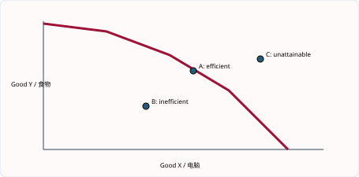
图解：PPC 上的点表示最大可行组合；曲线内点表示闲置或低效；曲线外点在当前资源与技术下不可达。沿曲线移动是组合变化，整条曲线移动才是生产能力变化。
把PPC当作一张“资源约束地图”
画PPC前先固定三个假设：资源数量暂时不变、资源质量暂时不变、技术暂时不变。在这些条件下，曲线给出两种产品的最大可行组合。曲线上是 productive efficiency；曲线内说明至少有一部分资源闲置或低效；曲线外表示当前生产能力无法持续达到。曲线内的点仍然面对稀缺，因为一旦闲置资源被充分利用，继续增加一种产品仍需牺牲另一种产品。
机会成本来自“变化量”而不是某个点本身。若A为(10台机器, 90吨粮食)，B为(20, 82)，从A到B得到10台机器并放弃8吨粮食，所以10台机器的机会成本是8吨粮食，一台机器的平均机会成本是0.8吨粮食。若下一步到C(30, 68)，新增10台机器需放弃14吨粮食，说明机会成本递增。
递增并不是因为曲线画弯了，而是资源具有不同适配度。最适合机器制造的工程师先被调入，代价较低；继续扩张时要使用原本更适合农业的土地和工人，牺牲越来越多粮食。若所有资源能够同等有效地在两部门间转换，PPC才可能接近直线。
Diagram reasoning. A movement along the same PPC changes the product mix but not productive potential. An outward shift requires a change in resources, resource quality or technology. Falling unemployment usually moves production from an interior point towards the existing frontier; it does not by itself move the frontier.
偏向性技术进步要画“旋转”而非机械平移。只有机器生产技术提高时，机器轴截距外移而粮食轴截距不变；普遍教育提高两部门生产率时，两端都可能外移。图后必须用一句完整文字说明原因、移动对象和经济含义。
1.3–1.4｜机会成本与 PPC 综合判断｜Opportunity cost and PPC applications
Step 1 - 先识别位置。 点在曲线内：不是“没有稀缺”，而是既定资源没有充分利用；可用 unemployment、inefficient organisation 或 recession 解释。点在曲线上：在当前技术下生产有效率，但不必然符合社会偏好。点在曲线外：当前不可行，除非贸易、技术或资源改变。
Step 2 - 再识别变化类型。 “More workers receive training”提高 labour productivity，PPC outward shift；“workers move from food to computers”是 movement along PPC；“an earthquake destroys factories”是 inward shift。答题句式：An improvement in human capital raises the productive potential of the economy, so the PPC shifts outwards.
Step 3 - 最后说代价。 若由 A 转向 B，机会成本是少生产的 A。请避免写“B 的机会成本是 B”；机会成本必须是放弃的另一个选项。
知识点 01/07｜逐步判断：一个 PPC 题到底在问什么：先识别题目在改变什么｜Identifying exactly what the question changes
PPC 题只有三类核心变化：点的位置、沿曲线移动、整条曲线移动。失业下降使生产点由曲线内向曲线靠近；军用品增加且消费品减少是沿同一曲线移动；技术、劳动力、资本存量或自然资源改变才移动整条曲线。题干出现“产量上升”并不自动说明 PPC 外移，因为利用闲置资源也能提高实际产量。
知识点 02/07｜逐步判断：一个 PPC 题到底在问什么：用反事实检查答案｜Checking a PPC conclusion with a counterfactual
问自己：资源和技术是否改变？若没有，就不能画新 PPC。再问：两种产品是否一增一减？若是，多半是沿曲线移动。若两种最大产量都提高，才通常整体外移。最后区分 short-run actual output 与 long-run productive potential。
题干出现 reallocate resources 时分析沿曲线移动；出现 unemployment falls 时分析曲线内点向边界移动；出现 technology、education、migration 或 disaster 时才判断 PPC 是否外移、内移或偏向性旋转。
旧 PPC 最大生产 50 台机器或 100 吨粮食；技术只改善机器生产，使最大机器升至 80、粮食仍为 100。图形绕粮食截距向外旋转，而不是平行移动。
先读两条坐标轴代表的产品，再判断点在曲线上、曲线内还是曲线外。沿同一条 PPC 移动表示产品组合改变；资源数量、资源质量或技术改变才使整条 PPC 移动。图形结论必须同时写出 gained output 与 forgone output。
“Output rises”不必然等于“economic growth”。使用闲置资源提高 actual output 与 productive potential 增长必须分开。
PPC综合题的四步判断法
第一步读坐标轴，确认题目讨论的两种产出；第二步判断题目改变的是实际产量还是最大生产能力；第三步判断是点移动还是曲线移动；第四步计算或解释机会成本。把这四步写在草稿纸上，可以避免看到“产量上升”就误判为经济增长。
例如衰退结束后，失业工人重新就业，消费品和资本品都增加。实际生产点可从曲线内移向原PPC，但资源数量和技术未必改变。若政府随后改善全国交通和职业教育，使同样资源产出更多，PPC才向外移动。前者是资源利用率提高，后者是 productive potential 增加。
消费点与生产点也要区分。贸易后，一个国家可以专业化生产并交换，使消费组合落在本国PPC之外；这不表示它在国内使用同样资源生产出了曲线外组合。PPC描述production possibilities，不是所有可能的consumption possibilities。
Worked response. “Investment in capital goods may reduce current consumer-goods output because scarce resources are reallocated. If the new capital raises productivity, the future PPC shifts outwards, allowing more of both goods. The gain depends on whether the capital is appropriate, fully used and maintained.” 这段回答同时写出当前机会成本、未来机制和限制条件。
评价“PPC外移是否提高生活水平”时，还要考虑人口增长、收入分配、污染以及新增能力是否实际使用。生产能力增加只是可能性扩大，不等于每个家庭自动获得更多商品。
知识点 03/07｜单元综合案例｜一座城市为什么不能“什么都要”
设一座城市下一年度可支配预算为20亿元，三个备选项目分别是新医院、地铁延长线和大型体育馆。三个项目都能带来收益，但同一批建筑工人、土地和财政资金不能同时被三次使用。这个情境把本单元的概念连在一起：预算和资源有限体现 scarcity；在项目之间排序体现 choice；选择医院时放弃的最佳项目收益是 opportunity cost；建筑工人、土地、机械和组织项目的企业分别对应不同生产要素。
若城市原来只能在“公共医疗服务”和“交通服务”之间选择，PPC 上的点表示资源被充分利用。经济衰退造成部分工人和机械闲置，实际产量落到曲线以内；重新就业只是由内点回到原曲线，并不等于生产能力增长。只有劳动力质量提高、资本增加或技术进步，才可能使整条 PPC 外移。若新技术只改善交通建设，曲线可能只在交通轴方向外移，而不是平行外移。
Exam-style application. A government chooses a hospital instead of a sports stadium. Explain the opportunity cost and analyse one reason why the PPC may shift outwards. A complete answer should identify the stadium as the next best alternative forgone, then develop one cause such as better worker training → higher labour productivity → more output from given resources → greater productive potential. Do not write merely “more resources”; identify the resource and explain the transmission.
这类题的关键不是背诵四个名词，而是把一个真实决策翻译成模型：先找限制，再找选择，再识别最佳被放弃方案，最后判断变化是“曲线上移动”“内点回到曲线”还是“整条曲线移动”。
知识点 04/07｜不同主体的机会成本｜Opportunity cost in different contexts
消费者选择手机可能放弃旅行；劳动者读大学可能放弃工资和工作经验；企业买机器可能放弃广告；政府建医院可能放弃学校。答案必须指出决策者和next best alternative，不能只写货币成本。
English. Opportunity cost applies to consumers, workers, firms and governments. Identify the decision-maker and the next best feasible alternative.
知识点 05/07｜从产量表计算机会成本｜Calculating opportunity cost from a table
从A到B，某产品增加量是gain，另一产品减少量是sacrifice。单位机会成本=sacrifice ÷ gain。若新增10台机器依次牺牲6、10、15吨粮食，说明机会成本递增。
English. Calculate the amount sacrificed when output of the other good increases. Rising sacrifice for equal additions indicates increasing opportunity cost.
知识点 06/07｜沿PPC移动与PPC移动｜Movement along versus shift of a PPC
沿同一PPC移动只改变两种产品组合；从曲线内移向曲线表示闲置资源被利用；资源数量、质量或技术改变才移动整条PPC。失业下降通常是点移动，不应自动画成曲线外移。
English. A movement along a PPC reallocates resources. A movement from inside to the frontier improves utilisation. A shift changes productive capacity.
知识点 07/07｜经济增长、生活水平与评价｜Growth and living standards
PPC外移扩大可能产出，但实际生活水平还取决于新能力是否使用、人口增长、分配与环境成本。投资资本品可能先牺牲当前消费，之后通过生产率使未来PPC外移。
English. An outward shift increases potential output, not necessarily current welfare. Distribution, population, utilisation and external costs affect the final impact on living standards.
2027–2029 考纲补充与整合｜Syllabus update and synthesis
补充知识点 01/02｜经济物品与免费物品｜Economic and free goods
经济物品（economic good）使用稀缺资源生产，数量有限，因此取得它必然涉及机会成本。免费物品（free good）在特定时间与地点相对充足，取得时没有机会成本，例如无人居住海岸的空气。分类取决于情境：城市中的清洁空气会因污染治理需要资源而成为 economic good。
English explanation. An economic good is scarce in relation to demand and has an opportunity cost. A free good is sufficiently abundant that consuming more does not require society to give up another output. “Free of charge” is not the same as a free good: state education may have no price at the point of use, but teachers, buildings and time are scarce.
补充知识点 02/02｜三个基本经济问题｜What, how and for whom to produce
稀缺迫使社会决定生产什么、如何生产、为谁生产。生产什么涉及消费品与资本品的取舍；如何生产涉及 labour-intensive 与 capital-intensive 方法；为谁生产涉及收入、购买力和政府分配。三问不是背诵口号，而是同一资源约束在产出结构、生产方法和分配结果上的三个表现。
English explanation. Scarcity creates three allocation questions. What to produce concerns the composition of output. How to produce concerns the combination of factors and technology. For whom to produce concerns who receives the goods and services. Different economic systems answer these questions in different ways.
3. 核心词汇表｜Core vocabulary（共 26 词）
| English term | 中文准确口径 | Exam-ready meaning |
|---|---|---|
| scarcity | 稀缺 | A condition in which limited resources cannot satisfy unlimited wants. |
| choice | 选择 | A decision between alternative uses of scarce resources. |
| opportunity cost | 机会成本 | The next best alternative forgone when a choice is made. |
| economic good | 经济品 | A product that is scarce and therefore has an opportunity cost. |
| free good | 自由物品 | A product available without using scarce resources in the relevant situation. |
| wants | 欲望 | Human desires for goods and services. |
| land | 土地／自然资源 | Natural resources used in production. |
| labour | 劳动 | Human physical and mental effort used in production. |
| capital | 资本品 | Man-made resources used to produce other goods and services. |
| enterprise | 企业家才能 | The ability to organise resources and take business risks. |
| productivity | 生产率 | Output produced per unit of input. |
| mobility of labour | 劳动力流动性 | The ability of workers to change occupation or location. |
| investment | 投资 | Spending on capital goods that increases productive capacity. |
| production possibility curve (PPC) | 生产可能性曲线 | The maximum attainable combinations of two products with given resources and technology. |
| productive efficiency | 生产效率 | Producing the maximum output possible from available resources. |
| allocative efficiency | 配置效率 | Producing the combination of goods and services most wanted by society. |
| unattainable | 当前不可达到的 | Outside present productive capacity. |
| economic growth | 经济增长 | An increase in an economy’s productive capacity or real output. |
| resource reallocation | 资源重新配置 | Moving factors of production from one use to another. |
| increasing opportunity cost | 机会成本递增 | Giving up progressively more of one product to obtain extra units of another. |
| movement along a PPC | 沿PPC移动 | A change in the product mix with productive capacity unchanged. |
| shift of a PPC | PPC整体移动 | A change in maximum productive capacity. |
| unemployment | 失业 | People willing and able to work who cannot find employment. |
| spare capacity | 闲置生产能力 | Resources that are available but not currently used. |
| capital goods | 资本品 | Goods used to produce other goods and services. |
| consumer goods | 消费品 | Goods that directly satisfy consumers’ wants. |
4. 单元练习｜Unit practice（共 16 题）
练习 01/16
Question. A council can build a library, repair a road or leave the money in a bank. It builds the library; road repair was its second preference. What is the opportunity cost?
练习 02/16
Question. Explain why economic growth does not remove scarcity.
练习 03/16
Question. Which change definitely improves the quality of labour: more mineral deposits, worker training, a larger factory, or a lower interest rate?
练习 04/16
Question. Analyse how an increase in the quantity and quality of capital may affect an economy.
练习 05/16
Question. An economy moves from a point inside its PPC to a point on the curve. What is the most likely explanation?
练习 06/16
Question. Explain how investment in capital goods can affect current and future living standards.
练习 07/16
Question. Draw a PPC and show (i) unemployed resources becoming fully used and (ii) an improvement in technology affecting both products. Explain why the two changes are different. [6]
练习 08/16
Question. What happens to the PPC when unemployed workers find jobs but the labour force and productivity are unchanged?
练习 09/16
Question. Analyse the PPC effects of a government transferring resources from consumer goods to capital goods.
练习 10/16
Question. An economy moves from a point inside its PPC to a point on the curve. Does this prove that its resources have increased? Explain. [3]
练习 11/16
Question. Which statement best distinguishes a free good from a good supplied free of charge?
A A free good has no market price. B A free good has no opportunity cost. C A free good is provided by government. D A free good is wanted by nobody.
练习 12/16
Question. A government uses land to build a hospital instead of the next-preferred school. What is the opportunity cost?
A the wages of hospital workers B the price of the land C the benefit of the school forgone D all other projects considered
练习 13/16
Question. An economy moves from A (0 machines, 100 tonnes of food) to B (10 machines, 94 tonnes) and then C (20 machines, 84 tonnes). Calculate the opportunity cost of the first and second additional 10 machines. What does the change show? [4]
练习 14/16
Question. Explain why a point inside a PPC does not mean that scarcity has disappeared. [4]
练习 15/16
Question. Explain two ways in which education can change an economy’s PPC. [6]
练习 16/16
Question. Discuss whether an outward shift of a country’s PPC will always raise living standards. [8]
5. 练习答案与解析｜Answers and explanations（共 16 题）
答案 01/16
正确答案｜Correct answer. The benefit from repairing the road. The bank deposit is another alternative but is not the next best one.
答案 02/16
参考答案｜Model answer. Growth shifts productive capacity outwards and allows more wants to be satisfied. However, human wants can continue to expand and resources remain limited relative to those wants. The economy therefore still has to choose how to use labour, land and capital, so opportunity cost remains.
答案 03/16
正确答案｜Correct answer. Worker training, because it increases human capital and the skills embodied in labour.
答案 04/16
参考答案｜Model answer. More and better machinery can raise output per worker. Higher productivity may lower average cost, enabling firms to reduce prices or increase profit. Competitiveness and exports may rise, increasing real GDP. The effect depends on workers having the skills to operate the capital and on sufficient demand.
答案 05/16
正确答案｜Correct answer. Unemployment or inefficiency has fallen. Existing productive capacity is used more fully; the PPC itself need not shift.
答案 06/16
参考答案｜Model answer. Allocating more resources to capital goods requires less current production of consumer goods, so present consumption may fall. The larger capital stock can raise productivity and productive potential later, shifting the PPC outwards. Future real income and consumption may then increase, provided the capital is useful and fully employed.
答案 07/16
正确答案｜Correct answer. Label both axes and draw one PPC. For (i), move an inside point to a point on the same boundary: actual output rises because idle resources are used, but productive capacity is unchanged. For (ii), draw a second PPC outside the first and label the outward shift: improved technology raises the maximum attainable combinations.
答案 08/16
正确答案｜Correct answer. The production point moves towards the existing PPC. Productive potential is unchanged.
答案 09/16
参考答案｜Model answer. In the current period, the economy moves along its PPC towards more capital goods and fewer consumer goods. The sacrificed consumer goods are the opportunity cost. If capital formation raises future productivity, the future PPC may shift outwards, allowing more of both goods.
答案 10/16
正确答案｜Correct answer. No. The movement can result from lower unemployment or better use of existing resources. Actual production rises toward the existing maximum, but the PPC itself shifts only if the quantity or quality of resources, productivity or technology changes.
答案 11/16
正确答案｜Correct answer. B - A free good has no opportunity cost. A government service may be free at the point of use but still use scarce labour, buildings and finance, so it is an economic good.
答案 12/16
正确答案｜Correct answer. C - The opportunity cost is the benefit from the next best alternative forgone, which is the school. It is not the sum of every rejected option.
答案 13/16
正确答案｜Correct answer. A→B costs 100 − 94 = 6 tonnes of food. B→C costs 94 − 84 = 10 tonnes. The opportunity cost rises from 6 to 10 tonnes, showing increasing opportunity cost as resources less suited to machine production are transferred.
答案 14/16
参考答案｜Model answer. A point inside the PPC shows that some resources are unemployed or used inefficiently, so actual output is below potential output. Moving towards the frontier can raise both outputs, but the frontier is still limited. Once resources are fully and efficiently used, producing more of one product requires sacrificing another, so scarcity and choice remain.
答案 15/16
参考答案｜Model answer. Education can improve labour quality and productivity, allowing more output from the same number of workers and shifting the PPC outward. It can also improve occupational mobility, enabling unemployed workers to fill expanding jobs; this may first move actual production towards the existing PPC and, if skills raise productive capacity, shift the frontier outward over time.
答案 16/16
参考答案｜Model answer. It increases productive potential, so the economy can produce more consumer goods and services, raise incomes and possibly collect more tax for public services. However, actual output rises only if the extra capacity is used. Gains may be unevenly distributed, additional production may create pollution, and a shift caused by capital-goods investment may require lower current consumption. Living standards are most likely to rise when capacity is used productively, output matches preferences and environmental and distributional costs are controlled.
6. 自学检查清单｜Self-study checklist（共 10 项）
- □ 能用 finite resources relative to unlimited wants 准确定义 scarcity
- □ 能区分 economic good、free good 与 free-of-charge service
- □ 能在个人、企业和政府情境中找出 next best alternative forgone
- □ 能分类 land、labour、capital、enterprise 并说明各自报酬
- □ 能解释生产要素数量或质量改变如何影响生产能力
- □ 能画出完整坐标、曲线和点位的 PPC
- □ 能解释曲线上、曲线内和曲线外点的含义
- □ 能从相邻组合计算机会成本并解释递增原因
- □ 能区分 movement along PPC、movement towards PPC 与 shift of PPC
- □ 能区分 productive efficiency 与 allocative efficiency
单元 2｜资源配置｜The allocation of resources
官方范围｜Official scope: 2.1–2.10
1. 单元导读｜Unit introduction
本单元建立 IGCSE 微观经济学的核心模型。需求和供给分别解释消费者与企业的计划；价格机制把两者协调到均衡；弹性衡量反应幅度；市场失灵解释为什么自由市场结果可能无效率；政府干预则需要同时分析目标、传导与副作用。学习时必须一直区分“沿曲线移动”和“整条曲线移位”。
与人教版衔接及口径差异｜Connection with Chinese curricula. 与人教版“市场调节与宏观调控”衔接。Cambridge 要求更精确地区分 demand/quantity demanded、supply/quantity supplied，并用图回答价格和数量怎样变化。中文材料有时把“需求增加”泛指购买量变大，但在 Cambridge 图形题中 increase in demand 只表示整条需求曲线右移。
学习路线｜Learning route. 1. 2.1 市场、买方与卖方 — Markets, buyers and sellers 2. 2.2 需求、个人需求与市场需求 — Demand and market demand 3. 2.2 需求量变化与需求曲线移位 — Movements and shifts in demand 4. 2.3 供给及其决定因素 — Supply and its determinants 5. 2.4–2.5 价格机制、均衡、短缺与过剩 — The price mechanism and equilibrium 6. 2.5 需求与供给同时变化 — Simultaneous changes in demand and supply 7. 2.6–2.7 PED、PES 与销售收入 — Elasticity and revenue 8. 2.9–2.10 市场失灵与政府干预 — Market failure and government intervention 9. 2.8–2.10 市场经济、计划经济与混合经济 — Economic systems and the mixed economy
2. 知识点精讲｜Detailed teaching
2.1｜市场、买方与卖方｜Markets, buyers and sellers
市场（market）是使买者与卖者相互接触、进行交换的一种安排；它可以是实体市场，也可以是网络平台。买方通常是 consumers，他们购买商品与服务满足需要；卖方通常是 firms，他们组织生产要素并提供产品。市场不要求买卖双方在同一地点。
English explanation. A market is an arrangement that brings buyers and sellers into contact. Buyers express demand; sellers express supply. Their decisions interact through prices. In Cambridge questions, identify the product market first and distinguish a consumer from a producer.
知识点 01/05｜市场、买方与卖方：市场是一种安排｜A market is an arrangement, not only a place
市场不一定有店铺或固定地点。网约车平台、外汇市场和劳动力市场都让潜在买者与卖者交换。买者形成 demand，卖者形成 supply，价格承担 rationing、signalling 和 incentive 功能。分析前要先界定市场：讨论“饮料市场”与“无糖饮料市场”可能得到不同的竞争者和替代品。
知识点 02/05｜市场、买方与卖方：市场参与者的目标与约束｜Objectives and constraints of buyers and sellers
消费者通常希望在预算内提高 satisfaction；企业希望实现利润或其他目标，但受成本、技术和竞争限制。政府也可能作为买方采购疫苗，或作为卖方提供交通服务。市场中的“买方”和“卖方”是经济角色，不是固定身份；家庭在产品市场是买方，在劳动力市场却出售 labour services。
Buyers 形成 demand，sellers 形成 supply；市场可以是实体地点，也可以是线上或其他使双方接触的安排。价格、数量与交易时期必须明确，才构成可比较的市场信息。
A market includes potential transactions, not only completed sales. Its boundaries matter because a narrow definition may show few competitors, while a broad definition may include many substitutes. Online interaction is sufficient to bring buyers and sellers into contact.
市场不是地点，而是形成交易信息的安排
传统菜市场、股票交易所、网约车平台和线上二手市场外观完全不同，却都让buyers与sellers接触，并产生price与quantity信息。界定市场时要说清产品、地点和时间。例如“饮料市场”过宽，“深圳某学校午餐时段的瓶装水市场”更容易分析需求者、供给者和替代品。
买方通常希望在质量符合要求时以较低价格购买，卖方通常关注收入、成本和利润，但现实目标不只一个。家庭受收入限制，企业受生产能力和竞争限制，政府采购还受预算与公共目标限制。市场结果来自这些分散决定的相互作用，而不是单独由消费者或企业决定。
Worked example. A concert ticket platform brings organisers and fans into contact. If the announced price is low, many fans attempt to buy but the number of seats is fixed. The platform is part of the market arrangement; the shortage is caused by quantity demanded exceeding quantity supplied at that price, not by the absence of a physical market.
English for understanding. A market is any arrangement that enables buyers and sellers to exchange information and trade. Markets create signals about relative scarcity through prices, sales and inventories. The geographical boundary chosen for a market affects which buyers, sellers and substitutes are included.
题目若问“role of buyers and sellers”，不要只写buyers buy、sellers sell。应说明买方需求反映偏好和购买力，卖方供给反映成本、能力与利润预期，两者共同决定价格和交易量。
知识点 03/05｜市场定义与边界｜Defining a market
市场是使买卖双方接触并交换信息或交易的安排，可以是实体、线上或拍卖。分析时要界定产品、地区和时间；“交通市场”与“某城市早高峰网约车市场”的买卖双方和替代品不同。
English. A market is any arrangement that brings buyers and sellers into contact. Its product, geographical and time boundaries determine which participants and substitutes are included.
知识点 04/05｜买方与卖方不是被动标签｜Roles of buyers and sellers
买方的偏好、收入与价格决定需求；卖方的成本、生产能力与利润预期决定供给。二者通过报价、销量和库存相互调整，共同形成市场价格与交易量。
English. Buyers communicate willingness and ability to pay, while sellers communicate willingness and ability to supply. Their interaction produces price and quantity signals.
知识点 05/05｜市场价格传递什么信息｜Information generated by markets
价格上涨可能表示需求增强或供给收缩，但仅凭价格不能知道原因，必须结合数量和曲线变化。销量增加也可能来自需求右移或供给右移，两者价格方向不同。
English. A price change is a signal, not a complete diagnosis. Use changes in both price and quantity to infer whether demand or supply has shifted.
2.2｜需求、个人需求与市场需求｜Demand and market demand
需求（demand）是消费者在一定时期、不同价格下愿意并且能够购买的数量。个人需求是一个消费者的需求；市场需求是在每一个价格水平把所有消费者的需求量横向相加。若价格为 $10，A 购买 500 单位，B 购买 400 单位，则市场需求量为 900。
English explanation. Demand is the willingness and ability to buy a product at different prices over a period of time. Market demand is the horizontal sum of all individual demand: quantities, not prices, are added at each price.
知识点 01/05｜需求、个人需求与市场需求：Demand 包含 willing、able、price 与 time｜The four elements of an accurate demand definition
想买但付不起不是有效需求，有能力但不愿买也不是需求。需求表列出一定时期内不同价格对应的 quantity demanded，曲线只是把表格图形化。需求定律说明 ceteris paribus 下价格越低，需求量通常越大，因为替代效应和收入效应共同作用。
知识点 02/05｜需求、个人需求与市场需求：市场需求为何是横向加总｜Why market demand is a horizontal sum
同一个价格下，把每位消费者愿意购买的数量相加。例如 $10 时 A 买 5 个、B 买 4 个，market quantity demanded 为 9 个；不能把两个 $10 相加为 $20。若第三位消费者在该价位愿意买 2 个，市场需求量变成 11，整条市场需求曲线也可能向右。
Individual demand 的主体是一名消费者；market demand 的主体是同一市场内全部消费者。纵轴价格保持相同，横轴数量逐人相加，单位与时期也必须一致。
价格 $12 时 A 买 3、B 买 5、C 买 0，市场需求量 8；价格 $8 时分别买 5、8、2，市场需求量 15。每行加数量，不能加价格。
在每一个完全相同的价格上，把所有消费者的 quantity demanded 横向相加。价格不能相加，曲线斜率也不能直接相加；市场曲线上的每一点都来自同价位的数量总和。
Willingness without purchasing power is a desire, not effective demand. Ability without willingness also produces no demand. The time period matters: ten units per day and ten units per year describe very different demand.
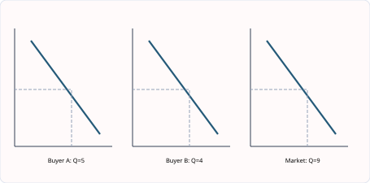
图解：市场需求是在同一价格水平横向相加每位消费者的数量；相加的是 quantities，不是 prices。
Demand定义里的四个必要条件
准确的需求定义同时包含 willingness、ability、不同price levels和一段time period。想要一辆跑车但无力购买不是有效需求；只说“消费者买了100件”是某个价格下的quantity demanded，不是整条需求关系。需求表把价格与计划购买量对应起来，需求曲线只是把这组关系画成图。
市场需求采用横向加总，因为在同一个价格上把每位消费者愿意购买的数量相加。若价格为10元时A买2杯、B买3杯、C买1杯，市场需求量为6杯；不能把三人的价格相加。新消费者进入市场时，每个价格下的总量通常增加，市场需求曲线右移。
需求曲线向右下倾斜可从替代效应和收入效应理解。价格下降后，该商品相对替代品更便宜，消费者倾向替换其他商品；同样收入的实际购买力也提高。IGCSE通常不要求复杂效用理论，但答案要保持“其他条件不变”。
English for understanding. Demand is the willingness and ability to buy a product at different prices over a given period of time. Market demand is obtained by adding individual quantities demanded at each price. A point on the curve is one planned quantity; the curve is the whole relationship.
例题：价格从12元降到9元，购买量从80增至110，且收入、偏好和相关商品价格不变。这是extension in quantity demanded，表现为沿同一D向右下移动；不能写increase in demand，因为没有非价格因素改变。
知识点 03/05｜需求定义的四个元素｜Four elements in the definition of demand
Demand必须包含willingness、ability、different prices和time period。只有愿望没有购买力不是有效需求；某个价格下买100件是quantity demanded，不是整条demand。
English. Demand is willingness and ability to buy at different prices over a period. A quantity demanded is one amount at one price.
知识点 04/05｜需求定律与其他条件不变｜The law of demand
在ceteris paribus下，价格下降通常使需求量增加。替代效应使该商品相对更便宜，实际购买力提高也允许消费者购买更多。这里是沿原D移动。
English. The law of demand describes an inverse relationship between price and quantity demanded, ceteris paribus. It does not describe a shift of demand.
知识点 05/05｜个人需求如何汇成市场需求｜Horizontal summation
在同一价格、同一时期和同一计量单位，把所有消费者的quantity demanded横向相加。若A、B、C在10元分别买2、3、1件，市场需求量是6件；不能相加价格。
English. Market demand is the horizontal sum of individual quantities demanded at each price. Prices must be held the same.
2.2｜需求量变化与需求曲线移位｜Movements and shifts in demand
商品自身价格下降会导致 extension in demand / increase in quantity demanded，表现为沿同一条需求曲线向右下移动；自身价格上升会导致 contraction。收入、相关商品价格、广告、偏好、人口结构、天气和未来价格预期属于非价格决定因素，它们改变整条需求曲线。正常品收入增加使需求右移；劣等品收入增加可能使需求左移。替代品价格上涨会增加本商品需求；互补品价格上涨会减少本商品需求。
English explanation. A change in the product’s own price causes a movement along the existing demand curve. A non-price determinant causes the whole curve to shift. Write “quantity demanded increases” for an extension and “demand increases” for a rightward shift.
知识点 01/06｜需求量移动与需求曲线移位：一条曲线还是两条曲线｜One demand curve or a shifted curve
判断的第一问永远是：变的是商品自己的价格，还是其他条件？Own price change 只改变 quantity demanded，点沿原曲线移动；non-price determinant 改变 demand，整条曲线移动。价格下降形成 extension in demand，价格上涨形成 contraction in demand。收入、偏好、广告、人口、预期和相关商品价格不在纵轴上，所以需要画新曲线。
知识点 02/06｜需求量移动与需求曲线移位：相关商品与收入的方向判断｜Income and related-goods effects on demand
咖啡与茶是 substitutes：咖啡价格上升，部分消费者改买茶，茶的 demand increases。汽车与汽油是 complements：汽油价格上升使驾车总成本增加，汽车需求下降。收入上升令 normal good 需求增加，却可能令 inferior good 需求减少。先识别关系，再写消费者选择改变，最后判断 D0→D1 的方向。
Own price 位于需求图纵轴，因此其变化表现为同一 D 上的点移动。Income、taste、population、expectations 及 related goods prices 不在坐标轴上，因此改变每一价格下的购买计划，使整条 D 移位。
tea price rises -> coffee is a substitute -> consumers switch from tea to coffee -> coffee demand increases -> coffee demand curve shifts right -> coffee equilibrium price and quantity tend to rise。
商品自身价格改变时，标出同一条 D 曲线上的 A、B 两点；收入、偏好、人口、预期或相关商品价格改变时，才画 D0 到 D1。作答时必须用 movement along 与 shift 的不同术语。
The curve represents the relationship between the product’s own price and quantity demanded. Therefore, a change in any other determinant changes the relationship itself and requires a new curve. State both the determinant and why willingness or ability to buy changes.
“价格下降使需求增加”在 Cambridge 精确口径中应写 quantity demanded increases 或 extension in demand。
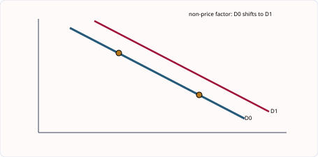
图解：商品自身价格变化造成沿 D 移动；收入、偏好、人口及相关商品价格等非价格因素使 D 整体移动。
先问“商品自身价格变了吗”
区分movement和shift的最稳方法不是背方向，而是检查原因。商品自身价格变化，只改变quantity demanded，点沿原需求曲线移动；收入、偏好、广告、人口、预期和相关商品价格变化，改变每个价格下的计划购买量，使整条需求曲线移动。
收入效应必须先判断商品性质。收入上升使normal good需求增加，但可能使inferior good需求减少。相关商品则先判断关系：咖啡与茶是替代品，茶价上升可使咖啡需求右移；汽车与汽油是互补品，汽油价格上升可使汽车需求左移。题目不给关系时不能擅自假设。
Two-stage example. 健康报告提高人们对水果的偏好，D由D0右移到D1；在原价格出现短缺，价格随后上涨。第一步是需求曲线右移，第二步是新曲线上quantity demanded收缩。许多学生只画一个箭头，把“曲线移动”和“均衡调整”混为一谈。
English for understanding. A change in the product’s own price causes a movement along a demand curve. A non-price determinant changes demand and shifts the entire curve. After a shift, a new market price may cause a further movement along the new curve; these are two separate stages.
选择题常用“increase in demand”与“extension in demand”互换诱导。前者是D右移，后者是价格下降造成沿D移动。结构题必须写明原因、曲线、方向，并说明新均衡价格和数量如何变化。
知识点 03/06｜自身价格只造成沿曲线移动｜Own-price movements
价格下降造成extension in demand，价格上升造成contraction in demand。严谨说法是quantity demanded changes；不要把extension误写成整条demand curve increases。
English. A change in the product’s own price causes a movement along the demand curve: an extension when price falls and a contraction when price rises.
知识点 04/06｜非价格因素使整条曲线移动｜Non-price determinants
收入、偏好、广告、人口、未来预期、季节与相关商品价格改变每一个价格下的计划购买量。需求增加D右移，需求减少D左移。
English. A non-price determinant changes willingness or ability to buy at every price, shifting the entire demand curve.
知识点 05/06｜收入变化要先判断商品性质｜Normal and inferior goods
收入上升使normal good需求增加，却可能使inferior good需求减少。inferior不是质量差的同义词，而是一个由收入—需求关系定义的类别。
English. Demand for a normal good rises with income, while demand for an inferior good falls. The classification depends on consumer behaviour, not an objective quality label.
知识点 06/06｜相关商品先判断替代或互补｜Substitutes and complements
替代品A涨价会使B需求增加；互补品A涨价会使B需求减少。完整链条是相关商品价格变化→消费者转换或减少联合使用→目标商品D移动。
English. A rise in the price of a substitute increases demand for the product; a rise in the price of a complement decreases it, ceteris paribus.
2.3｜供给及其决定因素｜Supply and its determinants
供给（supply）是在一定时期、不同价格下厂商愿意并且能够出售的数量。商品自身价格变化造成沿供给曲线移动；生产成本、技术、间接税、补贴、其他产品利润、企业数量、天气、战争和原材料发现等会使整条供给曲线移动。成本下降或技术改善使供给右移；间接税提高单位成本，使供给左移；补贴使供给右移。
English explanation. Supply is the willingness and ability of producers to sell a product at different prices over a period of time. A rise in the product’s own price causes an extension in supply. Lower costs, better technology or a subsidy increase supply.
知识点 01/06｜供给与供给决定因素：Supply 看的是厂商计划出售量｜Supply as producers planned sales
库存很多不等于市场供给一定多；供给指厂商在不同价格下愿意且能够出售的数量。价格上涨通常提高边际收益，使扩产更有吸引力，形成 extension in supply。若生产能力、成本或政策改变，则每个价格下都可能愿意出售更多或更少，曲线才发生 shift。
知识点 02/06｜供给与供给决定因素：决定因素的机制不能只背方向｜How costs, technology and policy shift supply
工资、能源和原材料价格下降会降低 unit cost，提高每单位利润，因此 supply increases。技术改善提高 productivity，也会降低 average cost。Indirect tax 提高单位成本，使 S 左移；subsidy 降低有效成本，使 S 右移。好天气提高农作物产量；灾害、战争或资源枯竭限制生产。其他产品更有利可图时，企业可能转移资源，当前产品供给减少。
Supply 的主体是 producers，核心是不同价格下 planned quantity supplied。Own price 改变利润边际并造成沿 S 移动；input costs、technology、tax、subsidy、weather 与 number of firms 改变整条 S。
electricity cost falls -> unit production cost falls -> profit per unit at every price rises -> firms are willing and able to sell more -> supply shifts right -> equilibrium price tends to fall and quantity rises。
纵轴是 price，横轴是 quantity。先找 demand 与 supply 的交点，再从价格线分别读 Qd 和 Qs。曲线移动时先说明是哪一个非价格因素改变，再比较新旧 equilibrium price 与 equilibrium quantity。
Supply describes planned sales, not all existing stock. A warehouse may contain goods that the owner is unwilling to sell at the current price. Explain shifts through costs, profitability and productive capacity rather than memorising directions only.
“供给增加”不能仅由产品自身价格上涨造成；那是 quantity supplied 增加。
供给变化必须经过成本、收入与利润
Supply是企业在不同价格下愿意且能够出售的数量。商品自身价格上升通常提高每单位销售收入，在其他条件不变时形成extension in quantity supplied；商品自身价格下降形成contraction。整条供给曲线移动必须来自非价格因素。
最重要的因果桥梁是unit cost与profit。工资、原料或能源成本下降，在每个销售价格下都提高潜在利润，企业愿意供应更多，S右移；间接税提高单位成本，S左移；补贴降低有效成本，S右移。技术进步只有在提高生产率或降低成本时才增加供给，不能只写“technology improves, supply rises”。
其他商品价格需要从资源选择解释。农民既可种玉米也可种大豆，大豆价格上升提高其预期收益，土地可能转向大豆，玉米供给左移。牛肉与牛皮属于joint supply，牛肉产量提高可能同时增加牛皮供给，方向不同于竞争性供给。
English for understanding. Supply changes when a determinant alters the profitability or capacity of production at every price. A fall in input costs raises expected profit, so firms are willing to supply more. A change in the product’s own price does not shift supply; it changes quantity supplied along the curve.
天气对农业供给、企业数量对市场供给、预期未来价格对当前库存决策的影响都要说明具体机制。结论写到“曲线右移”还不够，还应推到均衡价格和数量的变化。
知识点 03/06｜供给定义与供给定律｜Supply and the law of supply
Supply是生产者在一段时间、不同价格下愿意且能够出售的数量。其他条件不变，价格上升通常使quantity supplied增加，因为单位收入和潜在利润提高。
English. Supply is willingness and ability to sell at different prices over a period. A higher own price normally causes an extension in quantity supplied.
知识点 04/06｜成本变化是供给移动的核心桥梁｜Costs and profitability
原料、工资或能源成本上升会在每个销售价格下降低利润，使S左移；成本下降使S右移。解释技术时要写“提高生产率或降低单位成本”，不能只写technology improves。
English. A higher cost of production reduces profit at every selling price, so supply decreases. Productivity-improving technology can lower unit cost and increase supply.
知识点 05/06｜税、补贴与企业数量｜Taxes, subsidies and firm numbers
每单位间接税提高有效成本，使供给左移；补贴降低有效成本，使供给右移。企业进入增加market supply，企业退出减少market supply。政策改变供给后，市场价格再引发沿新曲线移动。
English. An indirect tax shifts supply left; a subsidy shifts it right. Entry and exit change the number of suppliers and therefore market supply.
知识点 06/06｜天气、其他产品与预期｜Other supply determinants
好天气可提高农产品产量；竞争性产品价格上升会吸走共同资源；joint products可能一起增加。预期未来价格更高时，耐储存商品的当前供给可能减少。每个结论都要写明资源或库存机制。
English. Weather, prices of alternative products, joint supply and expectations affect capacity or profitability. The direction must be explained from the producer’s decision.
2.4–2.5｜价格机制、均衡、短缺与过剩｜The price mechanism and equilibrium
价格机制通过价格变化协调消费者和企业的决定，并回答生产什么、如何生产和为谁生产。均衡出现在 quantity demanded equals quantity supplied。低于均衡价时出现 shortage，买方竞争产生价格上升压力；高于均衡价时出现 surplus，库存增加产生价格下降压力。
English explanation. The price mechanism allocates resources through changes in demand, supply and price. A shortage causes upward pressure on price; a surplus causes downward pressure. The market moves towards equilibrium where planned purchases equal planned sales.
知识点 01/10｜价格机制到底是什么｜How the price mechanism coordinates a market
价格机制（price mechanism）是价格根据 demand 与 supply 的变化而调整，并据此配置稀缺资源的过程。它不是某个人发出命令，而是大量消费者与企业分别作出决定后，通过价格相互协调。完整分析包含三层：外部事件先改变 demand 或 supply；市场随后出现 shortage 或 surplus；价格再发生变化，使 quantity demanded 和 quantity supplied 沿原曲线调整，市场趋向新均衡。
例如某城市突然流行电动自行车，需求曲线右移。在原价格下 Qd 大于 Qs，门店很快售罄。短缺向卖方传递“消费者愿意购买更多”的信息，价格可能上涨，企业也更愿意进货或扩产，最终形成较高的 equilibrium price 与较大的 equilibrium quantity。这条链比“需求增加，所以价格上涨”更完整。
知识点 02/10｜信号功能｜Signalling function
价格像一个不断更新的信息系统。价格上涨可能表示商品变得相对稀缺，原因可能是需求增加或供给减少；价格下降可能表示需求减弱或供给增加。企业不需要知道每一位消费者为什么改变选择，也能从销量、库存和价格观察市场信号。不过，单看价格不能确定曲线移动原因：同样是 price rise，可能来自 D right，也可能来自 S left，两者对 equilibrium quantity 的影响相反。
English explanation. The signalling function means that changes in price communicate information about relative scarcity. A rising price may signal stronger demand or reduced supply. Producers should also consider whether the change is temporary, the cost of expansion and expected future demand.
知识点 03/10｜激励功能｜Incentive function
价格上升通常提高每单位潜在 revenue 和 profit，形成增产激励。现有企业可能增加 workers’ hours、使用 spare capacity 或购买 machinery；较长时期内，新企业可能 enter the market。于是 quantity supplied 先沿供给曲线增加，若企业数量或生产能力增长，整条 supply curve 还可能右移。持续低价和亏损则促使企业减产或退出，让 labour、capital 和 land 转向回报更高的用途。
激励并不保证供给立刻大幅增加。鲜花、农作物和住房需要生产时间，PES 较低；制造商若有库存和闲置设备，反应可能更快。高价也可能由间接税造成，并不表示生产者实际收入同比上涨。因此评价要考虑 time period、PES、capacity 和 costs。
English explanation. The incentive function changes behaviour. A higher market price can raise expected profit, encouraging existing firms to expand and new firms to enter. The speed and size of the response depend on price elasticity of supply, spare capacity, stocks and the production period.
知识点 04/10｜配给功能｜Rationing function
当商品数量有限，价格上涨会减少 quantity demanded，把产品分配给 willing and able to pay 的消费者。演唱会座位、城市中心住房或干旱时期的水都可能通过价格配给。这里的 able to pay 很重要：市场配给依据购买力，不是依据“谁最需要”。所以价格机制可能有效消除 shortage，却产生 equity 问题；低收入家庭可能买不起必需品。政府可使用 subsidy、direct provision 或 maximum price，但这些政策也可能造成财政成本或新的短缺。
English explanation. The rationing function allocates a scarce product among competing consumers. A higher price reduces quantity demanded, so the available supply goes to those willing and able to pay. This may restore equilibrium, but it does not necessarily produce a fair distribution.
知识点 05/10｜价格机制怎样回答三个基本经济问题｜How prices answer the three economic questions
生产什么｜What to produce? 消费者通过 demand 表达偏好。需求增加通常使价格与利润上升，企业把资源转入该市场；需求下降则使资源退出。准确说法是 consumer sovereignty works through demand, price and profit signals。
如何生产｜How to produce? 企业比较 labour、capital、land 等要素的相对价格和生产率，选择成本较低且符合质量要求的方法。若工资相对机器价格上升，企业可能采用 capital-intensive production；但机器购置成本、技能、产量规模和质量也会影响决定，所以不能简单写“永远选最便宜要素”。
为谁生产｜For whom to produce? 商品主要流向愿意且能够支付市场价格的人，购买力来自 wages、rent、interest、profit、wealth 或政府转移。市场按 income and purchasing power 分配，而不是按 need 分配，这正是效率与公平之间的重要张力。
English summary. Consumer demand and profit signals influence what is produced. Relative factor prices and productivity influence how it is produced. Income and purchasing power influence for whom it is produced. These outcomes may be efficient, but they are not necessarily equitable.
知识点 06/10｜均衡是一组价格与数量｜Equilibrium price and equilibrium quantity
均衡点 E 同时给出 equilibrium price Pe 和 equilibrium quantity Qe。Pe 以下 Qd>Qs，出现 shortage；Pe 以上 Qs>Qd，出现 surplus。价格变化使需求量和供给量沿各自曲线移动，直到 planned purchases equal planned sales。均衡不是“公平价格”，也不保证每个人满意；它只表示市场没有内在的价格变化压力。
知识点 07/10｜供过于求｜Surplus：Qs > Qd
假设 equilibrium price 是 $6、quantity 是 100。若价格为 $8，消费者计划购买 70，企业计划出售 130，因此 surplus=Qs-Qd=60。库存积压使企业降价；价格下降造成 extension in demand 和 contraction in supply，差额逐渐缩小，直到回到均衡。D 与 S 都没有移动，因为引起调整的是商品自身价格。
English chain. Price is above equilibrium → quantity supplied exceeds quantity demanded → unsold stocks accumulate → sellers reduce price → quantity demanded extends and quantity supplied contracts → the surplus disappears at equilibrium.
口诀 Qs > Qd = surplus 只负责快速判断；完整答案还要写 unsold stock 和 downward pressure on price。
知识点 08/10｜供不应求｜Shortage：Qd > Qs
若价格为 $4，消费者计划购买 140，企业只计划出售 60，因此 shortage=Qd-Qs=80。消费者竞争、排队或缺货使价格承受上升压力；价格上涨造成 contraction in demand 和 extension in supply，直到 Qd=Qs。若 maximum price 阻止价格上升，shortage 可能持续，并出现 waiting lists、black markets 或 non-price rationing。
English chain. Price is below equilibrium → quantity demanded exceeds quantity supplied → excess demand creates upward pressure on price → quantity demanded contracts and quantity supplied extends → equilibrium is restored.
口诀 Qd > Qs = shortage。Shortage 不是“供给减少”的同义词，而是某一个价格下 Qd 与 Qs 的差额。
知识点 09/10｜用供需数据验证两张图｜Verifying surplus and shortage with data
Price $8：Qd 70，Qs 130 → surplus 60 → downward pressure on price。
Price $6：Qd 100，Qs 100 → equilibrium → no tendency for price to change。
Price $4：Qd 140，Qs 60 → shortage 80 → upward pressure on price。
读表顺序：在同一价格比较 Qd 和 Qs；用较大者减较小者计算 gap；最后判断价格方向。不要用不同价格的两行数据相减，也不要把 shortage 写成负数。
知识点 10/10｜图表题的得分细节｜Required labels and adjustment arrows
两张图都标 Price 纵轴、Quantity 横轴、向下的 D、向上的 S、交点 E 和均衡价 Pe。Surplus 图在 Pe 上方画 P1：左边是 Qd、右边是 Qs，中间标 surplus。Shortage 图在 Pe 下方画 P1：左边是 Qs、右边是 Qd，中间标 shortage。只画水平线而不标 Qd/Qs，阅卷人无法确认你是否理解差额。
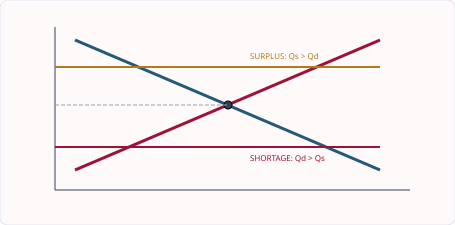
图解：P 高于 Pe 时 Qs>Qd，产生 surplus 与降价压力；P 低于 Pe 时 Qd>Qs，产生 shortage 与涨价压力。
从失衡到均衡：价格为什么会自己移动
均衡不是“大家都满意”或“价格最公平”，而是在Pe时planned purchases等于planned sales，市场内部没有继续改变价格的压力。若价格高于Pe，Qs>Qd，未售库存累积；卖方为清库存降价，价格下降带来extension in demand和contraction in supply。若价格低于Pe，Qd>Qs，排队、缺货和买方竞争产生涨价压力，直到两者相等。
价格机制的三项功能互相连接。信号功能告诉企业商品相对稀缺程度发生变化；激励功能通过利润预期改变生产和进入退出；配给功能通过价格筛选willing and able to pay的买方。它可以有效协调分散决定，却不保证按需要分配，所以效率与公平必须分开评价。
Numerical walkthrough.
Pe为6元、Qe为100。若价格为8元，Qd=70、Qs=130，surplus为130-70=60；库存使价格下降。若价格为4元，Qd=140、Qs=60，shortage为140-60=80；买方竞争使价格上升。计算缺口必须在同一价格行比较Qd和Qs。
English answer chain. “The price is below equilibrium, so quantity demanded exceeds quantity supplied. The shortage creates upward pressure on price. As price rises, quantity demanded contracts and quantity supplied extends until the market reaches equilibrium.” 每个动词都对应图上的点移动。
三个基本经济问题也可由价格解释：需求和利润信号影响what to produce；要素相对价格与生产率影响how to produce；收入与购买力影响for whom to produce。最后一项尤其说明市场分配未必公平。
2.5｜需求与供给同时变化｜Simultaneous changes in demand and supply
当需求和供给同时右移时，均衡数量一定增加，但均衡价格方向取决于两条曲线移动的相对幅度。如果需求增加幅度大于供给增加，价格上升；若供给增加幅度更大，价格下降。若一条右移、一条左移，则可能只能确定价格或数量中的一个。
English explanation. When both demand and supply increase, equilibrium quantity rises, but the effect on equilibrium price is uncertain. It depends on the relative size of the two shifts. State what is certain and what is indeterminate.
知识点 01/04｜需求和供给同时移动：先单独判断，再合并｜Combining separate demand and supply effects
同时移动题不能凭直觉直接下结论。先只看 demand shift 对 P、Q 的作用，再只看 supply shift，最后比较方向。D↑ 使 P↑Q↑；S↑ 使 P↓Q↑，合并后 Q 一定↑，P 不确定。D↓ 与 S↓ 使 Q 一定↓，P 不确定。D↑ 与 S↓ 使 P 一定↑，Q 不确定；D↓ 与 S↑ 使 P 一定↓，Q 不确定。
知识点 02/04｜需求和供给同时移动：“不确定”也需要经济解释｜Explaining an indeterminate price or quantity
不确定不是不会做，而是缺少 relative magnitude。若 demand increase 比 supply increase 大，价格上升；若 supply increase 更大，价格下降；幅度相同则价格可能不变。图中可以画两种可能的新交点，或在文字中清楚说明条件。
当 D 与 S 同时移动，equilibrium price 和 quantity 分别受到两个方向影响。先隔离每一次 shift，再把对同一结果变量的方向合并；同向可确定，反向则取决于 relative magnitude。
healthy diet campaign -> tomato demand right -> P↑Q↑；good harvest -> tomato supply right -> P↓Q↑；合并后 Q↑，P depends on relative shifts。
先只移动 demand 并记录价格、数量方向，再恢复原图只移动 supply，最后把两个结果合并。若两个变化对某一变量方向相反，就只能写 depends on the relative size of the shifts。
Do not add or average separate equilibrium prices. The final equilibrium is the intersection of the two new curves. State the certain variable first and then explain why the other is indeterminate.
两条曲线同时移动时，先分开再合并
不要凭直觉直接猜答案。先只移动需求，写出P和Q方向；再恢复原图，只移动供给；最后把两种影响叠加。需求增加使P↑、Q↑，供给增加使P↓、Q↑，所以两者同时增加时Q一定上升，而P取决于哪条曲线移动幅度更大。
四种组合可以形成稳定判断：D↑与S↑，Q↑而P不确定；D↓与S↓，Q↓而P不确定；D↑与S↓，P↑而Q不确定；D↓与S↑，P↓而Q不确定。“不确定”不是没有答案，而是必须说明两个力量方向相反、相对幅度未知。
Worked example. 电动汽车偏好提高使D右移，同时电池技术降低成本使S右移。销量一定增加。若需求增幅大于供给增幅，价格上涨；若供给增幅更大，价格下降；若两者在价格方向上恰好抵消，价格可不变。
English for understanding. When demand and supply both change, analyse each shift separately. A variable has a certain direction only when both shifts push it the same way. If the effects oppose each other, the final direction depends on the relative size of the shifts.
作图时至少标D1/D2、S1/S2和旧新均衡点E1/E2。不要用“需求增加大于供给增加”比较两条曲线的横向距离而不说明价格结果；题目若不给幅度，正确结论就是有条件的。
知识点 03/04｜四种组合的确定与不确定结果｜The four simultaneous-shift cases
D↑S↑时Q↑而P不确定；D↓S↓时Q↓而P不确定；D↑S↓时P↑而Q不确定；D↓S↑时P↓而Q不确定。不确定来自两种力量方向相反，而不是题目无解。
English. Analyse each shift separately. A variable is certain when both shifts push it in the same direction; otherwise the result depends on relative magnitudes.
知识点 04/04｜作图与文字必须描述同一个新均衡｜Diagram discipline
先标D1、S1、E1，再画D2、S2和E2。若题目不给幅度，可画一种可能并在文字中说明另一变量不确定；不能把两个单独均衡价平均。
English. The final equilibrium is the intersection of the two new curves. Do not add or average the separate price effects.
2.6–2.7｜PED、PES 与销售收入｜Elasticity and revenue
弹性不是“需求或供给有没有变化”，而是价格变化后数量反应的相对大小。本节按“定义 → 百分比 → 数值分类 → 决定因素 → 总收益 → 决策应用”的顺序学习。计算、图像和文字解释必须互相一致。
知识点 01/12｜PED 的完整定义｜The complete meaning of PED
需求价格弹性（price elasticity of demand, PED）衡量商品自身价格发生百分比变化时，需求量发生多大百分比变化。定义中有三个关键限制：只讨论商品自身价格；反应变量是 quantity demanded；计算用百分比而非单位数。
English. PED measures the responsiveness of quantity demanded to a change in the price of the product. “Responsiveness” asks how large the reaction is. It does not mean that the demand curve shifts: a price change causes a movement along the existing demand curve, ceteris paribus.
价格从10元升到12元而需求量从100降到70，是沿原需求曲线的 contraction。不能写成 “demand decreases”，因为消费者在每一个价格下的购买意愿没有被证明改变。
知识点 02/12｜PED 公式与计算顺序｜Formula and calculation method
PED = percentage change in quantity demanded ÷ percentage change in price
以原值为基数时：%ΔQd = (new Qd − original Qd) ÷ original Qd × 100；价格同理。例：价格20元升至22元，涨幅为2÷20×100=10%；需求量500降至450，变化为−50÷500×100=−10%；PED=−10%÷10%=−1。分类通常看绝对值，所以
|PED|=1，属于 unit elastic。
需求定律使PED通常为负。若试题或课堂以正数表达PED，应明确写 absolute value。不要一会儿使用负数、一会儿把负号丢掉，也不要把“50件÷2元”当作弹性。
知识点 03/12｜五种 PED 数值及图像｜Five PED classifications
| Classification | PED value | Meaning | Typical diagram |
|---|---|---|---|
| perfectly inelastic | 0 | price changes but Qd does not change | vertical demand curve |
| inelastic | between 0 and 1 | %ΔQd is smaller than %ΔP | relatively small quantity response |
| unit elastic | 1 | %ΔQd equals %ΔP | total revenue unchanged for a small price change |
| elastic | greater than 1 | %ΔQd is larger than %ΔP | relatively large quantity response |
| perfectly elastic | infinity | any price rise reduces Qd to zero in the model | horizontal demand curve |
“陡峭看起来缺乏弹性、平坦看起来富有弹性”只能作直观辅助，不能代替百分比计算；坐标刻度改变就会改变视觉斜率，同一条直线需求曲线上不同点的PED也可能不同。
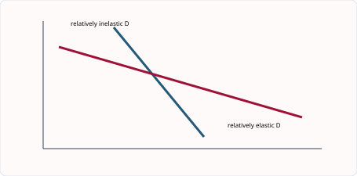
知识点 04/12｜PED 的决定因素：替代品与市场范围｜Substitutes and market definition
替代品越多、越接近，消费者在涨价后越容易转向其他商品，需求越富有弹性。一个品牌的瓶装水通常比“饮用水”这个大类更富弹性，因为品牌之间可替换，而整个品类的替代范围更小。
市场定义越窄，通常可找到的替代品越多。例如“某品牌草莓酸奶”的需求可能比“食品”的需求更富弹性。答题必须把因素连成机制：more close substitutes → easier switching → larger percentage change in Qd → more elastic demand。
知识点 05/12｜PED 的决定因素：必需程度、收入占比、习惯与时间｜Necessity, income share, habit and time
必需品通常较缺乏弹性，奢侈品通常较富有弹性，但要结合具体消费者。商品占收入比例越高，涨价越值得比较和推迟，需求通常越富有弹性；一小包盐占预算极小，汽车占预算很大。成瘾、品牌忠诚或长期合同会减少短期反应。时间越长，消费者越能寻找替代品、改变设备或生活习惯，因此需求往往更富有弹性。
English. Demand tends to be more elastic when close substitutes are available, the product is a luxury, it takes a large share of income, purchase can be postponed, and consumers have more time to adjust. These are tendencies, not automatic rules.
知识点 06/12｜PED 与总收益的核心关系｜PED and total revenue
企业的 total revenue (TR) 等于
price × quantity sold；消费者在该商品上的总支出，在交易量相同的简单市场中也是
P×Q。价格改变会同时改变P与Q，所以不能只看价格方向。
| Price change | Inelastic demand | Unit elastic demand | Elastic demand |
|---|---|---|---|
| price rises | TR rises | TR approximately unchanged | TR falls |
| price falls | TR falls | TR approximately unchanged | TR rises |
机制：需求缺乏弹性时，价格上涨百分比大于销量下降百分比，P的增加占主导；需求富有弹性时，销量下降比例更大，Q的减少占主导。TR不是profit；成本也变化时，利润方向未必相同。
知识点 07/12｜总收益完整算例｜A complete revenue calculation
某影院票价由50元降至45元，销量由200张增至260张。价格下降10%，销量增加30%，|PED|=30÷10=3，需求富有弹性。原TR=50×200=10 000元；新TR=45×260=11 700元，增加1
700元。这既验证了PED结论，也提醒我们必须比较两个收入数值，不能只背口诀。
English model. Demand is price-elastic because quantity demanded rises by a greater percentage than price falls. Total revenue therefore rises from 10 000 to 11 700, ceteris paribus.
知识点 08/12｜PED 对消费者、企业、劳动者与政府的意义｜Why PED matters
企业可用PED评估涨价、降价和产品差异化，但仍要考虑成本与竞争者反应。政府若想用税减少某种消费，较富弹性的需求通常使数量反应更大；若主要目标是筹集税收，较缺乏弹性的需求可能带来较稳定税基，但可能加重低收入消费者负担。劳动者的工资与就业也受产品需求弹性影响：若产品需求很富弹性，工资推高成本和产品价格后，销量与劳动需求可能下降较多。
消费者并非简单“偏好富有弹性”。更准确地说，替代选择多会增强消费者转向其他商品的能力，迫使企业重视价格与质量。
知识点 09/12｜PES 的完整定义与公式｜Meaning and formula of PES
供给价格弹性（price elasticity of supply, PES）衡量商品自身价格发生百分比变化时，供给量发生多大百分比变化。
PES = percentage change in quantity supplied ÷ percentage change in price
English. PES measures the responsiveness of quantity supplied to a change in price. Supply usually moves in the same direction as price, so PES is normally positive. A price rise causes an extension in supply, not an increase in supply.
知识点 10/12｜五种 PES 与完整算例｜PES values and calculation
PES=0 为 perfectly inelastic supply，供给曲线垂直；0<PES<1 为 inelastic；PES=1 为 unitary；PES>1 为 elastic；PES趋于无穷大为 perfectly elastic，供给曲线水平。
例：价格由8元升至10元，涨幅25%；供给量由400增至500，涨幅25%；PES=25÷25=1。若供给量只增至440，涨幅10%，PES=10÷25=0.4，供给缺乏弹性。
知识点 11/12｜PES 的决定因素｜Determinants of PES
PES取决于企业能否快速增加产量：有库存可直接销售、有闲置机器与工人、有容易获得的原料、生产周期短、要素流动性强时，供给较富有弹性。农作物需要生长，酒店房间短期固定，短期供给通常缺乏弹性；长期可扩建、培训和进入市场，PES往往提高。易腐商品难以储存，也会限制价格上涨后的供给反应。
完整因果链示例：spare capacity → firms can raise output without building a new factory → Qs responds by a larger percentage → supply is more elastic。
知识点 12/12｜PED、PES 易错边界与综合应用｜Common traps and synthesis
PED讨论消费者的quantity demanded，PES讨论生产者的quantity supplied；二者都使用百分比，却不能互换决定因素。弹性衡量沿曲线的反应程度，不是导致曲线移动的因素本身。税收后价格由买卖双方如何分担与PED/PES均有关，但0455答题应以题目给出的图和情境为准，不机械背结论。
Exam-ready checklist. Write the formula; show both percentage changes; state whether an absolute PED value is used; classify the value; interpret it in the context; if revenue is asked, calculate old and new TR; if evaluation is asked, add a condition such as time, substitutes, costs or policy objective.
2.9–2.10｜市场失灵与政府干预｜Market failure and government intervention
市场失灵不是“市场停止交易”，也不是“某企业亏损”。它指自由市场形成的价格、产量或产品组合没有实现有效资源配置。本节先建立私人决定与社会结果之间的桥梁，再分别拆解 externalities、merit/demerit goods、public goods 与 monopoly；最后才匹配政策。
知识点 01/15｜市场失灵的本质｜What market failure means
Market failure occurs when the free market does not allocate resources efficiently. “没有有效配置”常表现为：社会不希望的商品生产或消费过多；社会希望的商品过少；某些商品完全不由市场提供；垄断限制供给并提高价格。
市场仍可能有买卖、有价格、有利润，却依然失灵。判断顺序是：谁在作决定？他考虑了哪些成本与收益？哪些影响落到交易之外的人？市场结果是过多、过少还是不提供？
知识点 02/15｜第三方与外部性｜Third parties and externalities
Third parties 是没有直接参与该生产或消费交易，却受到影响的人。Externality 是没有被市场价格和私人决定充分计入的第三方成本或收益。外部性可以来自生产，也可以来自消费。
工厂与顾客交易，但附近居民承受污染，这是 external cost；接种者与医疗机构交易，但他人感染风险也可能下降，这是 external benefit。买方支付的价格、卖方支付的工资都不是外部性，因为它们属于交易双方直接承担的影响。
知识点 03/15｜私人成本、外部成本与社会成本｜Private, external and social cost
Private cost 是生产者或消费者自己承担的成本，如原料、工资、票价或个人健康损害。External cost 是第三方承担的成本，如噪声、空气污染或拥堵。Social cost 是全社会承担的总成本：
social cost = private cost + external cost
若一件产品的private cost为6元，生产造成的external cost为3元，social cost为9元。市场参与者若只面对6元，就可能把该活动做得过多。这是文字机制，不要求画市场失灵的社会成本曲线。
知识点 04/15｜私人收益、外部收益与社会收益｜Private, external and social benefit
Private benefit 由直接消费或生产者获得，如教育提高个人技能与收入。External benefit 由第三方获得，如受教育者可能提高社会生产率、减少犯罪或改善公共决策。Social benefit 是全社会获得的总收益：
social benefit = private benefit + external benefit
若消费者只依据private benefit作决定，带有external benefit的商品可能被消费过少。不要把external benefit写成“政府得到的收益”；关键是第三方没有直接参与交易。
知识点 05/15｜外部成本为何导致过度生产或消费｜Why external costs create over-allocation
工厂只计算原料、工资和设备折旧，没有承担附近居民的医疗和清洁成本，因此private cost低于social cost；产品价格可能过低，市场产量和消费量过高，资源过多流向该活动。
English chain. The producer considers private cost but ignores the external cost imposed on third parties. Social cost is therefore greater than private cost. The market price is too low and the good is over-produced and over-consumed, causing a misallocation of resources.
知识点 06/15｜外部收益为何导致供给或消费不足｜Why external benefits create under-allocation
培训课程给学员带来技能和收入，也可能让企业与社会得到更高生产率。若学员只比较学费与自己的private benefit，且无法获得全部external benefit，他可能少购买培训，导致市场消费与生产不足。
English chain. Consumers consider private benefit but may not recognise the external benefit received by third parties. Social benefit exceeds private benefit, so the product is under-consumed and under-produced in a free market.
知识点 07/15｜有益品不是“好东西”的口号｜Merit goods
Merit good（有益品）是消费者可能低估其私人收益，因信息不完整、短视或支付能力不足而在自由市场中消费不足的商品。教育、预防性医疗和疫苗常被用作例子。它们也可能产生external benefits，但“有外部收益”不是merit good定义的唯一条件。
以疫苗为例：个人获得降低患病风险的private benefit；社会可能获得减少传播的external benefit；消费者若不了解长期收益或面对高价格，接种量可能低于社会希望的水平。补贴、免费提供和信息宣传分别针对 affordability、provision 与 information。
English. A merit good is likely to be under-consumed because consumers underestimate its benefits or lack relevant information. Government may subsidise, provide or promote it, but the policy must address the actual reason for under-consumption.
知识点 08/15｜有害品不是“所有不健康商品”｜Demerit goods
Demerit good（有害品）是消费者可能低估其私人伤害或缺乏完整信息，从而在自由市场中消费过多的商品，如烟草、酒精滥用或某些高糖产品。它也可能产生external costs，例如二手烟或公共医疗支出，但仍要区分对本人伤害与对第三方伤害。
成瘾使短期PED较低，因此征税可提高价格，却未必大幅减少数量；长期替代、戒断服务、年龄限制与信息标签可能共同发挥作用。评价政策要写“减少多少、由谁承担、是否有替代与规避”。
知识点 09/15｜公共品的两个必要特征｜Public goods
Public good 必须同时具有：
- non-excludable（非排他性）：很难阻止没有付款的人受益；
- non-rival（非竞争性）：一人使用不会明显减少他人可使用的数量。
国防和某些街道照明是典型例子。公共教育和公立医院虽然由政府提供，却有容量限制、可以限制进入，因此不是严格意义上的纯公共品。Public good 不等于 public-sector good。
知识点 10/15｜搭便车与不提供问题｜The free-rider problem
若不能排除未付款者，个人有动机等待别人付款，自己免费受益；如果很多人都这样做，私人企业难以收费和盈利，结果可能是 non-provision，而不只是“价格太高”。政府可通过税收融资并直接提供，但税收本身有机会成本，供给规模仍需选择。
English chain. Because the good is non-excludable, people can benefit without paying. Firms cannot collect enough revenue, so they lack an incentive to supply the good. The free market may therefore fail to provide it.
知识点 11/15｜垄断如何造成资源误配｜Monopoly and market power
0455中的 monopoly 指单一供给者或具有显著市场力量的企业。竞争压力弱时，企业可能限制产量、提高价格、减少选择或降低质量；高利润也可能支持研发和规模经济，因此不能把任何大企业都机械判定为有害。
官方考纲明确要求的后果是：restricted supply causing higher prices under a monopoly。完整因果链为 market power → weaker competitive pressure → output restricted → scarcity at the chosen price increases → higher price and reduced consumer access。
知识点 12/15｜市场失灵后果总表｜Consequences of market failure
| Source | Private decision misses | Likely market outcome | Resource-allocation result |
|---|---|---|---|
| external cost | harm to third parties | over-production / over-consumption | too many resources used |
| external benefit | benefit to third parties | under-production / under-consumption | too few resources used |
| merit good | benefits underestimated | under-consumption | socially useful activity too small |
| demerit good | harm underestimated | over-consumption | harmful activity too large |
| public good | non-payers cannot be excluded | non-provision | important service absent |
| monopoly power | consumer interest and competition | restricted output, higher price | access and choice reduced |
注意：factor immobility、information failure 和收入分配常用于解释市场经济的缺点，但2027–2029考纲在2.9点名要求的核心原因是上表这些。教材可以帮助理解相关机制，考试答案应优先贴合题干与考纲用语。
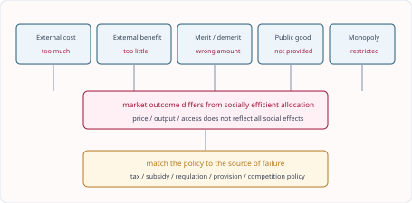
知识点 13/15｜政策必须匹配失灵来源｜Matching policy to the problem
外部成本可用indirect tax、regulation或quota；外部收益和merit goods可用subsidy、information或direct provision；公共品通常需要税收融资和直接提供；垄断可用competition policy、regulation或在特定行业nationalisation。不要写“政府干预可以解决市场失灵”就停下，必须说明政策改变了谁的成本、收益、信息或约束。
problem → policy instrument → changed incentive/cost/information → behaviour → price/output/consumption → social outcome
知识点 14/15｜政策图与市场失灵图的考纲边界｜Required and non-required diagrams
2027–2029考纲明确说明：demand and supply diagrams relating to market failure are not required。因此不必画MSC/MSB社会最优图。但2.10要求会画并解释maximum price、minimum price、indirect tax和subsidy。政策图仍使用普通D/S：税使供给左移，补贴使供给右移；最高限价低于均衡才有约束力，最低限价高于均衡才有约束力。
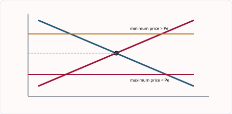
知识点 15/15｜政府干预也需要评价｜Evaluating intervention
税可能减少消费并筹集收入，但需求缺乏弹性时数量下降有限，且负担可能具有regressive effect；补贴可降低价格，却有财政机会成本，企业也未必把全部补贴传给消费者；监管可直接限制行为，却需要监测和执法；直接提供可保障可及性，却可能出现成本控制和供给规模问题。
English evaluation frame. The policy is more likely to work when it targets the source of market failure, consumers and firms respond strongly, enforcement is effective, and the social benefit exceeds the administrative and opportunity costs. A combination of policies may be more effective than one instrument alone.
Worked application. 某地区提供有补贴的HPV疫苗。若未补贴价格较高且消费者不了解长期收益，接种不足可能同时来自affordability与information failure。补贴降低价格并使quantity demanded extend；宣传提高对收益的认识并使demand shift right。若服务点不足，供给仍限制接种量，所以还可能需要direct provision。这个例子展示的是经济机制，不应使用某一时点的真实价格作为长期结论。
2.8–2.10｜市场经济、计划经济与混合经济｜Economic systems and the mixed economy
经济制度不是三个互不相干的定义，而是回答同一组问题的不同安排：生产什么、如何生产、为谁生产。现实国家大多位于连续谱上，市场和政府分别承担不同任务。
知识点 01/08｜市场经济如何作决定｜How a market economy allocates resources
在 market economic system 中，土地和资本主要由私人拥有，消费者选择、企业利润与价格机制共同配置资源。消费者对某商品需求增加，价格和利润信号增强，企业有激励增产或进入，劳动与资本流向该行业。
English. In a market economy, resources are mainly allocated through the price mechanism and decisions made by consumers and private firms. Consumer sovereignty means that spending decisions influence what profit-seeking firms produce.
知识点 02/08｜市场经济的优势｜Advantages of the market system
价格能汇集分散信息并使企业较快响应偏好；竞争可降低成本、提高质量与选择；利润动机鼓励innovation和enterprise；私有产权可增强维护资产与承担风险的激励。完整答案必须解释机制，而不是只列“效率、选择、创新”。
例如需求转向电动自行车 → 价格和预期利润提高 → 企业进入、投资设备并招聘 → 供给扩大 → 资源从较少需求的用途转移。这就是price mechanism而非“政府命令”。
知识点 03/08｜市场经济的局限｜Disadvantages of the market system
市场可能忽略external costs and benefits，少供public goods，过少消费merit goods，过多消费demerit goods；monopoly可限制产量并提高价格；购买力不等于需要，因此收入差距可能使基本服务分配不公平。资源和劳动不能迅速流动时，价格信号也未必立即带来调整。
English chain. The market allocates goods according to willingness and ability to pay. A low-income household may have urgent medical need but little purchasing power. Therefore, a market outcome may be efficient in a narrow trading sense but inequitable.
知识点 04/08｜计划经济如何作决定｜How a planned economy works
在 planned economic system 中，政府拥有或控制主要资源，并通过计划决定产量、生产方式和分配。它可以把资源导向national priorities、basic services和长期项目，也可能因缺少地方信息、竞争和利润激励而出现反应慢、选择少或低效率。
“计划”不是所有政府政策的同义词；混合经济中政府制定疫苗计划，并不意味着整个经济是计划经济。
知识点 05/08｜混合经济为何最常见｜Why mixed economies are common
Mixed economy 同时使用私人企业、市场价格、公共部门与政府干预。一般消费品可由竞争市场提供，公共品、基本服务或外部性较强的领域由政府提供、补贴、征税或监管。混合并不保证自动成功，结果取决于市场竞争、政策设计、执行能力和信息质量。
知识点 06/08｜干预工具的准确作用｜How intervention changes market outcomes
Maximum price低于均衡价会造成shortage；minimum price高于均衡价会造成surplus；indirect tax提高单位成本并使S左移；subsidy降低有效成本并使S右移；regulation设定法律约束；direct provision由政府提供；nationalisation把企业转为公共所有，privatisation则转为私人所有；quota直接限制数量。
每个工具都要回答：它改变价格、成本、供给、需求还是所有权？它针对哪个市场失灵？谁受益、谁承担成本？
知识点 07/08｜市场失败不等于政府一定成功｜Market failure and government effectiveness
政府可能缺少准确成本和需求信息，政策存在administrative cost、time lag、unintended consequences与执法困难。指出这些限制不是否定干预，而是比较两套不完美选择：不干预造成的社会损失，与干预带来的改善和成本哪一个更大。
知识点 08/08｜制度比较的答题框架｜Exam framework for system comparisons
讨论题可依次比较 information、incentives、efficiency、choice、equity、external effects。结论不选“市场永远最好”或“政府永远最好”，而应说明商品性质与条件。例如竞争充分的普通消费品更适合市场；纯公共品、明显外部性或严重信息问题通常需要更多公共介入。
English conclusion. A mixed approach is likely to work best when competitive markets are used where prices transmit reliable information, while government action is targeted at public goods, externalities, market power and access to essential services. The balance depends on government capability and the nature of the product.
2027–2029 考纲补充与整合｜Syllabus update and synthesis
补充知识点 01/02｜市场失灵的完整边界｜The scope of market failure
市场失灵是自由市场未能有效配置资源。原因包括 external costs/benefits、公共物品不被提供、merit goods 消费不足、demerit goods 消费过多，以及 monopoly 限制产量并提高价格。2027–2029 考纲要求理解这些机制，但不要求绘制市场失灵的社会成本—社会收益图；答题重点应放在清楚的文字因果链。
English explanation. Market failure occurs when the free market does not allocate resources efficiently. A public good may be underprovided because non-payers cannot easily be excluded. A monopoly may restrict output and charge a higher price because competitive pressure is weak. The syllabus tests these mechanisms through explanation and application rather than requiring market-failure diagrams.
补充知识点 02/02｜价格管制、税、补贴与数量限制｜Government intervention
maximum price 设在均衡价以下才有约束力，并造成 shortage；minimum price 设在均衡价以上才有约束力，并造成 surplus。间接税提高企业单位成本，使供给左移；补贴降低有效成本，使供给右移。政府还可以 regulation、direct provision、nationalisation、privatisation 和 quota 干预。每项政策都要比较预期收益、财政或执行成本、弹性和 unintended consequences。
English explanation. A binding maximum price is below equilibrium and creates excess demand. A binding minimum price is above equilibrium and creates excess supply. An indirect tax shifts supply to the left, while a subsidy shifts it to the right. The size of the price and quantity changes depends partly on demand and supply elasticities.
3. 核心词汇表｜Core vocabulary（共 62 词）
| English term | 中文准确口径 | Exam-ready meaning |
|---|---|---|
| market | 市场 | Any arrangement that brings buyers and sellers into contact. |
| buyer | 买方 | A person or organisation willing and able to purchase a product. |
| seller | 卖方 | A person or firm offering a product for sale. |
| consumer | 消费者 | A person who uses goods and services to satisfy wants. |
| firm | 企业 | An organisation that produces goods or services. |
| price mechanism | 价格机制 | The way price changes allocate resources through demand and supply. |
| demand | 需求 | The willingness and ability to buy a product at different prices over a period. |
| quantity demanded | 需求量 | The amount consumers plan to buy at a particular price. |
| individual demand | 个人需求 | The quantities one consumer plans to buy at different prices. |
| market demand | 市场需求 | The sum of all individual demand at each price. |
| demand schedule | 需求表 | A table showing price and quantity demanded. |
| ceteris paribus | 其他条件不变 | The assumption that relevant other factors remain unchanged. |
| extension in demand | 需求量扩张 | A rise in quantity demanded caused by a fall in the product’s own price. |
| contraction in demand | 需求量收缩 | A fall in quantity demanded caused by a rise in the product’s own price. |
| increase in demand | 需求增加 | A rightward shift of demand caused by a non-price factor. |
| decrease in demand | 需求减少 | A leftward shift of demand caused by a non-price factor. |
| substitute | 替代品 | A product that can be used instead of another product. |
| complement | 互补品 | A product used together with another product. |
| normal good | 正常品 | A product whose demand rises when income rises. |
| inferior good | 低档品 | A product whose demand falls when income rises. |
| supply | 供给 | The willingness and ability of producers to sell at different prices over a period. |
| quantity supplied | 供给量 | The amount producers plan to sell at a particular price. |
| extension in supply | 供给量扩张 | A rise in quantity supplied caused by a rise in own price. |
| contraction in supply | 供给量收缩 | A fall in quantity supplied caused by a fall in own price. |
| indirect tax | 间接税 | A tax on spending or production that raises firms’ costs. |
| subsidy | 补贴 | A payment to producers that lowers effective production cost. |
| cost of production | 生产成本 | The expenditure incurred in producing output. |
| signalling function | 信号功能 | The use of price changes to communicate relative scarcity. |
| incentive function | 激励功能 | The way price and profit encourage buyers or sellers to change behaviour. |
| rationing function | 配给功能 | The allocation of scarce products through willingness and ability to pay. |
| equilibrium | 均衡 | A market position where quantity demanded equals quantity supplied. |
| shortage | 短缺 | Excess demand: quantity demanded is greater than quantity supplied. |
| surplus | 过剩 | Excess supply: quantity supplied is greater than quantity demanded. |
| upward pressure on price | 价格上涨压力 | Market pressure created when buyers compete for insufficient supply. |
| equilibrium price | 均衡价格 | The price at which quantity demanded equals quantity supplied. |
| equilibrium quantity | 均衡数量 | The quantity traded when the market is in equilibrium. |
| simultaneous shifts | 供需同时移动 | Changes in demand and supply occurring at the same time. |
| relative magnitude | 相对幅度 | The size of one curve shift compared with another. |
| price elasticity of demand (PED) | 需求价格弹性 | Responsiveness of quantity demanded to a change in price. |
| price elasticity of supply (PES) | 供给价格弹性 | Responsiveness of quantity supplied to a change in price. |
| elastic demand | 富有弹性的需求 | Demand with a proportionately larger quantity response than the price change. |
| inelastic demand | 缺乏弹性的需求 | Demand with a proportionately smaller quantity response than the price change. |
| total revenue | 总收益 | Price multiplied by quantity sold. |
| necessity | 必需品 | A product consumers find difficult to do without. |
| spare capacity | 闲置生产能力 | Unused resources that allow output to rise quickly. |
| market failure | 市场失灵 | A situation in which the market does not allocate resources efficiently. |
| externality | 外部性 | A cost or benefit affecting a third party outside a transaction. |
| private cost | 私人成本 | A cost paid by the decision-maker. |
| social cost | 社会成本 | Private cost plus external cost. |
| public good | 公共品 | A non-rival and non-excludable product. |
| merit good | 有益品 | A product that is under-consumed if left to the market. |
| demerit good | 有害品 | A product that is over-consumed if left to the market. |
| information failure | 信息失灵 | A lack of accurate information leading to poor decisions. |
| market economy | 市场经济 | An economy in which prices and private decisions allocate most resources. |
| planned economy | 计划经济 | An economy in which the state directs most resource allocation. |
| mixed economy | 混合经济 | An economy combining market decisions with government intervention. |
| consumer sovereignty | 消费者主权 | The influence consumers have over production through their spending. |
| private sector | 私营部门 | Economic activity owned and controlled by individuals or firms. |
| public sector | 公共部门 | Economic activity owned or controlled by the government. |
| equity | 公平 | A judgement about whether economic outcomes are fair. |
| maximum price | 最高限价 | A legal price ceiling, binding when set below equilibrium. |
| minimum price | 最低限价 | A legal price floor, binding when set above equilibrium. |
4. 单元练习｜Unit practice（共 35 题）
练习 01/35
Question. Which is a market: only a physical shop, only a stock exchange, any arrangement connecting buyers and sellers, or any government office?
练习 02/35
Question. Explain two ways prices influence buyers and sellers in a market.
练习 03/35
Question. At a price of $5, three consumers demand 4, 7 and 9 units. What is market quantity demanded?
练习 04/35
Question. Explain why a demand curve usually slopes downwards.
练习 05/35
Question. At a price of $8, Ana demands 3 units, Ben 5 and Chen 4. Calculate market demand and state what must be held constant when adding the figures. [3]
练习 06/35
Question. The price of petrol rises. What happens to demand for petrol cars, assuming they are complements?
练习 07/35
Question. Analyse how higher household income may affect demand for bus travel.
练习 08/35
Question. Draw diagrams to distinguish a fall in the price of tea from a rise in the price of coffee, a substitute for tea. [6]
练习 09/35
Question. Which change shifts the supply of bread left: lower flour prices, a subsidy, improved ovens, or a tax on each loaf?
练习 10/35
Question. Explain two reasons why the supply of agricultural products may be price inelastic in the short run.
练习 11/35
Question. Draw and explain the effect of a subsidy paid to bicycle producers. [4]
练习 12/35
Question. At the current price, firms plan to sell 1 200 units while consumers plan to buy 850 units. Which outcome is most likely in a free market?
A Demand increases. B Price falls. C Supply shifts left. D Price rises.
练习 13/35
Question. The market price is below equilibrium. Which sequence correctly describes the adjustment?
A surplus -> price rises；B shortage -> price rises；C shortage -> demand shifts right；D surplus -> supply shifts left。
练习 14/35
Question. At $5, Qd is 160 and Qs is 90. At $8, Qd is 110 and Qs is 140. Identify and calculate the disequilibrium at each price.
练习 15/35
Question. Explain how the price mechanism may remove a shortage of bottled water. [4]
练习 16/35
Question. Analyse how a rise in the price of solar panels can perform the signalling, incentive and rationing functions. [6]
练习 17/35
Question. Discuss whether the price mechanism will always allocate essential medicines efficiently. [8]
练习 18/35
Question. Draw a demand and supply diagram showing a price above equilibrium and explain the adjustment.
练习 19/35
Question. Explain two reasons why a shortage may persist even when there is upward pressure on price. [4]
练习 20/35
Question. Demand falls while supply rises. Which outcome is certain?
练习 21/35
Question. Analyse the effect on the market for electric cars of a successful advertising campaign and a fall in battery costs.
练习 22/35
Question. Demand and supply both increase. Which equilibrium result is certain, and which is uncertain? Use a diagram to explain. [5]
练习 23/35
Question. Price rises by 8% and quantity demanded falls by 4%. What is PED and what happens to total revenue?
练习 24/35
Question. Analyse why demand for a life-saving medicine may be price inelastic and how this affects a tax.
练习 25/35
Question. Price falls by 10% and quantity demanded rises by 25%. Calculate PED and explain what happens to total revenue. [4]
练习 26/35
Question. Which is the clearest example of an external cost: a firm pays wages, a smoker harms nearby non-smokers, a consumer buys food, or a bank charges interest?
练习 27/35
Question. Discuss whether a tax is the best way to reduce consumption of sugary drinks.
练习 28/35
Question. Which feature is most characteristic of a market economy: consumer sovereignty, state production targets, equal income, or free public goods?
练习 29/35
Question. Discuss whether healthcare should be allocated entirely by the market.
练习 30/35
Question. Income rises and demand for bus journeys falls. Which description is correct?
A buses are normal goods B buses are inferior goods C quantity demanded has contracted D supply has decreased
练习 31/35
Question. At a price of $12, Qd = 180 and Qs = 240. What market pressure exists?
A shortage of 60 and upward pressure B shortage of 420 and downward pressure C surplus of 60 and downward pressure D surplus of 420 and upward pressure
练习 32/35
Question. The price of a product rises from $20 to $22 and quantity demanded falls from 500 to 450. Using percentage changes based on the original values, calculate PED and classify demand. [4]
练习 33/35
Question. Explain why a maximum price for rented housing may create a shortage. [4]
练习 34/35
Question. Analyse how a subsidy for solar panels may correct market failure. [6]
练习 35/35
Question. Discuss whether an indirect tax will greatly reduce cigarette consumption. [8]
5. 练习答案与解析｜Answers and explanations（共 35 题）
答案 01/35
正确答案｜Correct answer. Any arrangement connecting buyers and sellers. Physical location is not required.
答案 02/35
参考答案｜Model answer. A higher price rations the product by reducing the quantity consumers are willing and able to buy. It also provides sellers with an incentive to increase quantity supplied because potential revenue and profit rise. These responses help coordinate the two sides of the market.
答案 03/35
正确答案｜Correct answer. 20 units. Market demand is the horizontal sum of individual quantities at the same price.
答案 04/35
参考答案｜Model answer. When price falls, the product becomes cheaper relative to substitutes, so consumers may switch towards it. The lower price also increases real purchasing power, enabling consumers to buy more. Hence quantity demanded rises, ceteris paribus.
答案 05/35
正确答案｜Correct answer. Market quantity demanded is 3 + 5 + 4 = 12 units. The price, time period and product unit must be the same for every consumer; prices are not added.
答案 06/35
正确答案｜Correct answer. Demand for petrol cars decreases and its demand curve shifts left. The car price need not have changed.
答案 07/35
参考答案｜Model answer. If bus travel is an inferior service, higher income enables households to switch to cars or taxis. Demand for bus travel falls and its curve shifts left. If buses are high-quality and environmentally preferred, they may instead be normal, so the result depends on consumer behaviour.
答案 08/35
正确答案｜Correct answer. For the fall in tea price, use one tea demand curve and show a downward movement to a larger quantity demanded. For the rise in coffee price, keep tea price unchanged and shift the whole tea demand curve right because consumers switch from coffee to tea.
答案 09/35
正确答案｜Correct answer. A tax on each loaf, because it raises unit cost and reduces profitability at every market price.
答案 10/35
参考答案｜Model answer. Crops require time to grow, so farmers cannot quickly raise current harvests when price rises. Available land and storage may also be limited. Hence the percentage change in quantity supplied is smaller than the percentage change in price.
答案 11/35
正确答案｜Correct answer. Label Price and Quantity, draw D and S1, then shift supply right to S2. A subsidy lowers the effective cost of production and increases the profit obtainable at each market price, so producers are willing and able to supply more.
答案 12/35
正确答案｜Correct answer: B - Price falls. Qs exceeds Qd by 350 units, so unsold stocks accumulate. Sellers have an incentive to reduce price. The price fall causes an extension in quantity demanded and a contraction in quantity supplied; neither curve has to shift.
答案 13/35
正确答案｜Correct answer: B - shortage -> price rises. Below equilibrium, Qd > Qs. Competition among buyers produces upward pressure on price. Higher price contracts quantity demanded and extends quantity supplied until Qd = Qs.
答案 14/35
正确答案｜Correct answer. At $5 there is a shortage of 70 units because 160 - 90 = 70. At $8 there is a surplus of 30 units because 140 - 110 = 30. The $5 price faces upward pressure; the $8 price faces downward pressure.
答案 15/35
参考答案｜Model answer. A shortage means quantity demanded is greater than quantity supplied at the current price [1]. Buyers compete for limited bottles, creating upward pressure on price [1]. The higher price causes a contraction in quantity demanded and an extension in quantity supplied [1]. Adjustment continues until Qd equals Qs at the equilibrium price [1].
答案 16/35
参考答案｜Model answer. The higher price signals that panels have become relatively scarce or that demand has strengthened [1]. It tells firms that potential revenue and profit may be higher [1]. This gives existing producers an incentive to expand and may attract new firms, increasing supply over time [1-2]. The higher price also reduces quantity demanded [1], rationing the limited panels to consumers willing and able to pay [1].
答案 17/35
参考答案｜Model answer. Prices can signal scarcity, encourage production and ration limited stocks. Profit can attract investment and innovation. However, willingness and ability to pay may not reflect medical need; low-income patients can be excluded. Patents, imperfect information and market power may keep prices high, while positive external benefits from treatment may cause under-consumption. A justified conclusion is that markets can coordinate ordinary supply, but subsidy, regulation or direct provision may be needed for essential medicines. The best policy depends on fiscal cost, targeting and government information.
答案 18/35
正确答案｜Correct answer. The diagram must label Price, Quantity, D, S, E, Pe and a higher P1. At P1, mark Qd on the left and Qs on the right; the horizontal gap is surplus. State Qs > Qd -> surplus -> unsold stocks -> downward pressure on price -> extension in demand and contraction in supply -> equilibrium.
答案 19/35
参考答案｜Model answer. A government may impose a maximum price below equilibrium, preventing the legal price from rising; quantity demanded therefore remains above quantity supplied. Alternatively, long contracts or very low short-run PES may delay producers’ response, so supply cannot increase quickly. Queues, rationing or a black market may then appear. Each reason must identify the obstacle and connect it to the continuing gap between Qd and Qs.
答案 20/35
正确答案｜Correct answer. Equilibrium price falls. Both shifts put downward pressure on price, while their effects on quantity oppose each other.
答案 21/35
参考答案｜Model answer. Advertising shifts demand right. Lower battery costs shift supply right. Both changes increase equilibrium quantity. Demand growth raises price while supply growth lowers it, so the final price depends on the relative size of the shifts.
答案 22/35
正确答案｜Correct answer. Shift D and S to the right. Equilibrium quantity certainly rises because both changes raise quantity. Equilibrium price is uncertain because the demand increase raises price while the supply increase lowers it; the final direction depends on the relative size of the shifts.
答案 23/35
正确答案｜Correct answer. PED is 0.5 in absolute value, so demand is inelastic and total revenue is likely to rise.
答案 24/35
参考答案｜Model answer. The medicine is a necessity and may have few substitutes, so patients reduce purchases by a smaller percentage than the price rise. A tax can therefore raise substantial revenue, but consumption and the related external cost may fall only slightly. Low-income patients may bear a large burden.
答案 25/35
正确答案｜Correct answer. Using signed changes, PED = +25% / -10% = -2.5; using the common classification convention, |PED| = 2.5. Demand is price-elastic. Quantity rises proportionately more than price falls, so total revenue rises, other things equal.
答案 26/35
正确答案｜Correct answer. Harm to nearby non-smokers, because the cost falls on third parties outside the transaction.
答案 27/35
参考答案｜Model answer. An indirect tax raises firms’ unit costs, shifts supply left, raises the market price and causes a contraction in quantity demanded. Consumption and related external costs may fall, while the government may receive tax revenue. However, demand may be inelastic, the tax may be regressive and substitutes may also be unhealthy. Information campaigns or regulation may complement the tax. Effectiveness depends on tax size and alternatives.
答案 28/35
正确答案｜Correct answer. Consumer sovereignty, because purchases influence what profit-seeking firms produce.
答案 29/35
参考答案｜Model answer. Market provision may encourage efficiency, choice and innovation. Competition can reduce cost. However, low-income patients may be unable to pay, consumers may lack medical information and healthcare creates external benefits. Public funding or regulation may improve access, although taxation has opportunity cost and government provision may be inefficient.
答案 30/35
正确答案｜Correct answer. B - Demand changes because income, a non-price determinant, has changed. Falling demand as income rises identifies bus journeys in this case as an inferior good.
答案 31/35
正确答案｜Correct answer. C - Qs − Qd = 240 − 180 = 60, so unsold stocks create downward pressure on price.
答案 32/35
正确答案｜Correct answer. %ΔQd = −50/500 × 100 = −10%. %ΔP = 2/20 × 100 = 10%. PED = −10%/10% = −1, so demand is unit elastic. If the convention uses the absolute value, PED = 1.
答案 33/35
参考答案｜Model answer. If the maximum price is set below equilibrium, rent is lower. This causes an extension in quantity demanded but a contraction in quantity supplied along the existing curves. Therefore Qd exceeds Qs and a shortage develops. Some tenants may face waiting lists or non-price rationing.
答案 34/35
参考答案｜Model answer. A subsidy lowers producers’ effective cost, shifting supply right. The market price falls and quantity bought rises. If solar-panel use creates external benefits, social benefit exceeds private benefit. Consumers may base decisions mainly on private benefit, so the product can be under-consumed in a free market. Higher consumption can move output closer to the socially desirable level, although the policy has an opportunity cost for government.
答案 35/35
参考答案｜Model answer. The tax shifts supply left, raising price and reducing quantity. It may internalise external costs and raise revenue. However, cigarette demand may be price inelastic because of addiction and few close substitutes, so quantity falls by a smaller percentage than price rises. Effectiveness may increase over time as users adjust, and it may improve if combined with information, age restrictions and cessation support. A high tax can also encourage smuggling and be regressive.
6. 自学检查清单｜Self-study checklist（共 12 项）
- □ 能写出 demand 与 supply 的完整定义
- □ 能按同一价格横向加总 market demand 与 market supply
- □ 能区分 extension/contraction 与 increase/decrease in demand or supply
- □ 能从非价格因素判断曲线移位方向并解释因果链
- □ 能计算 shortage、surplus 并判断价格压力
- □ 能解释价格机制的 signalling、incentive、rationing functions
- □ 能处理需求与供给同时变化时的确定结论和不确定结论
- □ 能计算、分类并解释 PED 与 PES
- □ 能用 PED 判断价格变化对 total revenue 的影响
- □ 能分析 public、merit、demerit goods、externalities 和 monopoly
- □ 能正确画 maximum/minimum price、indirect tax 和 subsidy
- □ 能评价政府干预的收益、成本、弹性与时间条件
单元 3｜微观经济决策者｜Microeconomic decision makers
官方范围｜Official scope: 3.1–3.7
1. 单元导读｜Unit introduction
本单元把市场模型中的“消费者”和“生产者”拆成具体决策者：家庭决定消费、储蓄与借款；劳动者选择职业；银行连接储蓄与投资；企业选择要素、规模、产量和目标。计算题集中在 productivity、cost、revenue 和 profit，解释题则要求把利率、工资、成本和激励连成链。
与人教版衔接及口径差异｜Connection with Chinese curricula. 与人教版货币、劳动就业和企业经营衔接。Cambridge 更强调 money 的四项功能、中央银行与商业银行的分工、labour demand 的派生性质，以及固定/可变/平均成本之间的精确计算。中文“资本”可能指资金，Cambridge 的 factor of production capital 通常指 produced means of production。
学习路线｜Learning route. 1. 3.1 货币、中央银行与商业银行 — Money and banking 2. 3.2–3.3 家庭、劳动者、工资与工会 — Households, workers, wages and trade unions 3. 3.4–3.6 企业生产、生产率、成本与收益 — Production, productivity, costs and revenue 4. 3.4, 3.7 企业规模、合并与市场结构 — Firm size, integration and market structure 5. 3.5–3.6 从成本表到企业决策 — Using cost data in firm decisions
2. 知识点精讲｜Detailed teaching
3.1｜货币、中央银行与商业银行｜Money and banking
货币的四项功能是 medium of exchange（交换媒介）、measure of value（价值尺度）、store of value（价值储藏） 与 standard of deferred payment（延期支付标准）。商业银行（commercial bank）接受存款、提供支付服务并放贷；中央银行（central bank）通常发行货币、监管银行并影响利率。通胀削弱货币的购买力，因此“钱可以储藏价值”不等于“价值永远不变”。
知识点 01/06｜货币与银行：货币功能与良好货币特征｜Functions and characteristics of money
货币作为 medium of exchange 消除 barter 的 double coincidence of wants；作为 measure of value 让商品可比较；作为 store of value 把购买力转移到未来；作为 standard of deferred payment 支持借贷。良好货币应 durable、portable、divisible、recognisable、scarce and stable in value。高通胀会削弱价值储藏功能。
知识点 02/06｜货币与银行：商业银行与中央银行｜Commercial-bank and central-bank roles
商业银行接受 deposits、提供 loans、支付和外汇服务，并通过利差盈利。中央银行通常发行货币、监管银行、作为政府银行和最后贷款人，并实施 monetary policy。利率上升提高借款成本，可能减少消费和投资；同时提高储蓄回报。结果取决于信心、债务类型和利率变化幅度。
Households 持有货币和存款，commercial banks 接受存款并提供贷款与支付，central bank 管理货币体系与利率。必须区分 money functions、bank functions 与 interest-rate effects。
central bank raises interest rate -> borrowing becomes dearer/saving more attractive -> household consumption and firm investment may fall -> AD falls -> inflationary pressure may ease。
存款 $1 000、年利率3%，一年利息约 $30。若通胀5%，实际购买力仍可能下降约2%，说明 nominal return 与 real return 不同。
Money performs four functions: medium of exchange, measure of value, store of value and standard of deferred payment. Commercial banks accept deposits and make loans. The central bank conducts monetary policy, supervises the banking system and may act as lender of last resort.
中央银行通常不为普通家庭办理日常存款；商业银行也不负责制定全国政策利率。
为什么货币能让经济从“以物易物”中解放出来
Barter要求double coincidence of wants：你拥有对方想要的商品，同时对方拥有你想要的商品。货币作为medium of exchange打破这项限制；作为unit of account使不同商品可比较；作为store of value把购买力带到未来；作为standard of deferred payment使债务和分期合同可以计价。
良好货币通常耐用、便携、可分割、同质、数量相对稳定并被普遍接受。高通胀会削弱store of value和unit of account，因为价格频繁变化、未来购买力难以预测。电子支付改变货币载体，却没有消灭货币功能。
商业银行接受存款、提供支付和贷款服务，并通过利率管理借贷风险；中央银行发行货币、作为政府和商业银行的银行、实施货币政策并维护金融稳定。中央银行通常不为普通家庭开日常储蓄账户。
Worked mechanism. 利率上升使储蓄回报提高、贷款成本上升，家庭可能增加saving、减少消费，企业可能推迟investment。银行仍会考虑借款人的信用与抵押，所以政策利率变化不会机械地让所有贷款同比变化。
English for understanding. Commercial banks connect savers and borrowers and provide payment services. A central bank manages the monetary system and may influence interest rates and credit conditions. The distinction is based on institutional role, not simply on the size of the bank.
知识点 03/06｜货币四项功能及其边界｜Four functions of money
medium of exchange解决以物易物的double coincidence of wants；measure of value便于比较；store of value把购买力带到未来；standard of deferred payment为债务计价。通胀会削弱价值储藏，但不表示货币立即失去交换功能。
English. Money acts as a medium of exchange, measure of value, store of value and standard of deferred payment. Inflation weakens purchasing power over time.
知识点 04/06｜商业银行的角色｜Commercial banks
商业银行接受存款、提供支付、贷款和外汇服务。贷款利率与存款利率差帮助覆盖成本和风险；银行不会把所有存款都原样锁住，但放贷受流动性、资本和监管约束。
English. Commercial banks connect savers and borrowers, operate payment services and assess credit risk. They are not the authority that sets national monetary policy.
知识点 05/06｜中央银行的角色｜Central banks
中央银行通常发行货币、作为政府和商业银行的银行、监管金融体系、充当最后贷款人并实施货币政策。它一般不为普通家庭提供日常储蓄和银行卡。
English. A central bank manages the monetary system, may influence interest rates and acts as banker to government and commercial banks.
知识点 06/06｜利率对储蓄、借款与投资的双向影响｜Interest-rate transmission
利率上升提高借款成本、提高储蓄回报，可能降低家庭消费和企业投资；但结果取决于信心、债务、收入和预期。答题要从利率推到行为，再推到支出。
English. A higher interest rate can discourage borrowing and encourage saving. The effect is not automatic because confidence and expectations also matter.
3.2–3.3｜家庭、劳动者、工资与工会｜Households, workers, wages and trade unions
家庭提供 labour、land、capital，获得收入后在消费与储蓄之间选择。劳动需求是 derived demand（派生需求）：企业需要工人，是因为消费者需要工人生产的商品。工资、技能、资格、工作条件、歧视和工会谈判力量都会影响工资差异。工会可用集体谈判提高工资和安全，也可能在工资高于均衡时增加失业；要写“可能”，不能绝对化。
知识点 01/07｜家庭、劳动者与工会：家庭如何分配收入｜How households allocate income
家庭收入可用于 consumption、saving 和 direct taxes。收入越高，通常能储蓄的绝对额越大，但比例还受利率、信心、年龄、财富和未来预期影响。消费者选择也受 price、income、advertising、quality 和 tastes 影响。借贷让当前消费增加，但未来必须偿还本息。
知识点 02/07｜家庭、劳动者与工会：工资差异与劳动市场｜Wage differences and the labour market
工资由劳动需求与供给共同影响。需要高技能、培训期长、风险大或工作条件差的职业可能工资较高；工会、最低工资、歧视和公共部门政策也会改变工资。Trade union 通过 collective bargaining 改善工资和条件，但工资高于生产率增长可能增加成本、价格或失业风险。
Households 同时是 consumers、savers 与 labour suppliers；workers 关注 wage、conditions 和 job security；trade unions 通过 collective bargaining 改变谈判力量。
product demand rises -> derived demand for labour rises -> labour shortage strengthens worker bargaining power -> wages may rise -> firms’ costs may increase, unless productivity also rises。
月收入 $2 000，direct tax $300，消费 $1 400，则 saving=$300。利率上升不保证储蓄必然增加：income effect 与 substitution effect 可能方向不同。
Labour demand is derived because firms employ workers to produce goods and services. Workers compare wages with hours, conditions, security, promotion and location. Trade unions use collective bargaining and may also provide legal or training services.
Labour supply increase 是更多工人愿意提供劳动；employment increase 是实际受雇人数增加，两者不是同义词。
工资高低还应与 real wage、工作时长、生活成本、福利和就业稳定性一起判断。
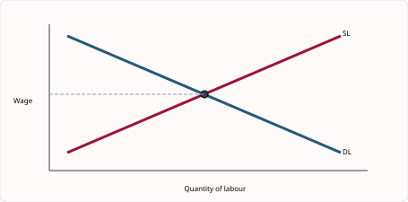
图解：劳动需求与劳动供给的交点决定均衡工资和就业量；有约束力的最低工资在均衡工资以上。
从家庭选择进入劳动市场
家庭把disposable income分配到consumption与saving。收入、财富、利率、年龄、预期和信心都会改变比例。高收入家庭通常有更大的储蓄能力，但不能推出每个高收入者的saving比例必然相同。借贷允许提前消费，却增加未来还款义务。
劳动需求是derived demand：企业需要工人，是因为消费者需要工人生产的产品。产品需求、劳动生产率和其他要素价格变化都会移动劳动需求。劳动供给受工资、工作条件、培训时间、地理位置和职业偏好影响。均衡工资只是分析起点，现实工资还受合同、工会、最低工资和歧视影响。
工资差异可以从技能稀缺、培训成本、责任、风险、工作时间和地区生活成本解释。高工资不一定表示“更辛苦”，而可能是需求强、供给少或生产率高。非工资收益如养老金、保险、弹性时间也属于职业选择的一部分。
Trade union analysis. 工会通过collective bargaining争取工资和条件，可能改善士气、留任和生产率；若工资上升远超生产率，企业成本提高，可能提价、自动化或减少就业。效果取决于劳动需求弹性、企业利润、竞争程度和双方合作方式。
English for understanding. Wage differences arise from both demand and supply. A worker’s productivity can raise firms’ willingness to pay, while scarce qualifications restrict labour supply. A balanced answer considers employment, productivity and non-wage conditions as well as the wage rate.
知识点 03/07｜家庭收入如何分配｜Consumption, saving and borrowing
可支配收入可用于消费或储蓄，借款把未来收入带到现在使用。收入、利率、财富、年龄、信心和未来预期共同影响saving；高收入提高储蓄能力，但不保证每个人储蓄比例更高。
English. Households allocate disposable income between consumption and saving and may borrow to bring spending forward. Several influences operate at the same time.
知识点 04/07｜职业选择不只看工资｜Occupational choice
劳动者比较工资、工作时长、安全、环境、晋升、福利、资格成本和地点。nominal wage高不代表real wage或整体福利一定高，生活成本与非工资条件也重要。
English. Workers consider wages and non-wage factors such as conditions, security, training, promotion and location.
知识点 05/07｜劳动需求是派生需求｜Derived demand for labour
企业雇人是为了生产消费者需要的商品。产品需求或劳动生产率上升可提高劳动需求；工资上涨提高用工成本，影响雇佣量。
English. Demand for labour is derived from demand for the product workers produce and from the productivity and cost of labour.
知识点 06/07｜工资差异与劳动供求｜Wage determination and differences
技能稀缺、培训期长、责任大、风险高、工作条件差或产品需求强，都可能抬高工资。工会、最低工资、歧视和公共部门政策也会改变结果。
English. Wage differences reflect demand and supply as well as institutions. A high wage may compensate for training, scarcity, responsibility or poor conditions.
知识点 07/07｜工会的收益与风险｜Trade unions
collective bargaining可提高工资、安全与沟通，改善士气和生产率；若工资上涨远超生产率，成本与价格可能上升，劳动需求可能下降。效果取决于劳动需求弹性与企业利润。
English. Trade unions can improve pay and conditions, but employment effects depend on productivity, costs and the elasticity of demand for labour.
3.4–3.6｜企业生产、生产率、成本与收益｜Production, productivity, costs and revenue
Fixed costs（租金、厂房）不随短期产量变化；variable costs（原料、按件工资）会变化。Total cost = fixed cost + variable cost。Total revenue = price × quantity；profit = total revenue − total cost。企业不只追求利润，也可能追求 sales revenue、market share、survival 或环境声誉；题目给了目标才应据此分析。
知识点 01/07｜企业的生产、成本与收益：生产率、分工与生产阶段｜Productivity, specialisation and stages of production
生产率是单位投入产出，例如 output per worker，不等于总产量。Division of labour 把生产拆成任务，使工人 specialised，减少转换时间并便于使用机器；但重复工作可能降低 motivation，停工也会影响整条生产线。Primary、secondary、tertiary sectors 分别涉及资源提取、制造建筑和服务。
知识点 02/07｜企业的生产、成本与收益：成本收益必须按公式连接｜Linking costs, revenue and profit with formulas
FC 不随 output 改变，VC 随 output 改变；TC=FC+VC，AC=TC/Q。TR=P×Q，profit=TR-TC。若产量由 100 增至 200，TC 从 1000 增至 1600，AC 从 10 降至 8，说明平均成本下降，即使总成本上升。利润变化必须同时看 price、quantity 和 cost。
Firms 把 factors of production 转化为 output。Productivity 连接投入与产出；cost、revenue 与 profit 连接生产决定与财务结果；短期至少一种要素固定，长期所有要素可变。
division of labour -> repeated practice and less switching time -> output per worker rises -> unit cost may fall -> price may fall or profit rise -> sales/investment may increase。
Q=100，FC=$400，VC=$600，所以 TC=$1 000、AC=$10。若 price=$14，TR=$1 400、profit=$400。Q 增加后总成本可上升而平均成本下降。
Production is the transformation of inputs into output. Division of labour can raise productivity through specialisation, but repetitive work may reduce motivation. Profit is a residual: total revenue minus total cost, not the same as sales revenue.
FC 不随 output 改变，但 per-unit fixed cost 会变；VC 随 output 变，不代表每单位 VC 必须恒定。
图解：TC=FC+VC；平均成本把总成本分摊到每单位产量。必须分清 total 与 average。
企业数据题先建立四条公式
labour productivity = output ÷ number of workers；TC = FC + VC；AC = TC ÷ output；profit = TR - TC，其中TR = price × quantity sold。公式不能只背字母：fixed
cost短期不随产量变化，variable
cost随产量变化，总成本是两者相加，平均成本是每单位承担的总成本。
例：FC=1200，生产200件时VC=2800，售价25元且全部售出。TC=4000，AC=20元，TR=5000元，profit=1000元。若产量增至300件，不能直接假设利润增加；还要知道新增VC、售价和是否能售出。
Specialisation可通过重复操作、技能积累和节省转换时间提高生产率，但过度分工可能使工作单调、降低灵活性并在某环节故障时影响整条生产线。提高生产率会降低unit labour cost的前提，是工资没有上升得更快且质量没有下降。
生产可分primary、secondary和tertiary sector。经济发展过程中就业常从农业转向制造业和服务业，但国家之间路径不同。产业分类题应根据活动创造的产出判断，而不是根据企业名称。
English for understanding. A firm should distinguish total, average and marginal ideas. Higher output can spread fixed cost over more units, but variable cost and coordination problems may eventually rise. Profit depends on both revenue and cost, not on sales alone.
知识点 03/07｜生产部门与附加值｜Sectors and value added
primary提取自然资源，secondary制造和建筑，tertiary提供服务。经济发展常伴随就业与产出结构变化。value added是销售收入减去外购投入价值，不能把同一中间品重复计算。
English. Production can be classified into primary, secondary and tertiary sectors. Value added measures the extra value created at a stage of production.
知识点 04/07｜劳动密集与资本密集｜Labour- and capital-intensive production
企业比较要素相对价格、产量规模、质量、一致性、融资与灵活性。工资上涨可能鼓励自动化，但小批定制仍可能适合labour-intensive methods。
English. The choice of production method depends on relative factor costs, scale, quality, finance and flexibility.
知识点 05/07｜生产率计算与原因｜Productivity
labour productivity = output ÷ number of workers，也可按工时计算。培训、资本、管理、健康与技术会改变生产率。总产量增加不一定代表单位投入产出提高。
English. Productivity is output per unit of input. Distinguish it from total production.
知识点 06/07｜固定、可变、总成本与平均成本｜Cost concepts
FC不随短期产量变化；VC随产量变化；TC=FC+VC；AC=TC÷Q。产量为零时不能计算AC。固定成本不会永远固定，只是在题目所给时期和产能内固定。
English. Fixed cost does not vary with output in the relevant period. Variable cost changes with output; total and average measures must not be confused.
知识点 07/07｜收益、利润与企业目标｜Revenue, profit and objectives
TR=P×Q，profit=TR−TC。企业可能追求利润、增长、市场份额、生存或社会目标。销售收入增加不保证利润增加，因为成本可能增加更多。
English. Revenue is not profit. A firm can have high sales but low profit if costs are also high.
3.4, 3.7｜企业规模、合并与市场结构｜Firm size, integration and market structure
长期扩张时，平均成本下降叫 economies of scale：可以来自批量采购、专业化、管理、技术和融资。规模太大可能产生 communication problems 和 coordination problems，即 diseconomies of scale。市场结构从竞争强到弱大致为 perfect competition、monopolistic competition、oligopoly、monopoly；答题不要只背定义，应把进入壁垒、产品差异、定价能力和消费者选择联系起来。
知识点 01/07｜规模经济与市场结构：企业变大为何可能先降成本｜Why expansion may initially lower average cost
Internal economies of scale 包括 purchasing、technical、financial、managerial、marketing 和 risk-bearing economies。大型企业批量采购可议价，专用机器产量大时才划算，借款风险较低，专业经理提高决策质量，广告成本可分摊到更多产品。它们影响 long-run average cost，不等同于短期固定成本分摊。
知识点 02/07｜规模经济与市场结构：规模不经济与竞争程度｜Diseconomies of scale and market competition
企业过大可能出现 communication failure、协调困难、管理层级增加和员工疏离，使 average cost 上升。竞争市场中 firms 多、进入较易，企业面临降价和创新压力；monopoly 有规模优势和研发资金，也可能提高价格、限制选择或降低效率。市场份额高不自动证明滥用市场力量。
Internal economies 来自单个企业扩大，external economies 来自整个行业或地区扩大。市场结构则看 firms number、entry barriers、product differentiation 与 market power，不能只用企业规模判断。
bulk purchasing -> stronger bargaining power -> lower input price per unit -> average cost falls -> firm can lower price -> market share may rise -> further scale economies may develop。
小企业年广告费 $20 000、销量10 000，广告成本每件$2；大企业广告费$100 000、销量100 000，每件$1。这是 marketing economy，但总广告费更高。
Internal economies arise from the firm’s own expansion; external economies arise when the industry or region expands. Diseconomies often result from communication, coordination and motivation problems in very large organisations.
规模经济是 average cost 下降，不是 total cost 下降；market share 大也不等于只有一家企业。
Natural monopoly 中重复基础设施成本高，受监管单一企业可能比许多小企业有效；其他市场则竞争更可能保护消费者。
企业为什么变大，也为什么可能变得过大
Internal economies of scale来自企业自身扩张：采购量大获得折扣，专用机器提高technical efficiency，专业经理改善management，融资渠道扩大，广告费用可分摊到更多产品。External economies来自整个行业扩张，如专业供应商、熟练劳动力和基础设施集中。
规模扩大不是无限降低AC。管理层级增加、信息传递变慢、员工疏离和跨地区协调困难可能造成diseconomies of scale。判断企业是否“过大”应观察long-run average cost、决策速度和质量，而不是只看员工人数。
Horizontal integration发生在同一生产阶段，可能扩大市场份额和规模经济；vertical integration连接不同阶段，backward取得供应商、forward接近销售渠道；conglomerate integration进入无直接联系行业，可分散风险但增加管理复杂度。
市场结构从竞争到垄断不是只有两个极端。竞争可压低价格、增加选择和创新压力；大型企业可能利用规模经济、研发和稳定供应造福消费者，也可能利用market power提高价格、设置进入壁垒。评价必须比较cost savings与竞争减弱。
English for understanding. Growth can reduce average cost, but market concentration may weaken competitive pressure. The effect on consumers depends on whether efficiency gains are passed on through lower prices, better quality or innovation, and whether entry remains possible.
知识点 03/07｜企业规模的不同衡量方法｜Measuring firm size
可用员工数、产量、销售额、资本投入或市场份额。劳动密集企业员工多，资本密集企业资本大，因此单一指标可能给出不同排名。
English. Firm size can be measured in several ways. The appropriate measure depends on the industry and the purpose of comparison.
知识点 04/07｜内部增长与外部增长｜Internal and external growth
internal growth通过扩大自身销量、产能与网点；external growth通过merger或takeover。后者快但存在整合文化、债务和管理困难。
English. Internal growth expands the existing business; external growth combines firms. Speed must be weighed against integration risk.
知识点 05/07｜规模经济与规模不经济｜Economies and diseconomies of scale
purchasing、technical、financial、managerial和marketing economies可降低AC；规模过大则沟通、协调、士气与控制问题可能提高AC。必须写清平均成本变化机制。
English. Economies of scale lower average cost as the firm grows; diseconomies raise average cost when coordination becomes difficult.
知识点 06/07｜横向、纵向与多元化合并｜Types of integration
horizontal在同一生产阶段；vertical连接上下游，backward接近原料，forward接近消费者；conglomerate进入不相关行业。不同合并改变成本、供应控制、风险与竞争。
English. The type of integration identifies where the partner sits in the production chain and therefore which benefits and risks may arise.
知识点 07/07｜竞争市场与垄断｜Competition and monopoly
竞争可压低价格、提高选择和质量；垄断可能凭市场力量限制产量和提价，但也可能享受规模经济并投资研发。评价取决于进入壁垒、监管和成本节约是否传给消费者。
English. Market structure affects price, output, choice, innovation and efficiency. Avoid assuming that size alone proves consumer harm.
3.5–3.6｜从成本表到企业决策｜Using cost data in firm decisions
把题中的每一列先翻译：TC 是总成本；AC = TC/Q；TR = P×Q；profit = TR−TC。若固定成本不变，产量上升时 AC 可能下降，因为固定成本被更多单位分摊；这不代表每一项成本下降。
例子：厂房租金每月 10 000，生产 1 000 件时每件固定成本 10；生产 2 000 件时每件固定成本 5。若增加产量需要加班和更昂贵的原料，variable cost 仍可能上升。因此“规模扩大一定更便宜”错误。
写工会题时分两条线：工资提高会提升会员收入；企业劳动力成本提高可能减少雇佣、提高价格或投资自动化。结论取决于 labour demand elasticity、生产率和企业利润率。
知识点 01/06｜从成本表到企业决策：读表顺序决定是否出错｜A reliable order for reading a cost table
先识别 output，再找固定成本是否在各产量相同；计算 VC=TC-FC；再计算 AC=TC/output、TR=price×quantity 和 profit=TR-TC。零产量时 TC 通常等于 FC，但 AC 无法用 0 作除数。不要因为 AC 下降就写 TC 下降，也不要把 revenue 当 profit。
知识点 02/06｜从成本表到企业决策：数据变化要解释原因｜Explaining why cost and revenue figures change
AC 下降可能来自固定成本分摊、specialisation 或更高 machinery utilisation；随后上升可能来自 overtime、拥堵和协调问题。利润最大并不一定发生在 output 最大处，因为额外产量也带来额外成本。IGCSE 通常不要求边际分析，但必须比较收益与成本。
FC 不随 output 变化，VC 随 output 变化，TC=FC+VC；AC=TC/Q，MC=ΔTC/ΔQ；TR=P×Q，profit=TR-TC。每个公式回答不同问题。
Q=0时FC=240、TC=240。Q=40时TC=600，所以VC=360、AC=15。price=18时TR=720、profit=120。若把 revenue 720 当 profit，会忽略全部成本。
零产量时 AC 不可计算，因为不能除以零；profit 可能为负，称 loss。
成本表的可靠读法：先总量，再单位量，最后决策
第一步检查Q、FC、VC和TC是否满足TC=FC+VC；第二步计算AFC=FC/Q、AVC=VC/Q和AC=TC/Q；第三步结合price或TR计算profit。不要看到TC上升就说效率下降，因为产量增加时总成本通常上升，真正需要比较的是每单位成本或成本增幅与产量增幅。
例：产量从100增至200，TC从3000增至4800。TC增加60%，产量增加100%，AC由30降至24，企业出现平均成本下降。若售价为28元，原利润为2800-3000=-200，新利润为5600-4800=800。同一组数据可同时考成本、收益和利润。
Break-even发生在TR=TC，不等于企业现金充足或长期一定生存。短期亏损企业仍可能继续生产，只要收入能够覆盖variable cost并贡献部分fixed cost；IGCSE通常重在基本利润计算，但理解这一区别能防止把“亏损”直接写成“立即关闭”。
Data explanation. If output rises faster than total cost, average cost falls. This may indicate economies of scale or better use of capacity. If total cost later rises faster than output, average cost rises and diseconomies may be developing.
计算题最后必须写单位和经济含义，例如“AC=$24 per unit, so each unit carries $6 less cost than before”，而不是只给一个数字。
知识点 03/06｜单元综合案例｜从选择职业到解释工资差异
一名中学生考虑未来成为护士、软件工程师或厨师。职业选择不仅比较当前工资，还要比较培训时间、工作条件、就业稳定性、晋升机会和个人兴趣。护士可能需要较长培训，却获得职业满足和较稳定需求；软件工程师的货币工资较高，但技术更新快；厨师的收入可能随经验、地点和声誉变化。非工资因素会使劳动供给不只由工资决定。
某职业工资较高可能因为需求强、合格劳动供给少，或需要补偿不舒适与风险。若培训扩大、合格人数增加，劳动供给右移，其他条件不变时工资可能下降、就业人数增加。若自动化替代部分工作，劳动需求左移；若新技术提高熟练工人的生产率并增加企业收入，相关劳动需求反而可能右移。因此“科技一定降低就业”不是合格结论，必须说明替代效应和创造效应分别作用于哪些岗位。
家庭收入分为劳动收入、财产收入、企业利润与转移支付。高收入家庭通常有更高储蓄能力，但储蓄比例也受利率、预期和年龄影响。年轻家庭可能借款购房，中年家庭为教育与退休储蓄，退休家庭可能动用过去储蓄。这说明同一利率变化对不同家庭的影响并不相同。
Worked response. Explain two reasons why a surgeon may earn more than a shop assistant. First, surgeons require lengthy and costly training, so the supply of qualified surgeons is relatively limited. Second, demand for their specialised skills may be high because their work has a high value to patients and hospitals. A stronger answer explains the market mechanism rather than saying only that the surgeon “works harder”.
知识点 04/06｜逐列重建成本表｜Reconstructing a cost table
先用TC=FC+VC补总成本，再用AC=TC÷Q。若题目给两档产量，可用change in TC ÷ change in Q求区间内每新增一单位的额外成本。所有答案标货币和per
unit。
English. Use identities in a fixed order and keep units visible. Average values divide totals by output; changes compare two output levels.
知识点 05/06｜固定成本分摊与平均成本下降｜Spreading fixed cost
产量增加时同一FC分摊到更多单位，AFC下降；但VC可能最终快速上升，所以AC不一定持续下降。不要把“固定成本不变”误解为“每单位固定成本不变”。
English. Total fixed cost can remain constant while fixed cost per unit falls as output increases.
知识点 06/06｜成本数据如何支持而不替代决策｜Using data for decisions
企业会比较价格、需求、TR、TC、利润、产能和长期风险。某产量AC最低不一定利润最高；若卖不出对应数量，低单位成本也无意义。
English. Cost data inform a decision but must be combined with demand and revenue. Minimum average cost is not automatically maximum profit.
2027–2029 考纲补充与整合｜Syllabus update and synthesis
补充知识点 01/02｜职业选择、工资差异与劳动力流动｜Occupational choice and labour mobility
职业选择受工资、工作条件、晋升、培训要求、风险、地点和个人偏好影响。工资差异可能来自技能与资格、劳动需求、劳动供给、生产率、工会力量、歧视或补偿性工资差异。劳动力不流动包括 occupational immobility 和 geographical immobility，会使失业与职位空缺同时存在。
English explanation. Workers do not choose occupations on wage alone. Non-wage factors include hours, safety, status, promotion and location. Wage differences can reflect differences in productivity, qualifications, demand and supply, bargaining power and working conditions. Labour immobility slows the movement of workers from declining to expanding industries.
补充知识点 02/02｜企业合并与生产方法｜Integration and factor intensity
horizontal merger 发生在同一生产阶段，可能扩大市场份额和规模经济；vertical merger 连接上下游，可稳定原料或销售渠道；conglomerate merger 进入无直接关系的市场以分散风险。企业选择 labour-intensive 或 capital-intensive 生产，不仅比较工资与机器价格，还要比较生产率、产量规模、融资条件、质量和灵活性。
English explanation. A firm chooses a production method by comparing the productivity and cost of factor combinations. Capital-intensive production may lower unit cost at high output, but requires finance and may be inflexible. Labour-intensive production can adapt more easily and may suit customised services. Integration can reduce costs, but larger size may create communication and control problems.
3. 核心词汇表｜Core vocabulary（共 39 词）
| English term | 中文准确口径 | Exam-ready meaning |
|---|---|---|
| money | 货币 | Anything generally accepted as payment for goods and services. |
| medium of exchange | 交换媒介 | A function of money that removes the need for barter. |
| store of value | 价值储藏 | A function allowing purchasing power to be held for later use. |
| commercial bank | 商业银行 | A bank accepting deposits and providing loans and payment services. |
| central bank | 中央银行 | The institution responsible for the monetary system and banking stability. |
| interest rate | 利率 | The price of borrowing and the reward for saving. |
| liquidity | 流动性 | How easily an asset can be converted into spendable money. |
| disposable income | 可支配收入 | Income available after direct taxes and benefits. |
| saving | 储蓄 | Income not spent on current consumption. |
| wage rate | 工资率 | Payment for labour per unit of time or output. |
| earnings | 劳动收入 | Total income received from employment. |
| trade union | 工会 | An organisation representing workers’ interests. |
| collective bargaining | 集体谈判 | Negotiation between a union and an employer. |
| derived demand | 派生需求 | Demand for a factor arising from demand for the final product. |
| production | 生产 | The process of creating goods and services. |
| division of labour | 劳动分工 | Breaking production into tasks with workers specialising in particular tasks. |
| specialisation | 专业化 | Concentrating resources on a narrower range of activities. |
| fixed cost | 固定成本 | A cost that does not change with output in the short run. |
| variable cost | 可变成本 | A cost that changes as output changes. |
| average cost | 平均成本 | Total cost divided by output. |
| profit | 利润 | Total revenue minus total cost. |
| labour productivity | 劳动生产率 | Output per worker or per hour worked. |
| economies of scale | 规模经济 | Falls in long-run average cost as a firm expands. |
| diseconomies of scale | 规模不经济 | Rises in long-run average cost as a firm becomes too large. |
| internal economy | 内部规模经济 | A cost advantage arising from growth of the firm itself. |
| external economy | 外部规模经济 | A cost advantage arising from growth of the industry. |
| competition | 竞争 | Rivalry between firms for customers and sales. |
| monopoly | 垄断 | A market dominated by one supplier. |
| market share | 市场份额 | A firm’s sales as a percentage of total market sales. |
| total cost (TC) | 总成本 | Fixed cost plus variable cost. |
| average total cost (AC) | 平均总成本 | Total cost divided by output. |
| total revenue (TR) | 总收益 | Price multiplied by quantity sold. |
| loss | 亏损 | A situation in which total cost exceeds total revenue. |
| profit margin | 利润率 | Profit expressed relative to sales revenue. |
| break-even | 盈亏平衡 | The position where total revenue equals total cost. |
| occupational mobility | 职业流动性 | The ability of labour to move between occupations. |
| geographical mobility | 地域流动性 | The ability of labour to move between locations. |
| horizontal integration | 横向合并 | A merger between firms at the same stage of production. |
| vertical integration | 纵向合并 | A merger between firms at different stages of production. |
4. 单元练习｜Unit practice（共 17 题）
练习 01/17
Question. Which function of money is weakened most directly by rapid inflation?
练习 02/17
Question. Analyse how a rise in interest rates may affect households and firms.
练习 03/17
Question. Which change is most likely to increase demand for chefs: lower demand for restaurant meals, higher chef productivity, more people entering chef training, or lower food prices with no sales change?
练习 04/17
Question. Discuss whether trade-union action always benefits workers.
练习 05/17
Question. A firm’s output doubles while total cost rises by 50%. What happens to average cost?
练习 06/17
Question. Analyse two ways improved labour productivity may affect a firm.
练习 07/17
Question. Which is an internal economy of scale: lower national interest rates, a skilled regional labour pool, bulk-buying discounts, or a new public road?
练习 08/17
Question. Discuss whether consumers benefit from a monopoly.
练习 09/17
Question. At output 50, total cost is $900 and variable cost is $650. What is fixed cost?
练习 10/17
Question. Analyse why a firm may continue producing even when total profit falls temporarily.
练习 11/17
Question. Output rises from 40 to 50 units and total cost rises from $600 to $720. Calculate marginal cost per extra unit and explain what it measures. [3]
练习 12/17
Question. Which is a function of a central bank rather than a commercial bank?
A accepting household deposits B issuing notes and coins C providing debit cards D making business loans
练习 13/17
Question. A firm has fixed cost $1 200. At output 200 units, variable cost is $2 800 and total revenue is $5 000. Calculate total cost, average cost and profit. [5]
练习 14/17
Question. Ten workers produce 2 400 units in a 40-hour week. Calculate output per worker and output per worker-hour. [4]
练习 15/17
Question. Explain two reasons why a worker with more qualifications may earn a higher wage. [6]
练习 16/17
Question. Analyse why a firm may change from labour-intensive to capital-intensive production. [6]
练习 17/17
Question. Discuss whether consumers always benefit when two large firms merge. [8]
5. 练习答案与解析｜Answers and explanations（共 17 题）
答案 01/17
正确答案｜Correct answer. Store of value, because money loses purchasing power quickly over time.
答案 02/17
参考答案｜Model answer. Loan and mortgage repayments may rise, reducing disposable income and consumption. Saving becomes more attractive. Firms face a higher cost of borrowing, so fewer investment projects are profitable. Demand and employment may fall, although savers receive more interest.
答案 03/17
正确答案｜Correct answer. Higher chef productivity, because each chef contributes more output and revenue to the firm.
答案 04/17
参考答案｜Model answer. Collective bargaining may raise wages, improve safety and reduce exploitation. Higher pay can motivate workers and reduce turnover. However, large wage increases can raise costs, encourage automation or reduce employment. Non-members and consumers may lose. The result depends on productivity and labour-demand elasticity.
答案 05/17
正确答案｜Correct answer. Average cost falls, because cost rises less proportionately than output.
答案 06/17
参考答案｜Model answer. More output per worker can reduce unit labour cost, allowing a lower price and greater competitiveness. Alternatively, the firm may keep price unchanged and earn more profit, financing investment. The effect depends on wages, product quality and demand.
答案 07/17
正确答案｜Correct answer. Bulk-buying discounts, because they result directly from the firm’s larger purchasing scale.
答案 08/17
参考答案｜Model answer. A monopoly may exploit scale economies, fund research and provide a standardised network. It may pass lower costs to consumers. Conversely, weak competition may permit higher prices, less choice and lower quality. Outcomes depend on regulation, contestability and the source of monopoly power.
答案 09/17
正确答案｜Correct answer. $250. Fixed cost equals total cost minus variable cost.
答案 10/17
参考答案｜Model answer. It may expect demand to recover, wish to retain skilled workers or avoid high closure and restart costs. If revenue covers variable cost and contributes to fixed cost, short-run production can reduce losses. In the long run, persistent revenue below total cost is unsustainable.
答案 11/17
正确答案｜Correct answer. The extra cost is $720 - $600 = $120 for 10 additional units, so marginal cost per extra unit is $12. It measures the addition to total cost caused by producing one more unit over this interval.
答案 12/17
正确答案｜Correct answer. B - A central bank normally issues the currency and acts as banker to government and commercial banks. The other services are commonly provided by commercial banks.
答案 13/17
正确答案｜Correct answer. TC = FC + VC = 1 200 + 2 800 = $4 000. AC = TC/Q = 4 000/200 = $20 per unit. Profit = TR − TC = 5 000 − 4 000 = $1 000.
答案 14/17
正确答案｜Correct answer. Output per worker = 2 400/10 = 240 units per week. Total worker-hours = 10 × 40 = 400. Output per worker-hour = 2 400/400 = 6 units.
答案 15/17
参考答案｜Model answer. Qualifications may raise productivity, increasing the value of the worker’s output and therefore firms’ demand for that labour. Qualifications may also take time and money to acquire, restricting labour supply; with stronger demand and more limited supply, equilibrium wage may be higher.
答案 16/17
参考答案｜Model answer. If wages rise relative to machinery costs, capital becomes comparatively cheaper. Automation may also produce more consistent output and raise productivity, reducing unit cost at a large scale. The firm will compare finance costs, required skills, maintenance, product quality and flexibility before changing methods.
答案 17/17
参考答案｜Model answer. A merger may create purchasing, technical and managerial economies of scale, lowering average cost and possibly price. It may finance innovation and improve reliability. However, reduced competition can give the merged firm market power, allowing higher prices, less choice and weaker service. The result depends on the cost savings, ease of entry, strength of remaining rivals and regulation, and on whether savings are passed to consumers.
6. 自学检查清单｜Self-study checklist（共 12 项）
- □ 能解释货币四项功能并判断良好货币的特征
- □ 能区分 central bank 与 commercial bank
- □ 能分析收入、利率、信心、年龄和文化对消费储蓄借款的影响
- □ 能解释职业选择与工资差异
- □ 能画劳动市场并分析 minimum wage
- □ 能解释 labour mobility 与 division of labour 的收益和成本
- □ 能区分三大产业、公私部门及企业规模
- □ 能解释 horizontal、vertical、conglomerate integration
- □ 能计算 productivity、TC、AC、FC、VC、TR、AR 与 profit
- □ 能区分 economies 与 diseconomies of scale
- □ 能比较 labour-intensive 与 capital-intensive methods
- □ 能评价 competitive market 与 monopoly 对价格、产量和消费者的影响
单元 4｜政府与宏观经济｜Government and the macroeconomy
官方范围｜Official scope: 4.1–4.7
1. 单元导读｜Unit introduction
本单元研究政府希望整个经济实现什么，以及如何使用政策工具。核心不是背“政策使经济变好”，而是写出工具变化怎样影响消费、投资、成本、生产率、总需求和实际结果。目标之间可能冲突，因此评价必须说明经济所处阶段、时间滞后、政策幅度和利益相关者。
与人教版衔接及口径差异｜Connection with Chinese curricula. 与人教版宏观调控衔接。Cambridge 把 fiscal policy、monetary policy、supply-side policy 分开考查，并要求计算预算余额、失业率或 CPI 变化。稳定物价不是“所有价格不变”，而是避免过高且不稳定的通胀或持续通缩。
学习路线｜Learning route. 1. 4.1 宏观目标、指标与目标冲突 — Macroeconomic aims and conflicts 2. 4.5–4.7 经济增长、失业、通胀与通缩 — Growth, unemployment, inflation and deflation 3. 4.2–4.4 财政、货币与供给侧政策 — Fiscal, monetary and supply-side policies 4. 4.2–4.7 政策传导、适用条件与评价 — Policy transmission and evaluation
2. 知识点精讲｜Detailed teaching
4.1｜宏观目标、指标与目标冲突｜Macroeconomic aims and conflicts
常见目标是经济增长、低失业、低且稳定通胀、国际收支平衡与更公平的收入分配。它们会冲突：刺激总需求或许降低周期性失业，但也可能提高通胀和进口，恶化经常账户。
知识点 01/05｜宏观目标与指标：五类目标与测量口径｜Five macroeconomic objectives and their indicators
主要目标包括 economic growth、low unemployment、price stability、redistribution of income 和 balance of payments stability。Growth 用 real GDP 的变化衡量；通胀用 consumer price index 的持续增长；失业率=unemployed/labour force×100；收入分配可结合 Lorenz curve；国际交易重点看 current account。
知识点 02/05｜宏观目标与指标：目标之间既有协同也有冲突｜Synergies and conflicts between policy objectives
衰退时提高 AD 可能同时增加 output 和 employment；接近满负荷时继续刺激 AD 更可能推高 inflation。快速增长可能增加 imports、恶化 current account，也可能通过生产率和出口改善它。重新分配收入可能提高低收入者消费，却可能影响工作、储蓄和投资激励。
Government 常关注 growth、employment、price stability、current-account stability 与 income distribution。每个目标需要不同指标，指标改善也可能与另一目标冲突。
AD rises when spare capacity exists -> firms increase output -> derived demand for labour rises -> unemployment falls -> household income and tax revenue rise；接近满产时则 inflation pressure 更大。
失业人数0.6m、labour force 12m，unemployment rate=5%。若失业人数不变但更多人进入 labour force，失业率可能变化，因此分母也要检查。
Macroeconomic objectives are related but not identical. Economic growth is measured using real output; price stability refers to low and predictable inflation; full employment does not mean zero unemployment because frictional unemployment normally exists.
比较国家时须使用相同年份、定义与单位，并注意 informal sector、underemployment 和地区差异。
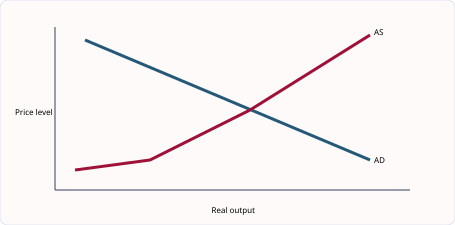
图解：总需求增加通常同时提高价格水平和实际产出，但两者幅度取决于闲置资源与供给反应。
宏观目标要先定义，再讨论相互关系
政府常关注economic growth、low unemployment、price stability、balance of payments stability、income redistribution与environmental sustainability。目标需要对应指标：增长看real GDP变化，失业看unemployment rate，通胀看general price level的持续变化，国际收支看current-account等数据。单个商品涨价不是通胀，名义GDP上升也不自动等于实际增长。
目标之间既可能协同也可能冲突。衰退期提高AD可同时增加产出和就业；当经济接近满产时，进一步刺激可能主要推高价格。经济增长增加税收和就业，却可能加剧污染；再分配可改善公平，但设计不当可能影响劳动和投资激励。
Worked conflict. 政府大幅增加基础设施支出。短期内G增加使AD右移，就业与产出可能上升；若建筑业已满负荷，工资和材料价格上涨，通胀压力增大。长期若交通改善生产率，AS也可右移，缓解冲突。
English for understanding. Macroeconomic objectives are not independent. The same policy can improve one target, worsen another or have different short-run and long-run effects. Evaluation requires the state of the economy, the size of the policy and the responsiveness of supply.
答题时避免“政府希望经济越增长越好”。增长质量、分配和环境成本会改变福利结果。结论应说明在何种经济状态下哪个目标优先。
知识点 03/05｜主要宏观目标与可观察指标｜Aims and indicators
目标包括economic growth、low unemployment、low and stable inflation、balance of payments stability、redistribution与environmental sustainability。真实GDP增长率、失业率、CPI通胀率和current-account balance分别提供证据，但每个指标都有局限。
English. Macroeconomic aims must be linked to measurable indicators, but no single indicator captures overall welfare.
知识点 04/05｜目标为什么会冲突｜Why objectives may conflict
扩张需求可提高产出与就业，却在接近产能时引发demand-pull inflation和进口增加；快速增长可能加剧污染；再分配税可能影响激励。冲突不是必然，闲置产能和绿色技术可缓和。
English. A policy can improve one objective while worsening another. The size of the conflict depends on spare capacity, time and policy design.
知识点 05/05｜目标也可能互补｜Complementary objectives
提高教育、基础设施和生产率可同时促进长期增长、就业和价格稳定；较低通胀也可提高信心和竞争力。评价时既要找冲突，也要识别共同改善的可能。
English. Supply-side improvements can make growth less inflationary and may support several objectives at once.
4.5–4.7｜经济增长、失业、通胀与通缩｜Growth, unemployment, inflation and deflation
Economic growth 是实际 GDP 增加；它可提高收入与税收，但若只依赖资源开采，可能污染并加剧不平等。失业分为 frictional、structural、cyclical 和 seasonal。通胀是总体价格水平持续上升，不是单一商品涨价；demand-pull inflation 来自总需求增长过快，cost-push inflation 来自工资、能源或进口成本上升。
知识点 01/07｜经济增长、失业与通胀：三个概念必须分开｜Distinguishing growth, unemployment and inflation
Economic growth 是 real GDP 增加；recession 通常是 real output 下降。Inflation 是总体价格水平持续上升，不是一个商品涨价。Unemployment 指愿意且能够工作、正在寻找工作却没有工作的人。Frictional、structural、cyclical、seasonal unemployment 的原因和政策不同。
知识点 02/07｜经济增长、失业与通胀：原因与影响的双向链条｜Causes and consequences in both directions
Demand-pull inflation 来自 AD 增长过快；cost-push inflation 来自工资、能源或进口成本上升。通胀降低固定收入者购买力并增加不确定性，但温和通胀也可能伴随增长。失业降低 household income、tax revenue 和 output，却减少工资与价格压力。增长可来自资源增加、productivity、investment 和技术进步。
Growth 用 real GDP 变化衡量；inflation 用 general price level 的持续变化衡量；unemployment 只包括 willing and able to work 且正在找工作的人。Nominal、real、rate 与 level 必须区分。
oil price rises -> firms’ production costs rise -> SRAS falls -> price level rises and real output falls -> cost-push inflation and cyclical unemployment may coexist。
CPI 从120升到126，inflation=(126-120)/120×100=5%。下一年 CPI 从126升到129.15，通胀2.5%；价格仍上涨，只是上涨速度减慢。
Disinflation is a fall in the inflation rate while the price level continues to rise. Deflation is a sustained fall in the general price level. Structural unemployment reflects a mismatch of skills or location, while cyclical unemployment results from deficient aggregate demand.
Real GDP per head may fall even when real GDP rises if population grows faster。
适度需求增长可能同时降失业并带来温和通胀；长期结果取决于 productive capacity、expectations 和政策可信度。
把增长、失业和物价放进同一经济循环
Economic growth可指actual real GDP增加，也可指productive capacity扩大。前者可能来自利用闲置资源，后者通常表现为PPC或AS外移。Real GDP per head还要除以人口，若产出增长3%而人口增长4%，平均物质生活水平可能下降。
失业至少区分frictional、structural、cyclical和seasonal。需求不足导致cyclical unemployment，可由扩张性需求政策缓解；技能和地区错配导致structural unemployment，更需要培训、迁移和产业调整。用同一政策处理所有失业类型往往效果有限。
Demand-pull inflation来自AD增长超过经济供给能力；cost-push inflation来自工资、能源、进口或税收推动成本上升。通胀降低固定收入和现金储蓄购买力，增加不确定性，也可能在本国通胀高于贸易伙伴时削弱出口竞争力。温和可预期通胀与恶性通胀的影响不能等同。
Deflation是总体价格水平持续下降，不只是通胀率下降。若家庭预期价格继续下跌，可能推迟消费，企业收入和就业下降，实际债务负担上升；但由生产率提高带来的较低价格可能伴随产出增长。
English for understanding. Identify the cause before selecting a policy. Demand-side measures are more suitable for cyclical weakness, while supply-side measures address productivity and structural unemployment. Inflation caused by rising costs may not respond well to policies that only reduce demand.
知识点 03/07｜实际增长与名义增长｜Real and nominal growth
economic growth是real GDP增加；名义GDP上升可能只因价格上涨。生活水平判断还要比较人口，所以常看real GDP per head。短期实际增长与长期productive capacity增长也要区分。
English. Real GDP removes the effect of price changes. Real GDP per head adjusts further for population.
知识点 04/07｜失业定义、计算与类型｜Unemployment
unemployment rate = unemployed ÷ labour force ×100。cyclical来自总需求不足，structural来自技能或地区不匹配，frictional来自求职转换，seasonal来自季节。不同原因需要不同政策。
English. The unemployment rate uses the labour force as the denominator. Policy should match the type of unemployment.
知识点 05/07｜通胀、通缩与通胀率下降｜Inflation and deflation
inflation是一般价格水平持续上升；deflation是一般价格水平下降；通胀率从8%降至3%表示价格仍上涨但速度变慢，即disinflation。单一商品涨价不等于通胀。
English. A lower positive inflation rate means prices are still rising more slowly. Deflation requires a fall in the general price level.
知识点 06/07｜需求拉动与成本推动通胀｜Demand-pull and cost-push inflation
总需求增长超过供给能力形成demand-pull；工资、能源、进口原料或税推高生产成本形成cost-push。两者都涨价，但政策传导和对产出的影响不同。
English. Identify the source before recommending policy. Reducing demand may not solve a supply-side cost shock without significant output loss.
知识点 07/07｜经济后果要区分受益者和受损者｜Consequences for different groups
意外通胀可能使固定收入者、储蓄者和贷方受损，却减轻借款人的实际债务；失业减少收入、技能和税收并增加财政支出；通缩可能推迟消费、增加实际债务并压低企业收入。
English. Macroeconomic changes redistribute costs and benefits. A strong answer identifies the group and the transmission mechanism.
4.2–4.4｜财政、货币与供给侧政策｜Fiscal, monetary and supply-side policies
Fiscal policy：政府增加支出或减税以提高 AD；代价可能是预算赤字与债务。Monetary policy：降低利率使借贷更便宜，往往提高消费和投资，但在信心低迷时效果弱。Supply-side policy：培训、教育、基础设施与竞争政策提高生产能力，见效较慢但更能改善长期增长。
知识点 01/06｜政策工具：三类政策作用点不同｜Where fiscal, monetary and supply-side policies act
Fiscal policy 改变 government spending 与 taxation；monetary policy 通过 interest rates、money/credit conditions 和 exchange rate 影响需求；supply-side policy 改善 education、infrastructure、competition、labour mobility 和 incentives，提高 productive capacity。Expansionary 政策通常提高 AD，contractionary 政策降低 AD。
知识点 02/06｜政策工具：政策传导不是一句“促进经济”｜Developing the policy transmission mechanism
降息→borrowing cheaper/saving less attractive→C 与 I 可能增加→AD rises→firms raise output→employment rises。所得税下降→disposable income rises→consumption rises。培训→skills/productivity rise→unit cost falls→AS/productive potential rises。每条链都要说明可能条件：confidence、time lag、size、elasticity、debt 和 import leakage。
Fiscal policy 改变 government spending 与 taxation；monetary policy 改变 interest rates 或 credit；supply-side policy 改变资源数量、质量、流动性和生产率。工具必须匹配问题原因。
income tax cut -> disposable income rises -> consumption may rise -> AD rises -> firms increase output and employment -> inflation/imports may also rise。training -> skills/productivity rise -> productive capacity increases, but after a time lag。
Fiscal policy changes government spending and taxation. Monetary policy changes interest rates or credit conditions. Supply-side policy aims to improve the quantity, quality or mobility of productive resources. Match the policy to the cause of the problem.
Supply-side policy 不一定表示政府减少供给；它旨在提高 economy’s productive potential。
评价至少加入 size、timing、confidence、spare capacity、opportunity cost 与 distribution。
Structural unemployment 来自技能或地区错配，retraining 比单纯降息更直接。降息主要提高 AD；若空缺岗位要求的技能不同，需求扩大也未必让失业者立即就业。
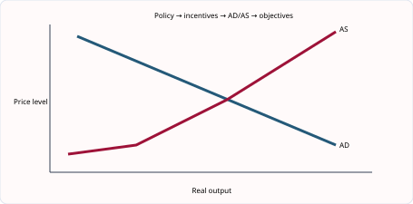
图解：政策工具先改变 household/firm incentives，再影响 C、I、cost 或 productivity，最后才影响宏观目标。
三类政策从不同位置进入经济
Fiscal policy改变government spending与taxation，直接影响G、disposable income和企业激励；monetary policy通过interest rates、credit和money conditions影响C、I及汇率；supply-side policy提高productivity、mobility、competition或productive capacity。写政策名称不等于完成分析，必须走完整传导链。
扩张性财政链：G上升或税下降 -> household/firm spending增加 -> AD右移 -> 企业销售增加 -> output与derived demand for labour增加。限制包括进口漏出、挤出、预算赤字、时滞和接近满产时的通胀。
降息链：borrowing cheaper且saving return下降 -> consumption与investment可能增加 -> AD右移。效果取决于信心、银行是否放贷、家庭债务和企业预期；经济悲观时，即使利率低，借款和投资也可能反应很小。
供给政策如教育培训、基础设施、竞争政策和税制改革通常需要更长时间，却可同时提高增长并降低成本压力。它们也有财政机会成本，且培训必须与岗位需要匹配。
English for understanding. A policy answer should name the instrument, explain how it changes incentives or costs, connect this to aggregate demand or supply, and then identify the target variable. The final step is conditional: the outcome depends on spare capacity, confidence, time lags and policy scale.
知识点 03/06｜财政政策的工具与方向｜Fiscal policy
政府改变taxation与government spending。扩张性财政通过减税或增支提高AD；紧缩性财政相反。预算赤字是支出大于收入，不等于经常账户赤字。
English. Fiscal policy changes government spending and taxation. Its demand effect depends on the size, timing and response of households and firms.
知识点 04/06｜货币政策的工具与传导｜Monetary policy
降息降低借款成本并减少储蓄回报，可能提高消费和投资；加息可抑制需求和通胀。结果受信心、负债、银行放贷和时滞影响。
English. Interest-rate changes affect borrowing, saving, consumption and investment before they affect aggregate demand and inflation.
知识点 05/06｜供给侧政策提高什么｜Supply-side policy
教育培训、基础设施、竞争政策、税制激励和劳动市场措施旨在提高生产率、流动性、就业或productive capacity，使AS/PPC长期外移。它通常见效较慢并有财政机会成本。
English. Supply-side policy aims to improve productive capacity and efficiency rather than simply raising current demand.
知识点 06/06｜同一目标可能需要政策组合｜Policy mix
结构性失业需要培训和流动性措施，周期性失业更适合需求管理；成本推动通胀可能需要提高生产率或缓解供给瓶颈。先诊断原因，再选工具。
English. A policy is effective only if it targets the cause of the problem. A policy mix may address both short-run demand and long-run supply.
4.2–4.7｜政策传导、适用条件与评价｜Policy transmission and evaluation
不要只写“降低利率促进经济”。拆开写：interest rate falls → monthly loan repayments fall / borrowing becomes cheaper → households consume more and firms invest more → AD rises → output and employment may rise. 然后评价：如果家庭担心失业，可能仍储蓄；若经济接近满产，效果更可能是通胀而不是实际产出。
财政政策同理：government spending on roads → firms receive orders → workers’ incomes rise → further consumption occurs. 但政府融资可能增加债务；道路项目也有长期 supply-side benefit。把短期 AD 效果与长期 LRAS 效果分开，答案会更成熟。
知识点 01/07｜政策传导链的写法：每个箭头都要有 because｜Explaining every link in a causal chain
高分 analysis 不是列出变量，而是解释关系。例如 “interest rate↓→investment↑→AD↑→GDP↑” 仍不够完整；应写借款成本下降提高预期净收益，使更多投资项目有利可图，capital spending 增加，AD 上升，企业面对更高销售而增加产量与就业。
知识点 02/07｜政策传导链的写法：在链条末端加入限制条件｜Adding a relevant condition to the final outcome
若企业缺乏 confidence，即使利率下降也可能不借款；若经济接近 full employment，AD 增长更多转化为 inflation；若进口倾向高，本国 output 增幅较小。Supply-side policy 需要教育和基建完成后才见效，time lag 往往更长。
政策工具先改变 price、income、cost 或 incentive，随后 households/firms 改变 spending、saving、investment 或 production，最终才影响 AD、output、employment 与 inflation。
interest rate falls -> monthly loan cost falls -> households may borrow for durable goods -> consumption rises -> AD rises -> firms receive more orders -> output and employment rise, if spare capacity exists。
不要用没有题干依据的精确数字，但可以用方向检查。若税后收入由$1 000升到$1 100而家庭只消费新增$60，剩余$40 saving 是 leakage，AD 增量小于收入增量。
A causal chain should not jump from policy to the final objective. Explain the transmission through incentives and behaviour. Separate a direct effect from secondary effects and avoid repeating the same link in different words.
评价政策不是列优缺点，而是判断“什么时候有效”
政策题先诊断问题来源。例如失业由总需求不足造成，扩张性财政或货币政策有直接作用；若失业来自技能错配，仅提高AD可能先推高工资和价格。通胀若由过度需求造成，紧缩需求政策较适合；若由能源成本冲击造成，过度紧缩会进一步压低产出。
评价可按五个条件展开：经济是否有spare capacity；居民和企业confidence如何；相关需求与供给弹性多大；政策发生作用需要多久；政府的财政、信息和执行能力如何。只写“可能有时间滞后”而不连接题目，不会形成有力评价。
Policy comparison. 为减少青年失业，工资补贴能迅速降低企业雇佣成本，但可能补贴本来就会招聘的人；职业培训见效较慢，却能改善长期匹配；公共工程可创造岗位，但项目地点和技能可能与失业者不一致。最佳组合取决于失业类型和预算。
English conclusion model. “The policy is most likely to succeed when unemployment is cyclical and the economy has spare capacity. If the main problem is structural, targeted training and mobility measures may be more effective. A combination may therefore reduce short-run unemployment without neglecting long-run productivity.”
结论不需要假装精确预测，而要把条件与判断连接。避免使用“利大于弊”却不说明哪项利益、谁承担成本、短期还是长期。
知识点 03/07｜单元综合案例｜企业扩大规模一定会降低成本吗
一家面包店每天生产200个面包，租金、烤炉折旧等固定成本为1000元，面粉和小时工工资等可变成本为每个面包5元。总成本为2000元，平均成本为10元。若产量增至400个且固定成本不变、单位可变成本仍为5元，总成本为3000元，平均成本降至7.5元。这首先来自固定成本分摊，并不意味着所有成本都会永远下降。
企业继续扩大后，可能获得采购、技术、管理、金融和营销方面的规模经济；但层级过多、沟通变慢、员工疏离也会造成规模不经济。考试题若问“企业合并是否一定提高利润”，需要同时考察平均成本、市场份额、整合成本、竞争程度和需求。利润取决于总收益与总成本，成本下降若伴随销量下降或整合失败，利润仍可能减少。
企业目标也不只有利润最大化。新企业可能先追求生存，管理者可能追求增长，社会企业可能兼顾社会目标。但长期亏损会限制任何目标，因为企业需要现金支付工资、原料和债务。生产率提高能降低单位成本，却可能在短期减少某些岗位；长期结果取决于价格是否下降、需求是否扩张以及企业是否开发新产品。
Calculation and interpretation. If total revenue rises from $80 000 to $95 000 while total cost rises from $70 000 to $90 000, profit falls from $10 000 to $5 000. Revenue growth alone is therefore not evidence of improved performance. Always calculate the relevant measure and then explain why it changed.
知识点 04/07｜把政策写成连续因果链｜Building a transmission chain
例如利率下降→借款更便宜→消费和投资增加→AD增加→企业产量与劳动需求增加→周期性失业下降。每一个箭头都要有经济动词，不能从“降息”直接跳到“失业下降”。
English. A policy answer earns analysis marks by developing linked stages rather than listing objectives.
知识点 05/07｜短期与长期结果可能不同｜Time horizons
扩张政策短期可利用闲置产能，长期接近充分就业时更多转化为通胀；培训短期有成本和时滞，长期才提高生产率。评价时明确时间。
English. The short-run effect can differ from the long-run effect because capacity, expectations and behaviour adjust over time.
知识点 06/07｜政策效果取决于经济环境｜Conditions for effectiveness
spare capacity、信心、弹性、开放程度、债务、执行能力与政策规模都会改变结果。高进口倾向会使需求刺激部分泄漏到国外。
English. Effectiveness depends on the state of the economy and behavioural responses, not only on the direction of the policy.
知识点 07/07｜有条件结论｜A reasoned conclusion
结论要回答题目而非重复双方观点：指出最重要的目标、问题根源、短期或长期以及政策限制。例如“若失业主要由需求不足且有大量闲置产能，扩张财政较有效；若技能错配占主导，培训更合适”。
English. A conclusion should state the condition under which one policy is more suitable than another.
2027–2029 考纲补充与整合｜Syllabus update and synthesis
补充知识点 01/02｜环境可持续发展作为宏观目标｜Environmental sustainability
2027–2029 考纲明确把 environmental sustainability 列为政府宏观目标。增长若依赖化石燃料、森林砍伐和不可再生资源，短期 real GDP 可能上升，但污染、健康成本和资源耗竭会损害长期生活水平。政府可用 environmental tax、regulation、subsidy for clean technology 和公共交通投资改变激励。
English explanation. Environmental sustainability means meeting present economic needs without seriously reducing the ability of future generations to meet theirs. Faster growth may raise employment and tax revenue, but can also increase emissions and resource depletion. The conflict is not inevitable if cleaner technology and regulation reduce the environmental cost per unit of output.
补充知识点 02/02｜预算、税收与政策选择｜The government budget and taxation
budget balance = government revenue − government expenditure。结果为正是 surplus，为负是 deficit。税收用于筹资、再分配收入、抑制有害消费、纠正外部成本和管理总需求。评价某种税不能只写“政府收入增加”，还要考虑税基变化、逃税、税负归宿、收入分配和 opportunity cost。
English explanation. A budget deficit occurs when government expenditure exceeds revenue; a surplus occurs when revenue exceeds expenditure. Direct taxes are imposed on income or wealth, while indirect taxes are imposed on spending. Progressive taxation can reduce inequality, but very high marginal rates may weaken incentives or encourage avoidance.
3. 核心词汇表｜Core vocabulary（共 27 词）
| English term | 中文准确口径 | Exam-ready meaning |
|---|---|---|
| economic growth | 经济增长 | An increase in real output over time. |
| full employment | 充分就业 | A situation in which unemployment is low apart from unavoidable unemployment. |
| price stability | 物价稳定 | A low and stable rate of inflation. |
| redistribution of income | 收入再分配 | Government action to change the distribution of income. |
| balance of payments stability | 国际收支稳定 | A sustainable relationship between international receipts and payments. |
| real GDP | 实际国内生产总值 | Output valued after removing the effect of price changes. |
| conflict of aims | 目标冲突 | A situation where pursuing one objective makes another harder to achieve. |
| recession | 经济衰退 | A period of falling real output. |
| unemployment rate | 失业率 | Unemployed people as a percentage of the labour force. |
| structural unemployment | 结构性失业 | Unemployment caused by a mismatch of skills or location. |
| cyclical unemployment | 周期性失业 | Unemployment caused by a fall in aggregate demand. |
| inflation | 通货膨胀 | A sustained rise in the general price level. |
| consumer prices index (CPI) | 消费者价格指数 | An index measuring changes in the price of a representative basket. |
| fiscal policy | 财政政策 | Changes in government spending and taxation to influence the economy. |
| monetary policy | 货币政策 | Changes in interest rates or money conditions to influence the economy. |
| supply-side policy | 供给侧政策 | Measures designed to increase productive capacity and efficiency. |
| budget deficit | 财政赤字 | Government spending exceeding government revenue. |
| aggregate demand | 总需求 | Total planned spending on domestic output. |
| incentive | 激励 | A factor encouraging a change in economic behaviour. |
| time lag | 时滞 | The delay before a policy has its full effect. |
| transmission mechanism | 传导机制 | The stages through which a policy affects economic outcomes. |
| aggregate supply | 总供给 | The total output firms are willing and able to produce. |
| spare capacity | 闲置产能 | Unused resources that permit output to expand. |
| business confidence | 企业信心 | Firms’ expectations about future economic conditions. |
| multiplier effect | 乘数效应 | An initial spending change causing a larger final change in national income. |
| environmental sustainability | 环境可持续发展 | Meeting present needs without seriously limiting future generations. |
| budget surplus | 预算盈余 | The amount by which government revenue exceeds expenditure. |
4. 单元练习｜Unit practice（共 14 题）
练习 01/14
Question. Which policy outcome shows a conflict: lower unemployment accompanied by higher demand-pull inflation, or higher productivity with lower costs?
练习 02/14
Question. Discuss whether low unemployment is always beneficial to an economy.
练习 03/14
Question. The inflation rate falls from 8% to 3%. Which statement is correct?
练习 04/14
Question. Analyse two costs of high inflation for firms.
练习 05/14
Question. Which policy is most directly designed to reduce structural unemployment: lower interest rates, retraining, higher government consumption, or a currency depreciation?
练习 06/14
Question. Discuss whether higher government spending will increase economic growth.
练习 07/14
Question. Which is the missing link: lower interest rate -> ____ -> higher investment -> higher AD?
练习 08/14
Question. Analyse how a depreciation may reduce unemployment.
练习 09/14
Question. Which policy is most directly supply-side?
A raising government pensions B reducing the policy interest rate C subsidising worker training D increasing an indirect tax to reduce demand
练习 10/14
Question. Government revenue is $84bn and expenditure is $97bn. Calculate the budget balance and identify its type. [3]
练习 11/14
Question. A country has a labour force of 25 million and 1.5 million unemployed people. Calculate its unemployment rate. [3]
练习 12/14
Question. Explain how a higher interest rate may reduce demand-pull inflation. [6]
练习 13/14
Question. Analyse one conflict between economic growth and environmental sustainability. [6]
练习 14/14
Question. Discuss whether expansionary fiscal policy is the best way to reduce unemployment. [8]
5. 练习答案与解析｜Answers and explanations（共 14 题）
答案 01/14
正确答案｜Correct answer. Lower unemployment with higher demand-pull inflation, because improvement in one objective is associated with deterioration in another.
答案 02/14
参考答案｜Model answer. It raises output, income, tax revenue and may reduce benefit spending and poverty. However, severe labour shortages can increase wage costs and inflation, reduce competitiveness and make recruitment difficult. Some job movement is useful. The ideal rate depends on productivity and labour mobility.
答案 03/14
正确答案｜Correct answer. The general price level is still rising, but more slowly. This is disinflation, not necessarily deflation.
答案 04/14
参考答案｜Model answer. Uncertain future costs and prices make investment planning harder. If domestic inflation exceeds competitors’, exports become less price competitive and imports more attractive. Firms may also face menu costs and pressure for higher wages.
答案 05/14
正确答案｜Correct answer. Retraining, because it reduces the mismatch between workers’ skills and available jobs.
答案 06/14
参考答案｜Model answer. Spending raises AD and may increase output when spare capacity exists. Infrastructure and education can also increase long-run productivity. However, spending may cause inflation, imports, taxation or debt, and inefficient projects have opportunity cost. The result depends on spending type and economic conditions.
答案 07/14
正确答案｜Correct answer. Borrowing becomes cheaper or the expected net return on investment rises.
答案 08/14
参考答案｜Model answer. Exports become cheaper in foreign currency and imports become dearer domestically. If demand responds, export sales rise and spending switches to domestic products. Firms increase output, raising derived demand for labour and reducing cyclical unemployment.
答案 09/14
正确答案｜Correct answer. C - Training raises skills, occupational mobility and labour productivity, increasing productive capacity. The other policies mainly affect aggregate demand or prices.
答案 10/14
正确答案｜Correct answer. Budget balance = revenue − expenditure = 84 − 97 = −$13bn. It is a budget deficit of $13bn because expenditure exceeds revenue.
答案 11/14
正确答案｜Correct answer. Unemployment rate = unemployed/labour force × 100 = 1.5/25 × 100 = 6%.
答案 12/14
参考答案｜Model answer. Higher interest makes borrowing more expensive and saving more attractive. Household consumption may fall, while firms may reduce investment because finance costs rise. Aggregate demand grows more slowly or falls, reducing excess demand and upward pressure on the general price level. The effect depends on debt levels and confidence.
答案 13/14
参考答案｜Model answer. Faster growth may increase production, transport and energy use. If energy relies on fossil fuels, emissions and pollution rise, creating health costs and resource depletion. This can damage future productive capacity and welfare. The conflict is smaller if growth comes from cleaner technology, renewable energy and more efficient resource use.
答案 14/14
参考答案｜Model answer. Higher government spending or lower tax can raise aggregate demand, increasing firms’ sales and derived demand for labour, so it is useful for cyclical unemployment when spare capacity exists. It may be less effective for structural unemployment caused by skill or location mismatch. It can create a budget deficit, inflation or imports, and has time lags. A policy mix including training, mobility support and targeted infrastructure is more suitable when unemployment is structural.
6. 自学检查清单｜Self-study checklist（共 10 项）
- □ 能定义并区分六项宏观目标
- □ 能解释增长、就业、物价、国际收支、分配和环境目标之间的冲突
- □ 能计算 budget deficit/surplus 并分类 direct/indirect、progressive/proportional/regressive tax
- □ 能解释 fiscal policy 的完整传导
- □ 能解释利率、money supply 和 exchange rate 的货币政策渠道
- □ 能比较教育培训、减税、私有化、基础设施等供给侧措施
- □ 能区分实际增长与衰退及其原因后果
- □ 能计算失业率并识别 frictional/structural/cyclical/seasonal unemployment
- □ 能解释 CPI、demand-pull/cost-push inflation 和 deflation
- □ 能按时滞、幅度、信心、资源闲置和副作用评价政策
单元 5｜经济发展｜Economic development
官方范围｜Official scope: 5.1–5.4
1. 单元导读｜Unit introduction
本单元回答“经济变大是否等于生活变好”。学生需要把 real GDP per head、HDI、贫困、人口结构、产业结构、教育健康和收入分配结合起来。任何单一指标都有盲点；高分比较必须同时说明数据所反映的维度、未反映的维度和国情差异。
与人教版衔接及口径差异｜Connection with Chinese curricula. 与人教版共同富裕、人口和可持续发展衔接。Cambridge 常用 real GDP per head 与 HDI 比较国家，同时要求区分 absolute poverty 与 relative poverty，并从 productivity、saving、investment、education、health、natural resources 和 sectoral structure 解释发展差异。
学习路线｜Learning route. 1. 5.1 经济增长与经济发展 — Economic growth and development 2. 5.1 生活水平：real GDP per head 与 HDI — Living standards and development indicators 3. 5.2–5.4 贫困、人口与发展差异 — Poverty, population and development differences 4. 5.2–5.4 发展政策及其评价 — Development policies 5. 5.1–5.4 跨国比较指标的使用与局限 — Comparing development indicators
2. 知识点精讲｜Detailed teaching
5.1｜经济增长与经济发展｜Economic growth and development
增长是实际 GDP 上升；development（发展）是生活质量和选择能力的更广泛改善。一个国家可因石油出口 GDP 增长，却仍有贫困、教育不足、污染和地区差距。因此答案中把“人均实际 GDP”与健康、教育、住房、自由、安全、环境一起写。
知识点 01/05｜增长不等于发展：两个概念的范围不同｜Different meanings of growth and development
Growth 是 real GDP 增加，development 是生活质量的广泛改善，包括 income、health、education、housing、environment 和 freedom。增长可增加税基和就业，为发展提供资源；但若收益集中在少数人、污染严重或人口增长更快，平均居民未必受益。
知识点 02/05｜增长不等于发展：因果关系不是自动发生｜Why growth does not automatically create development
资源出口提高 GDP 后，政府若把收入用于 clean water、schools 和 clinics，human capital 与 life expectancy 可提高；若收入外流、腐败或只进入资本密集行业，poverty 可能仍高。Real GDP per head 比总 GDP 更接近平均物质生活，但仍忽略 distribution 和非货币因素。
Growth 观察 real output；development 观察 income、health、education、opportunity、distribution 和 environment。GDP 是生产指标，不是完整 welfare 指标。
export-led growth -> employment/income/tax revenue rise -> government may fund health and education -> human capital and life expectancy improve -> development；若利润外流或污染严重，链条可能中断。
Real GDP 增6%、人口增4%，real GDP per head 大致增约2%，不是6%。若最高10%获得大部分新增收入，median household 的生活水平可能几乎不变。
Growth expands the amount an economy produces. Development concerns what the output enables people to achieve. Per-head measures, distribution and non-material indicators are therefore essential when assessing welfare.
结论最好区分 short run material gain 与 long-run sustainable development。
Growth与development不是同义词
Economic growth关注real output增加；economic development关注生活质量的多维改善，包括收入、健康、教育、就业机会、基础设施、环境与选择。增长可以提供税收和投资能力，是发展的重要条件，但收入可能集中、污染可能加重、公共服务可能没有同步改善。
发展具有循环关系。教育和医疗提高human capital与productivity，促进收入增长；更高收入和税收又可支持公共服务。相反，贫困会限制营养、学习和储蓄，形成poverty cycle。打破循环通常需要多项政策而非单一收入增长。
Worked example. 某资源出口国real GDP per head很高，但农村儿童完成学业比例低、饮用水不足且收入高度集中。不能仅凭平均收入称其发展水平高；需要结合HDI分项、贫困、分配和环境数据。
English for understanding. Growth is an increase in real output; development is a broader improvement in people’s economic and social well-being. Growth may support development by creating income and tax revenue, but the result depends on distribution, public services and environmental costs.
结构题问“how growth may promote development”时，要写出中间环节：产出与收入提高 -> 税基扩大/家庭购买力提高 -> 教育医疗和营养改善 -> productivity与life expectancy提高。
知识点 03/05｜增长与发展的概念边界｜Growth versus development
economic growth是real GDP增加；economic development是生活质量、健康、教育、机会和经济结构更广泛改善。增长可支持发展，但若收益集中或环境损害严重，发展未必同步。
English. Growth is a rise in real output. Development is a broader improvement in economic and social wellbeing.
知识点 04/05｜增长的原因｜Causes of growth
资源数量或质量、投资、技术、生产率、教育、基础设施与制度稳定可提高产出。短期需求上升利用闲置资源，长期增长需要productive capacity扩大。
English. Actual growth can come from using idle resources; sustained potential growth requires higher quantity or quality of resources and technology.
知识点 05/05｜增长的收益与成本｜Benefits and costs of growth
增长可提高就业、收入、利润和税收，支持公共服务；也可能带来通胀、污染、资源枯竭、工作压力与不平等。评价要区分增长来源和收益分配。
English. The effect on welfare depends on how growth is produced and distributed, not only on the GDP figure.
5.1｜生活水平：real GDP per head 与 HDI｜Living standards and development indicators
GDP per head 适合粗略比较物质产出，但忽略收入分配、非市场生产、工作时长与环境。HDI 结合寿命、教育和收入，覆盖更广；仍是平均数，会掩盖性别、城乡与地区不平等。比较国家时还要注意汇率、购买力和人口结构。
知识点 01/06｜衡量生活水平：单一指标与综合指标｜Single indicators and composite measures
Real GDP per head=real GDP/population，适合比较平均物质产出，但跨国比较还要考虑 exchange rate、purchasing power、informal economy 和 data accuracy。HDI 结合 income、education 和 life expectancy，范围更广，却仍是平均值，不能完整反映 inequality、security 或 environment。
知识点 02/06｜衡量生活水平：读数据要比较、联系并找例外｜Comparing data, identifying relationships and exceptions
一国人均收入高而 life expectancy 低，可能说明不平等、医疗不足或污染；另一国收入较低但教育健康良好，可能源于公共服务效率。Correlation 不等于 causation，还要考虑其他变量。比较时应使用同一年、相同单位和 real/per-head 数据。
Real GDP per head 调整 inflation 与 population；HDI 加入 education 与 life expectancy；单项社会指标可补充 sanitation、nutrition 或 mortality。不同指标回答不同问题。
A国 real GDP 500bn、人口50m，人均10 000；B国300bn、人口20m，人均15 000。A总产出更高，但B平均物质产出更高。还不能据此判断分配和健康。
Real GDP per head is useful for average material output, while HDI includes income, education and life expectancy. Purchasing-power adjustments improve international comparison. No single index captures inequality, freedom, safety or environmental quality.
HDI 较高不表示每个分项都较高，也不代表国内人人处于相同水平。
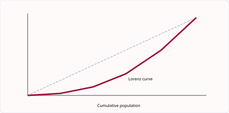
图解：Lorenz curve 越远离完全平等线，收入分配通常越不均；它描述 distribution，不直接测量绝对贫困。
指标不是答案，而是观察现实的不同窗口
Real GDP per head用实际GDP除以人口，消除物价变化并转为人均口径。它便于比较物质产出，却是平均数，不能显示income distribution，也忽略无偿照护、闲暇、污染、产品质量和地下经济。不同国家价格水平不同，还需注意PPP调整。
HDI把life expectancy、education和income per head组合起来，比单一收入更全面；但全国平均仍会隐藏地区、性别和群体差异，指标权重也不能代表每个人的价值判断。两个国家HDI相近，内部问题可能完全不同。
Calculation. Real GDP从4800亿元增至5040亿元，人口从4000万增至4200万。原人均为12000元，新人均仍为12000元。总产出增长5%，但人口也增长5%，所以平均物质产出未提高。
Data response method. 先描述数据方向和差距，再选择能解释问题的指标，最后指出一项局限。例如“Country A has higher GDP per head, but its lower life expectancy suggests that higher average income has not fully translated into health outcomes.”
比较国家时还要检查年份、货币、实际或名义、总量或人均以及数据可靠性。没有统一口径，精确数字也可能产生错误结论。
知识点 03/06｜real GDP per head 的计算与含义｜Real GDP per head
real GDP per head = real GDP ÷ population，它估计平均实际产出或收入。GDP增速若等于人口增速，人均值不变。必须统一bn、m等单位。
English. Real GDP per head adjusts output for inflation and population, making it more useful than nominal total GDP for average material living standards.
知识点 04/06｜人均GDP的局限｜Limits of GDP per head
平均数隐藏收入分配，也遗漏家务、非正规经济、闲暇、健康、环境与产品质量。跨国比较还受汇率、物价和统计质量影响。
English. A high average does not show who receives income or capture all non-material aspects of life.
知识点 05/06｜HDI的三个维度｜The HDI
HDI结合健康（life expectancy）、教育和收入维度，范围比GDP更广；但仍是平均数，不能直接显示不平等、环境可持续性或政治自由。
English. HDI broadens comparison beyond income but remains a composite average with omitted dimensions.
知识点 06/06｜指标应交叉验证｜Using several indicators
判断生活水平应同时看real GDP per head、HDI分项、贫困、分配、就业和环境。指标方向冲突时，要解释不同维度而不是强行得出单一排名。
English. Use a basket of indicators and explain why they may give different pictures of development.
5.2–5.4｜贫困、人口与发展差异｜Poverty, population and development differences
绝对贫困指基本需要难以满足；相对贫困强调与社会正常生活水平的差距。人口快速增长可扩大劳动年龄人口和市场，也可能压低人均资本、增加学校医疗负担与失业。低储蓄、基础设施不足、政治不稳定、初级产品依赖和债务均可形成发展陷阱。
知识点 01/07｜贫困、人口与发展障碍：贫困的两种口径｜Absolute and relative measures of poverty
Absolute poverty 指收入不足以满足 food、shelter 等基本需要；relative poverty 指收入显著低于社会通常水平。低收入→营养教育不足→productivity 低→工资低，形成 poverty cycle。税收转移、教育医疗和就业增长可能打破循环，但政策有财政成本和激励问题。
知识点 02/07｜贫困、人口与发展障碍：人口数量之外还有结构｜Population size, structure and dependency
Birth rate、death rate、life expectancy 和 net migration 改变人口规模；age structure 与 dependency ratio 影响 labour supply、tax revenue 和公共支出。年轻人口可能带来未来劳动力优势，也需要当前教育投入；老龄化增加养老金和医疗压力，但也可能扩大养老服务需求。
Absolute poverty 看 basic needs，relative poverty 看相对社会标准；population analysis 还要区分 birth rate、death rate、migration、age structure 与 dependency。
low income -> poor nutrition/education -> low productivity -> low wages -> limited saving/investment -> poverty persists。政策可在 education、health、credit 或 job creation 处打断循环。
工作年龄人口600万，儿童250万，老人150万，dependency ratio=(250+150)/600×100=66.7%。这不表示每100名工人实际供养66.7人，因为工作年龄者并非全就业。
Absolute poverty concerns inability to meet basic needs. Relative poverty compares a household with prevailing living standards. A high dependency ratio may increase pressure on workers and public services, but dependants can also contribute unpaid work and future labour.
低 birth rate 不必然使人口立即下降；migration、death rate 和 population momentum 也会影响。
人口结果取决于年龄结构、人力资本、女性就业、工作机会和基础设施，而非只看人数。
贫困、人口与发展差异如何互相影响
Absolute poverty表示无法满足食物、住房等基本需要；relative poverty根据社会通常生活标准判断。收入增长可能减少绝对贫困，却在高收入者增长更快时扩大相对差距。Lorenz curve越远离完全平等线，分配通常越不均，但它不告诉我们平均收入高低。
人口变化要结合birth rate、death rate、migration、age structure和dependency ratio。年轻人口可形成未来劳动力和市场，也会短期增加教育、住房和就业压力；人口老龄化提高养老金与医疗支出，却可通过延迟退休、自动化和移民缓解劳动供给问题。
国家发展差异常来自human capital、natural resources、capital、technology、institutions、trade access、conflict、debt与geography的共同作用。单一资源丰富既可能提供出口收入，也可能造成价格波动和产业依赖。
Causal chain. 低收入 -> 营养和教育不足 -> productivity低 -> 工资与储蓄低 -> investment不足 -> 低收入持续。政策切入口可在学校、基础医疗、基础设施、信贷或就业，但每项都有成本和实施条件。
English for understanding. Population growth is not automatically a burden or a benefit. Its effect depends on the age structure, job creation, education, capital per worker and the ability of infrastructure to expand.
知识点 03/07｜绝对贫困与相对贫困｜Absolute and relative poverty
absolute poverty是无法满足基本生活需要；relative poverty是收入明显低于社会通常水平。经济增长可降低绝对贫困，却可能在分配不均时扩大相对差距。
English. Absolute poverty concerns basic needs; relative poverty compares a household with the normal standard in its society.
知识点 04/07｜贫困的原因与循环｜Causes and the poverty cycle
低教育和健康→低生产率→低工资→低储蓄和投资→下一代教育不足，可形成循环。失业、疾病、歧视、地区隔离、资产不足与冲突也会造成贫困。
English. Poverty can be self-reinforcing when low income restricts investment in health, education and productive assets.
知识点 05/07｜人口自然变化与净迁移｜Population change
人口变化=出生−死亡+净迁移。出生率、死亡率受收入、教育、医疗、妇女就业与文化影响；迁移受工资、就业、安全和政策的push/pull factors影响。
English. Population changes through natural increase and net migration. Each component has distinct economic causes and effects.
知识点 06/07｜年龄结构与抚养比｜Age structure and dependency
高青年抚养比增加教育需求但形成未来劳动力；人口老龄化提高养老金和医疗支出，可能缩小劳动供给。dependency ratio = dependent-age population ÷ working-age population ×100。
English. The dependency ratio is an age-structure indicator, not the exact ratio of non-workers to workers.
知识点 07/07｜国家发展差异的多重原因｜Why countries differ
资源、气候、历史、教育健康、资本、技术、基础设施、人口结构、贸易条件、制度、冲突与债务相互作用。不能用单一地理或文化因素解释所有差异。
English. Development differences result from interacting economic, demographic, geographical and institutional factors.
5.2–5.4｜发展政策及其评价｜Development policies
教育、医疗、基础设施、微型信贷、贸易开放、FDI 与援助都可能有用。例：修港口可降低出口运输成本，但若政府腐败、维护资金不足，项目效益会很低。评价要问：谁受益？资金来自哪里？短期与长期效果？环境是否可持续？
知识点 01/06｜发展策略的评价：政策通过生产率改变发展｜How policy raises productivity and development
Education raises skills and occupational mobility；healthcare reduces illness and improves effective labour supply；infrastructure lowers transport and communication costs；microfinance may support enterprise；property rights and stable institutions encourage investment。短期补贴能缓解贫困，但长期发展通常要求生产能力与机会增加。
知识点 02/06｜发展策略的评价：评价预算、时滞与受益者｜Budgets, time lags and the distribution of benefits
同一笔预算投向高速公路会产生 opportunity cost，例如少建学校。大型项目可能偏向城市，农村贫困者未必直接受益。教育见效慢但外部收益广；现金转移见效快却需持续财政来源。Foreign aid 和 FDI 可带来资金技术，也可能有条件、利润外流和 dependency。
Education、healthcare、infrastructure、redistribution、aid 与 FDI 针对的 binding constraint 不同。比较政策要看 mechanism、time lag、cost、coverage 和 sustainability。
rural road investment -> transport time/cost falls -> farmers access larger markets -> spoilage falls and revenue rises -> saving/investment and rural living standards may improve。
预算$50m可建学校或发一年补贴。补贴立刻增加可支配收入；学校需多年才转化为技能，但收益可能持续更久。两者的 opportunity cost 与时间结构不同。
A development strategy should address the binding constraint. Education is weak if graduates have no jobs; roads are less useful without maintenance; foreign investment brings fewer benefits when local firms and workers cannot form linkages.
投入资金不等于 outcome 改善；必须说明服务质量、覆盖人群与执行能力。
“最佳”要求比较替代政策，并结合该国最主要障碍作判断。
发展政策要同时看供给能力和受益者
Education与health spending提高human capital；infrastructure降低运输、通信和能源成本；microfinance帮助缺乏抵押的小企业；foreign direct investment带来资本、就业与技术；trade policy扩大市场；redistribution改善基本消费能力。不同政策针对的约束不同。
项目评估不能只看“GDP会增加”。要问谁获得工作、技能是否转移、本地企业是否进入供应链、利润是否外流、政府是否承担债务、环境成本如何，以及项目能否长期维护。
Worked comparison. 政府可选择修高速公路或建设乡村学校。公路可能较快吸引投资并降低企业成本；学校提高生产率需要多年，但可改善机会公平。若农村企业首先缺电而非缺路，新公路收益有限；若教师不足，学校建筑也不能自动提高教育质量。
Aid可提供紧急资源和公共投资，但可能产生依赖、条件限制或配置低效；debt financing能提前建设基础设施，却需要未来偿还。最有效的方案常把资金、当地能力和透明治理结合。
English for understanding. Development policy should remove a binding constraint rather than copy a fashionable programme. Its success depends on implementation, local institutions, complementary resources and whether benefits reach the intended population.
知识点 03/06｜人力资本政策｜Human-capital policies
教育、培训、营养和医疗提高技能、健康与生产率，长期增加收入和税基；但需要财政资源、合格人员和时间，人才也可能外流。
English. Human-capital investment can raise productivity and mobility, but benefits take time and depend on quality and retention.
知识点 04/06｜基础设施与投资｜Infrastructure and investment
交通、电力、通信和供水降低企业成本、连接市场并吸引投资。大型项目可能举债、超支或偏离当地需求，维护同样重要。
English. Infrastructure can crowd in private investment by lowering costs, but selection, financing and maintenance determine its value.
知识点 05/06｜再分配与减贫｜Redistribution and poverty reduction
progressive taxation、transfers、最低工资和公共服务可提高低收入者实际生活水平；设计不当可能增加财政成本、非正规就业或福利陷阱。
English. Redistribution can improve access and equity, but incentives, targeting and administrative capacity matter.
知识点 06/06｜贸易、FDI与援助｜Trade, FDI and aid
出口与FDI可带来市场、资本、技术和就业；也可能造成利润汇出、资源依赖与环境成本。援助可填补资金技能缺口，却可能附带条件或形成依赖。
English. External finance supports development when it creates local linkages, skills and sustainable capacity.
5.1–5.4｜跨国比较指标的使用与局限｜Comparing development indicators
看到“哪个国家生活水平更高”，不要只比较一个 GDP 数字。依次问：是否是 real GDP？是否 per head？汇率是否反映购买力？收入是否平均分配？教育、寿命、饮水和环境怎样？一个资源出口国的人均 GDP 高，仍可能有很大贫富差距。
HDI 的读法：它把 income、education 与 life expectancy 组合，所以能补充 GDP；但它是国家平均值，无法显示一个城市很富而农村很穷。可直接写：HDI is broader than GDP per head, although both figures can hide inequality within a country.
知识点 01/06｜指标题的比较框架：指标比较的四层结构｜A four-stage method for comparing indicators
第一层确认定义与单位；第二层描述 trend/difference；第三层用数据验证 relationship；第四层指出 exception 与 limitation。若比较 GDP，先确认 nominal or real、total or per head。若比较失业率，关注 labour-force 定义是否一致。
知识点 02/06｜指标题的比较框架：平均值不代表每个人｜Why an average does not represent every household
GDP per head 上升可能与 median income 不同方向；HDI 改善也可能隐藏地区差异。数据只显示 correlation 时，不能直接写 A causes B。需要提出合理机制，并承认 reverse causation 或 third variable。
Describe 只陈述数据，compare 必须涉及双方，calculate 展示公式，analyse 把数据证据与经济机制连接。题目动词决定答案任务。
失业率从4%到6%是上升2 percentage points，也是相对上升50%。题目若未指定，要用最清楚的表述，不能含混写“上升2%”。
Use evidence selectively. A strong relationship answer states the overall pattern, cites two relevant comparisons, identifies an exception and offers an economic explanation. Correlation alone does not prove causation.
不要只抄最高值与最低值；relationship 题需要跨多组数据，exception 也必须有数值证据。
跨国比较的“同口径检查表”
比较前依次检查：是否同一年；是否使用real values；是否人均；是否采用相同货币或PPP；指标定义是否一致；数据采集质量是否接近。一个国家统计能力较弱时，非正规就业和自给生产可能被低估，不能把小数点后的精确度误当作真实准确度。
总量、人均与分配回答不同问题。总GDP说明市场和财政规模，人均GDP估计平均物质产出，Lorenz curve或收入份额描述分配，HDI提供健康教育维度。选错指标会造成“数据正确、结论错误”。
Worked interpretation. A国人均GDP为18000美元、HDI为0.78；B国为14000美元、HDI为0.82。A物质收入更高，B综合健康教育结果更好。合理结论是两国优势不同，而不是强行宣布某国在所有意义上“更发达”。
时间趋势也要区分level与rate。低收入国增长8%可能仍比高收入国增长2%增加更少的绝对人均收入。百分比基数不同，不能只比较增长率。
English for data questions. Use precise comparative language: higher than, lower by, increased from, increased by, percentage-point change. Then explain one plausible mechanism and one limitation of the indicator.
知识点 03/06｜单元综合案例｜一次加息如何传到家庭、企业与政府
中央银行提高利率后，借款成本上升而储蓄回报提高。拥有浮动利率贷款的家庭可支配收入下降，消费可能减少；计划借款扩厂的企业发现预期回报不足，投资可能减少；较高回报也可能吸引金融资金，使汇率面临升值压力，出口竞争力减弱而进口变便宜。总需求下降后，需求拉动型通胀压力可能缓和，但经济增长与就业也可能受到影响。
这条链条不是机械必然。若家庭和企业信心很强，消费与投资对小幅加息反应可能有限；若多数贷款采用长期固定利率，传导较慢；若通胀来自进口能源成本，抑制国内需求只能部分解决问题。评价货币政策时应写出时间滞后、冲击来源和不同群体受到的影响。
财政政策通过政府支出和税收影响总需求，也能改变长期供给能力。修建基础设施会直接增加政府支出，短期提高总需求；若交通效率改善，又可能降低企业成本，提高长期生产能力。提高所得税则可能减少可支配收入和消费，但其影响取决于税率、收入分布和家庭边际消费倾向。
English evaluation. A policy may achieve one macroeconomic objective while making another harder to achieve. Higher interest rates may reduce inflation, but they can also lower investment, economic growth and employment. The final judgement should state which objective is more urgent, how large the change is, and whether complementary supply-side policies are available.
知识点 04/06｜先保证数据可比｜Making data comparable
比较必须使用同一年、同一单位、real或nominal口径一致，并注意per head与total。汇率换算可能扭曲本地购买力，PPP数据更接近实际消费能力但也有估算误差。
English. Check year, units, price basis and population adjustment before drawing a conclusion from international data.
知识点 05/06｜相关不等于因果｜Correlation and causation
教育与收入同时较高不证明教育是唯一原因；制度、健康、城市化和投资可能共同影响。数据题应描述关系、举证、找例外，再提出可能机制。
English. A correlation is evidence of association, not proof of a single causal direction.
知识点 06/06｜平均值、分布与异常值｜Averages and distribution
均值可能被极高收入拉高，中位数和贫困率可补充。样本小、年份特殊或异常值会改变趋势，不能用一国一年概括长期发展。
English. Averages can conceal distribution and outliers. Use several observations and indicators where possible.
2027–2029 考纲补充与整合｜Syllabus update and synthesis
补充知识点 01/02｜环境与贫困的双向关系｜Environment and poverty
环境恶化既可能是贫困原因，也是贫困结果。干旱、洪水和土壤退化降低农业产量与收入；低收入家庭又可能依赖砍柴、过度放牧或污染性燃料来满足短期需要。政策应把灌溉、清洁能源、产权、保险、教育和替代就业结合起来，而不是把责任简单归于个人选择。
English explanation. Environmental damage can create a poverty trap. Lower crop yields reduce income and saving, which limits investment in resilient technology; future productivity then remains low. Policies are more effective when environmental protection is combined with access to finance, education, infrastructure and alternative livelihoods.
补充知识点 02/02｜人口结构与最佳人口｜Population structure and optimum population
人口增加既扩大 labour force 和 market size，也增加教育、医疗、住房和就业压力。高 dependency ratio 表示相对较少的劳动年龄人口负担较多儿童或老人。optimum population 不是固定人数，而是在现有资源、资本和技术条件下使 output per head 最大的人口规模。
English explanation. Population growth can raise total output without raising output per head. The effect depends on age structure, skills, employment opportunities, capital and natural resources. An ageing population may increase pension and healthcare spending, while a young population requires education now but can expand the future labour force.
3. 核心词汇表｜Core vocabulary（共 35 词）
| English term | 中文准确口径 | Exam-ready meaning |
|---|---|---|
| economic growth | 经济增长 | An increase in real GDP. |
| economic development | 经济发展 | An improvement in living standards and economic wellbeing. |
| real GDP per head | 人均实际GDP | Inflation-adjusted output divided by population. |
| living standards | 生活水平 | Material and wider conditions affecting people’s wellbeing. |
| income distribution | 收入分配 | How national income is shared among people or households. |
| sustainability | 可持续性 | Meeting present needs without damaging future productive or environmental capacity. |
| GDP per head | 人均GDP | GDP divided by population. |
| Human Development Index (HDI) | 人类发展指数 | A composite measure using income, education and life expectancy. |
| life expectancy | 预期寿命 | The average number of years a person is expected to live. |
| literacy rate | 识字率 | The percentage of people able to read and write. |
| infant mortality rate | 婴儿死亡率 | Deaths of infants relative to live births. |
| composite indicator | 综合指标 | A measure combining several separate indicators. |
| informal economy | 非正规经济 | Economic activity not fully recorded in official statistics. |
| absolute poverty | 绝对贫困 | Insufficient income to meet basic needs. |
| relative poverty | 相对贫困 | Income far below the normal standard in a society. |
| dependency ratio | 抚养比 | Dependants relative to the working-age population. |
| birth rate | 出生率 | Live births per thousand people per year. |
| death rate | 死亡率 | Deaths per thousand people per year. |
| net migration | 净迁移 | Immigration minus emigration. |
| poverty cycle | 贫困循环 | A self-reinforcing process linking low income, low investment and low productivity. |
| human capital | 人力资本 | Workers’ knowledge, skills and health. |
| infrastructure | 基础设施 | Transport, energy, communications and other systems supporting production. |
| foreign direct investment (FDI) | 外国直接投资 | Investment giving a foreign firm lasting control of production. |
| foreign aid | 外国援助 | Resources transferred to a country on concessional terms. |
| redistribution | 再分配 | Policies that alter the distribution of income or wealth. |
| microfinance | 小额信贷 | Small-scale financial services for low-income borrowers. |
| diversification | 多元化 | Reducing dependence by developing a wider range of activities. |
| percentage-point change | 百分点变化 | The arithmetic difference between two percentage rates. |
| percentage change | 百分比变化 | The change divided by the original value, multiplied by 100. |
| index number | 指数 | A number showing a value relative to a base period. |
| correlation | 相关性 | A statistical relationship between two variables. |
| causation | 因果关系 | A relationship in which one change produces another. |
| real value | 实际值 | A value adjusted for changes in the price level. |
| per-head measure | 人均指标 | A total divided by the relevant population. |
| optimum population | 最佳人口 | The population size that maximises output per head under existing conditions. |
4. 单元练习｜Unit practice（共 19 题）
练习 01/19
Question. Which most clearly indicates development rather than growth alone: higher real GDP, longer life expectancy, higher price level, or more currency in circulation?
练习 02/19
Question. Discuss whether rapid economic growth improves living standards.
练习 03/19
Question. Why is real GDP per head usually better than nominal GDP for comparing living standards over time?
练习 04/19
Question. Analyse two limitations of using GDP per head to compare countries.
练习 05/19
Question. Country A has real GDP $240bn and population 60m. Country B has real GDP $180bn and population 30m. Calculate real GDP per head and compare material living standards. [4]
练习 06/19
Question. Which change directly increases an ageing dependency ratio: higher birth rate, longer life expectancy with low fertility, net immigration of young workers, or later retirement?
练习 07/19
Question. Discuss whether population growth benefits a developing economy.
练习 08/19
Question. A country has 18m people aged 0-14, 54m aged 15-64 and 12m aged 65+. Calculate the age dependency ratio. [3]
练习 09/19
Question. Which policy most directly raises human capital: a tariff, teacher training, currency appreciation, or a maximum price?
练习 10/19
Question. Discuss whether foreign aid is the best way to promote development.
练习 11/19
Question. Country X has twice the GDP of Y but four times the population. Which has higher GDP per head?
练习 12/19
Question. Analyse a positive relationship between education spending and labour productivity shown in a table.
练习 13/19
Question. Unemployment rises from 4% to 6%. State the change in percentage points and the percentage increase. [3]
练习 14/19
Question. Which item is included in HDI?
A inflation rate B life expectancy C current-account balance D income inequality
练习 15/19
Question. Real GDP rises from $480bn to $504bn while population rises from 40m to 42m. Calculate real GDP per head before and after. Has it increased? [4]
练习 16/19
Question. Explain why a high real GDP per head may coexist with poverty. [4]
练习 17/19
Question. Analyse how improved healthcare may promote economic development. [6]
练习 18/19
Question. Explain two economic effects of an ageing population. [6]
练习 19/19
Question. Discuss whether rapid population growth will reduce living standards in a developing economy. [8]
5. 练习答案与解析｜Answers and explanations（共 19 题）
答案 01/19
正确答案｜Correct answer. Longer life expectancy, because it directly reflects a health and welfare outcome.
答案 02/19
参考答案｜Model answer. Growth may create jobs, raise incomes and tax revenue for services. It can finance infrastructure. However, population may grow faster, income may be unequal, work hours may rise and pollution or resource depletion may worsen. The result depends on inclusiveness and sustainability.
答案 03/19
正确答案｜Correct answer. It adjusts for both price changes and population, though it remains an average.
答案 04/19
参考答案｜Model answer. Exchange rates may not reflect local purchasing power, so equal dollar incomes buy different amounts. Informal and unpaid activity may be recorded differently. The average also hides inequality, while pollution and leisure are omitted.
答案 05/19
正确答案｜Correct answer. A: $240bn / 60m = $4,000 per head. B: $180bn / 30m = $6,000 per head. B has the higher average real output per person, although this alone does not prove every resident is better off because distribution and non-material factors are omitted.
答案 06/19
正确答案｜Correct answer. Longer life expectancy with low fertility, because the elderly share rises relative to the working-age population.
答案 07/19
参考答案｜Model answer. It can expand labour supply, demand and tax base, encouraging investment. A young population can become a demographic dividend. But education, housing and jobs must expand; otherwise unemployment, congestion and pressure on resources may rise.
答案 08/19
正确答案｜Correct answer. Dependent-age population = 18m + 12m = 30m. Dependency ratio = 30/54 x 100 = 55.6%. This is an age-structure measure, not the ratio of non-workers to actual workers.
答案 09/19
正确答案｜Correct answer. Teacher training, because it can improve the quality of education and workers’ future skills.
答案 10/19
参考答案｜Model answer. Aid can finance health, education, disaster relief and infrastructure where domestic revenue is low. It may transfer expertise. However, tied aid, corruption, dependency and poor project selection reduce benefits. Trade access, governance or domestic taxation may be more sustainable.
答案 11/19
正确答案｜Correct answer. Country Y. X has only half Y’s GDP per head when both totals are divided by population.
答案 12/19
参考答案｜Model answer. Higher spending may improve teacher quality and access, raising workers’ skills. Skilled workers use capital more effectively and produce more per hour. Cite supporting countries and an exception; productivity also depends on technology, health and spending efficiency.
答案 13/19
正确答案｜Correct answer. The rate rises by 2 percentage points. Relative to the original rate, the percentage increase is (6 - 4)/4 x 100 = 50%. The two figures answer different questions.
答案 14/19
正确答案｜Correct answer. B - HDI combines a health indicator, education indicators and income per head. It does not directly include inflation, the current account or income inequality.
答案 15/19
正确答案｜Correct answer. Before: $480bn/40m = $12 000. After: $504bn/42m = $12 000. Real GDP rises, but real GDP per head is unchanged, so this measure alone shows no rise in average material living standards.
答案 16/19
参考答案｜Model answer. Real GDP per head is an average and does not show income distribution. A large share of income may go to a small group, leaving others below an absolute or relative poverty line. It also omits unequal access to health, education and public services.
答案 17/19
参考答案｜Model answer. Better healthcare reduces illness and absenteeism, increasing labour productivity and effective labour supply. Longer healthy lives can raise income, saving and tax revenue, allowing more investment in education and infrastructure. However, healthcare spending has an opportunity cost and benefits may take time.
答案 18/19
参考答案｜Model answer. A larger elderly population may raise government pension and healthcare spending, creating pressure for higher taxes or lower spending elsewhere. A smaller working-age share may reduce labour supply and raise wages, although later retirement, migration or automation can offset this.
答案 19/19
参考答案｜Model answer. It may increase dependency, pressure schools, housing and jobs, and reduce capital per worker, lowering GDP per head. It can also expand the future labour force and market, attract investment and permit specialisation. The result depends on education, job creation, infrastructure, natural resources, age structure and whether output grows faster than population.
6. 自学检查清单｜Self-study checklist（共 11 项）
- □ 能区分 real GDP growth 与 economic development
- □ 能计算或解释 real GDP per head
- □ 能说明 HDI 的收入、教育和健康维度
- □ 能评价 GDP per head 与 HDI 的优点和局限
- □ 能区分 absolute 与 relative poverty
- □ 能解释贫困形成的多环节循环
- □ 能分析 birth rate、death rate、net migration 与人口变化
- □ 能解释 age structure、dependency ratio 和 optimum population
- □ 能比较农业、制造业和服务业占比反映的发展阶段
- □ 能用 productivity、saving、investment、education、health、resources 解释国家差异
- □ 能评价发展政策的机会成本、时滞、执行能力和分配效果
单元 6｜国际贸易与全球化｜International trade and globalisation
官方范围｜Official scope: 6.1–6.4
1. 单元导读｜Unit introduction
本单元从机会成本出发解释国家为何专业化与贸易，再分析自由贸易、保护措施、跨国公司、汇率和经常账户。比较优势是最容易因“产量更高”而判断错的概念；汇率题则必须先辨明本币升值还是贬值，再写出口进口价格、需求量和经常账户的完整链。
与人教版衔接及口径差异｜Connection with Chinese curricula. 与人教版经济全球化和开放型经济衔接。Cambridge 要求学生用 opportunity cost 判断 comparative advantage，区分 tariff、quota、subsidy、embargo，并理解 current account 的 goods、services、primary income、secondary income 四部分。不能把 current account 等同于全部 balance of payments。
学习路线｜Learning route. 1. 6.1 专业化、绝对优势与比较优势 — Specialisation and comparative advantage 2. 6.1 比较优势的数字计算方法 — Numerical comparative advantage 3. 6.1–6.2 自由贸易、贸易保护与全球化 — Free trade, protection and globalisation 4. 6.2 跨国公司与全球生产 — Multinational companies 5. 6.3 汇率、升值与贬值 — Exchange rates, appreciation and depreciation 6. 6.4 经常账户及其变动 — The current account of the balance of payments
2. 知识点精讲｜Detailed teaching
6.1｜专业化、绝对优势与比较优势｜Specialisation and comparative advantage
Specialisation 让个人、企业或国家集中在机会成本较低的生产活动。关键是 comparative advantage（比较优势），不是绝对产量。即使 A 国两种产品都生产得更多，只要 A 放弃制造品生产食品的代价较低，它仍应专业化于食品，双方通过贸易可消费到 PPC 以外的组合。
知识点 01/06｜专业化与比较优势：分工、专业化与交换｜Division of labour, specialisation and exchange
Specialisation 让工人、企业、地区或国家集中于较少任务，可提高 skill、速度和 machinery utilisation；风险是 boredom、dependence 和需求变化。国家贸易方向应由 comparative advantage 决定，即较低 opportunity cost，而非只看 absolute output。
知识点 02/06｜专业化与比较优势：机会成本数值法｜Calculating comparative opportunity cost
A 每小时可生产 8 cloth 或 4 computers，因此 1 computer 成本为 2 cloth；B 可生产 6 cloth 或 6 computers，1 computer 成本为 1 cloth，所以 B 在 computers 有比较优势。反过来，A 的 1 cloth 成本为 0.5 computer，低于 B 的 1，因此 A 在 cloth 有比较优势。互利交换比率必须位于两国机会成本之间。
Absolute advantage 比较相同资源下产量，comparative advantage 比较单位产品 opportunity cost。Specialisation 的收益来自 productivity、scale 与 exchange，代价来自 dependence 和 adjustment。
specialisation -> repeated practice and capital designed for a task -> productivity rises -> unit cost falls -> output/trade may increase；同时 dependence 和 structural unemployment risk 可能上升。
A: 8 cloth或4 computers，1 computer=2 cloth；B:6 cloth或6 computers，1 computer=1 cloth。B在computer有比较优势，A在cloth有比较优势。
Comparative advantage explains potential gains from trade because resources are allocated to lower-opportunity-cost production. The model assumes transferable resources, acceptable transport costs and mutually beneficial terms of trade.
不要用“谁产得多”判断 comparative advantage；必须比较 opportunity cost。
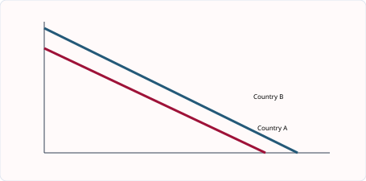
图解：比较优势取决于较低机会成本。专业化后在双方可接受的交换比率交易，才可能让两国消费超过各自生产组合。
专业化如何提高产出，也如何增加依赖
Specialisation使个人、企业、地区或国家集中于较擅长的活动，通过practice、division of labour、special equipment和减少转换时间提高productivity。交换让专业化者获得自己不生产的商品，因此专业化与trade通常相互依存。
Absolute advantage比较相同资源下谁产得更多；comparative advantage比较生产一单位商品放弃多少另一商品。即使一国两种商品都有绝对优势，只要相对机会成本不同，仍可能通过专业化与贸易获益。
专业化也有风险：需求变化、技术替代、原料中断或贸易限制会放大冲击；重复工作可能降低积极性；国家过度依赖单一出口会受到世界价格波动影响。因此收益取决于多样化、储备、技能适应和贸易伙伴稳定性。
English for understanding. Comparative advantage explains the pattern of mutually beneficial specialisation. It does not require one country to be absolutely less productive. Gains arise when resources move towards the activity with the lower opportunity cost and trade occurs at an acceptable exchange ratio.
判断题先分别计算每个国家同一产品的unit opportunity cost，再横向比较。不要用“谁产量大”直接判断comparative advantage。
知识点 03/06｜专业化与分工｜Specialisation and division of labour
个人、企业或国家集中生产较擅长的产品，可通过练习、设备和规模提高生产率，再通过交换获得其他商品。风险包括过度依赖、工作单调和需求变化。
English. Specialisation raises potential output when resources become more productive, but it increases dependence on exchange.
知识点 04/06｜绝对优势与比较优势不同｜Absolute versus comparative advantage
absolute advantage比较谁用同样资源产量更高；comparative advantage比较谁的机会成本更低。即使一国两种商品都产得更多，另一国仍可能在其中一种有比较优势。
English. Comparative advantage depends on relative opportunity cost, not absolute output.
知识点 05/06｜贸易收益需要合适交换比率｜Terms of trade in a simple model
若A生产1车放弃2米，B放弃5米，A在车有比较优势。1车交换严格多于2且少于5单位米，两国才可能都比自产更划算。
English. A mutually beneficial exchange rate lies between the two countries’ opportunity costs, assuming resources can specialise and trade.
知识点 06/06｜专业化结论的限制｜Limits to specialisation
运输成本、贸易壁垒、产品差异、调整成本、失业、供给风险和规模限制会减少收益。比较优势也会随技术、教育与资源变化。
English. The basic model shows potential gains; real gains depend on adjustment, transport, market access and changing productivity.
6.1｜比较优势的数字计算方法｜Numerical comparative advantage
若 A 国一小时产 8 件衣服或 4 台电脑，生产 1 台电脑的机会成本是 2 件衣服；B 国一小时产 6 件衣服或 6 台电脑，生产 1 台电脑的机会成本是 1 件衣服。因此 B 在电脑有比较优势，A 在衣服有比较优势。比较的是比率，不能只看“谁生产得更多”。
汇率题先说明报价方式。若 1 USD 从 7.0 CNY 升至 7.3 CNY，人民币对美元贬值；中国出口对美国买家更便宜，但进口原材料更贵。紧接着加一句条件：The effect on the current account depends on price elasticities and the time needed for contracts to change.
知识点 01/05｜比较优势的数值法：先统一“每一单位”的方向｜Using a consistent per-unit opportunity cost
若表格给的是相同资源下最大产量，用“另一商品产量÷本商品产量”求一单位机会成本。A 可产 12 wheat 或 6 cars，则 1 car=2 wheat，1 wheat=0.5 car。每个国家都算两行，再横向比较同一商品；机会成本较低者有 comparative advantage。
知识点 02/05｜比较优势的数值法：检验交换比率是否互利｜Testing whether the terms of trade benefit both countries
Terms of trade 必须介于两国国内机会成本之间。若 A 生产 1 car 放弃 2 wheat，B 放弃 4 wheat，国际交换率为 1 car:3 wheat，则 A 出口 car 可换 3 wheat，超过自行转产得到的 2；B 进口 car 只付 3 wheat，少于自行生产放弃的 4。
对每个国家分别计算 1 unit X 的 Y opportunity cost 和 1 unit Y 的 X opportunity cost，再横向比较同一商品。两个单位成本互为倒数。
A:12 wheat或6 cars，所以1 car=2 wheat；B:8 wheat或2 cars，所以1 car=4 wheat。A出口car。若1 car换3 wheat，A得到超过2，B支付少于4，双方获益。
分子分母颠倒会同时错判两个产品。答案必须写单位，例如 wheat per car。
A 的1 car=2 wheat，B 的1 car=4 wheat；若terms of trade为1 car:3 wheat，A 出口car得到3 wheat，B进口car只付3 wheat，双方都优于国内机会成本。
比较优势计算：每一步都写清单位
若表格给“相同资源下最大产量”，A可生产12 wheat或6
cars，则1 car = 12÷6 = 2 wheat，1 wheat = 6÷12 = 0.5 car。B可生产8
wheat或2
cars，则1 car = 4 wheat，1 wheat = 0.25 car。A在cars机会成本较低，B在wheat较低。
交换比率必须位于两国国内机会成本之间。A出口1 car在国内只放弃2
wheat；若国际上换3 wheat，A多得1。B自行生产1 car要放弃4
wheat；进口只付3，B少放弃1。1 car : 3 wheat使双方受益；等于2只让B获益，等于4只让A获益，区间外至少一方不愿交易。
Reverse-format warning. 有些题给生产一单位所需工时，而不是最大产量。此时数字本身就是资源成本，较小者更有效率，不再用“另一产量÷本产量”。先读表头与单位，再决定算法。
Model answer. “Country A has a comparative advantage in cars because one car costs 2 tonnes of wheat, compared with 4 tonnes in Country B. Country B has a comparative advantage in wheat because one tonne costs 0.25 car, compared with 0.5 car in A. A terms of trade between 2 and 4 tonnes per car can benefit both.”
最后做互检：一种商品机会成本的倒数应等于另一商品机会成本；两个国家通常不会在两种商品都具有较低机会成本。若出现这种结果，先检查分子分母是否颠倒。
知识点 03/05｜产量表的交叉除法｜Output-table method
若A最多产12麦或6车，则1车机会成本=12÷6=2麦，1麦=6÷12=0.5车。每国分别计算，再比较同一种商品，较低者有比较优势。
English. For an output table, divide the maximum output forgone by the maximum output gained. Compare like with like.
知识点 04/05｜投入表要反向判断｜Input-table method
若表格给每单位产品所需工时，工时少者有绝对优势；比较优势仍要计算机会成本，而不能只选最少数字。产量表与投入表的读取方向不同。
English. Input requirements and maximum outputs must not be interpreted in the same way. Identify what the numbers measure first.
知识点 05/05｜验证两种商品优势必须成对｜Consistency check
两国两商品模型中，一国在一种商品机会成本较低，另一国通常在另一种较低。若算出同一国两种都有比较优势，往往是除法方向或比较对象错了。
English. Use reciprocal opportunity costs as a check. Comparative advantages should be consistent across the two-good model.
6.1–6.2｜自由贸易、贸易保护与全球化｜Free trade, protection and globalisation
自由贸易可降低价格、扩大选择、形成规模经济并增强竞争。保护主义包括 tariff、quota、subsidy 和 regulations；理由可为幼稚产业、就业、国家安全或反倾销，但代价通常是消费者价格更高、报复与低效率。高分答案必须同时写受保护企业和消费者，而非只写“有利/不利”。
知识点 01/06｜自由贸易与保护主义：自由贸易的收益与调整成本｜Benefits of free trade and adjustment costs
Free trade 扩大 market size，促进 specialisation、competition、choice 和 economies of scale，并降低进口价格。然而进口竞争会使缺乏竞争力的企业缩小，造成 structural unemployment；国家也可能依赖关键进口或承受外部冲击。
知识点 02/06｜自由贸易与保护主义：保护工具与利益相关者｜Protection instruments and stakeholder effects
Tariff 是进口税，提高进口价格并产生政府收入；quota 直接限制数量，可能产生配额租；subsidy 降低国内企业成本；embargo 禁止贸易。保护可支持 infant industry、employment、strategic goods 和 current account，却提高消费者价格、削弱竞争，并可能引发 retaliation。
Tariff 改变进口价格并产生政府收入，quota 直接限制数量，subsidy 支持国内成本，embargo 禁止交易。每种工具对消费者、生产者与政府的影响不同。
tariff on imported steel -> import price rises -> demand shifts towards domestic steel -> local output/jobs may rise -> car makers pay more -> car prices rise and export competitiveness may fall -> retaliation risk。
世界价$100，tariff 20%，进口价约$120。若进口量从1m降至0.7m，理论关税收入约$14m；但忽略行政成本和可能的逃税。
Protection can support infant industries or strategic capacity, but it reduces competitive pressure and creates costs for users of imported inputs. Quotas restrict quantity directly; tariffs change price and raise government revenue.
Tariff 不会机械地把 import quantity 降为零；结果取决于需求、国内供给与税率。
结论要比较短期 adjustment benefits 与长期 efficiency costs，并考虑 retaliation。
自由贸易、保护与全球化要分利益相关者讨论
自由贸易扩大market size，促进specialisation与competition，使消费者获得更低价格和更多选择，企业可采购更便宜投入并利用规模经济。但进口竞争会使缺乏竞争力的行业收缩，工人和地区承担adjustment costs；总收益并不表示每个人都受益。
Tariff提高进口价格并带来政府收入；quota直接限制数量并可能产生配额租；subsidy降低国内企业成本但使用财政资源；embargo完全禁止特定贸易。工具不同，不能把所有保护政策都写成“进口价格上升”。
保护理由包括infant industry、就业、反倾销、战略产业和改善国际收支。长期保护可能削弱竞争、提高消费者与下游企业成本、引发retaliation。婴幼产业论只有在企业最终能够成长并取消保护时才成立。
Globalisation表现为商品、服务、资本、技术、信息和企业跨境联系加深。它可扩散技术并扩大市场，也会增加供应链依赖、税收协调和环境治理挑战。结论要区分短期调整与长期效率。
English evaluation. Trade protection may preserve output and employment in the protected industry, but it transfers costs to consumers and firms using imported inputs. Its overall effect depends on duration, retaliation, the industry’s ability to become competitive and the availability of worker retraining.
知识点 03/06｜自由贸易的收益机制｜Benefits of free trade
specialisation和larger markets可提高产量与规模经济；进口增加选择、降低价格并带来竞争；企业可获得更便宜投入。收益分布不均，受冲击行业可能失业。
English. Free trade can increase competition, choice, scale and access to inputs, but adjustment costs can be concentrated.
知识点 04/06｜关税、配额、补贴与禁运｜Protection instruments
tariff提高进口价格并带来税收；quota直接限制进口量；domestic subsidy降低本国企业成本；embargo是全面禁止。工具不同，价格、财政和数量效果也不同。
English. Protection can support domestic firms but raises costs, reduces choice and may invite retaliation.
知识点 05/06｜保护的理由与代价｜Arguments for and against protection
可保护infant industry、就业、国家安全、反倾销和经常账户；但长期保护削弱竞争与效率，消费者和使用进口投入的企业承担更高成本。
English. Evaluate protection by its objective, duration, targeting and the likelihood of retaliation or inefficiency.
知识点 06/06｜全球化的驱动与影响｜Globalisation
通信、运输、贸易自由化、资本流动和MNC推动经济联系。它扩大市场、技术和投资，也增加竞争、传染风险、环境压力和对全球供应链的依赖。
English. Globalisation integrates production and markets. Its benefits and costs differ across workers, firms and countries.
6.2｜跨国公司与全球生产｜Multinational companies
全球化提高资本、信息、商品和人员流动，可能带来 FDI、就业和技术转移，也可能令弱劳动者面临跨国竞争、利润外流和文化/环境压力。判断题应结合一个国家的技能、制度与产业结构。
知识点 01/06｜全球化：全球化不只是贸易增加｜Globalisation beyond an increase in trade
Globalisation 指商品、服务、资本、技术、信息和生产跨国联系增强。Multinational companies 通过 FDI 建厂，可能带来 capital、employment、training、tax revenue 和 access to export markets；东道国也可能面对 profit repatriation、tax avoidance、environmental damage 和对本地企业的竞争。
知识点 02/06｜全球化：不同群体获得不同结果｜Why globalisation creates different stakeholder outcomes
消费者可能因进口和竞争获得更低价格与更多选择；出口企业进入更大市场；部分工人获得岗位，另一些工人因 offshoring 失业。来源国企业可降低成本，却可能减少本国某些就业。评价必须分别讨论 consumers、workers、firms、government 和 environment。
Globalisation 包括 trade、FDI、capital、technology、information 与 labour 的跨国联系。MNC 是参与者之一，不能把两者当作同义词。
MNC builds factory -> capital and jobs enter host economy -> workers receive income/training -> local suppliers gain orders -> tax revenue may fund services；若 inputs imported and profits repatriated，local multiplier 较小。
工厂销售$100m，但进口投入$45m、利润汇回$25m，本地工资税收采购只有$30m。Gross sales 不能代表留在东道国的全部收益。
Technology transfer and access to global markets can raise productivity. However, bargaining power, tax rules, environmental regulation and local linkages determine how gains are shared. Globalisation creates winners and losers within countries.
短期 job creation 与长期 capability building 要分开，尤其关注技能转移和本地供应链。
MNC不是单纯的“外资”，而是跨国组织生产
Multinational company在多个国家拥有或控制生产。企业选址考虑market access、labour cost and skills、tax、infrastructure、resources、political stability与trade rules。低工资若伴随低生产率、物流困难或高风险，并不一定形成低单位成本。
对host country，MNC可创造就业、税收、出口、技术和supplier linkages；也可能汇回利润、挤压本地企业、获得税收优惠或产生环境成本。对home country，企业可获得利润和全球市场，却可能转移部分岗位。必须说明观察对象。
Worked chain. 一家电动车企业在当地建厂 -> 直接雇佣工人并向本地零部件商采购 -> household income和local demand增加 -> 政府税收可能上升 -> 培训提高技能。若关键部件全部进口、利润大量汇出且税收优惠过高，净收益会缩小。
议价能力影响分配。大型MNC可在国家之间比较政策条件，发展中国家则希望吸引投资；透明合同、环境标准、本地培训和竞争政策能提高长期收益，但过严要求也可能减少投资。
English for understanding. The impact of an MNC depends on the strength of local linkages. Employment alone is not enough: examine training, domestic suppliers, tax payments, profit flows, competition and environmental effects.
知识点 03/06｜MNC与FDI的定义边界｜MNCs and FDI
MNC在一个以上国家拥有或控制生产；FDI是为取得持久控制而进行的跨境投资，不是单纯购买少量外国股票。
English. A multinational company controls production in more than one country. FDI creates a lasting productive presence or control.
知识点 04/06｜东道国可能获得什么｜Host-country benefits
就业、税收、资本、技术、培训、出口和本地供应链可能增加。只有与本地企业和劳动者形成linkages，技术和收入才更可能留下。
English. Potential benefits become stronger when an MNC trains local workers, buys local inputs and reinvests profits.
知识点 05/06｜东道国可能承担什么｜Host-country costs
利润汇出、税收规避、挤压本地企业、低工资、资源消耗和污染都可能出现。政府议价能力与监管决定成本大小。
English. MNC activity may create external costs or profit outflows; the outcome depends on regulation and local bargaining power.
知识点 06/06｜企业为什么跨国布局｜Motives for international production
接近市场、避开关税、获取资源技能、降低成本、分散风险和利用基础设施都是动机。低工资不是唯一解释，低工资若伴随低生产率未必降低单位成本。
English. Firms choose locations based on unit cost, market access, skills, stability and infrastructure rather than wages alone.
6.3｜汇率、升值与贬值｜Exchange rates, appreciation and depreciation
汇率是一个货币用另一个货币表示的价格。货币 depreciation（贬值） 使出口在外国买家眼中更便宜、进口在国内更贵；若需求有弹性，净出口可能增加。但进口原料更贵也会推高成本型通胀，而且短期合约会形成 J-curve。不要写“贬值一定改善贸易差额”。
知识点 01/06｜汇率与经常账户：汇率是两种货币的价格｜The exchange rate as the price of one currency
Appreciation 表示本币能兑换更多外币，使 exports 在国外更贵、imports 对本国更便宜；depreciation 相反。浮动汇率受货币 demand 与 supply 影响：export demand、capital inflow 和高利率可能增加本币需求；import spending 与 capital outflow 增加本币供给。
知识点 02/06｜汇率与经常账户：数量反应决定最终结果｜Why quantity responses determine the final outcome
贬值首先改变价格，但 current account 是否改善取决于 PED、替代品、质量、capacity 和 time lag。进口原材料昂贵会造成 cost-push inflation，抵消出口价格优势。短期合同固定时数量反应慢，可能出现 J-curve。
Exchange rate 是两种货币的价格。Appreciation/depreciation 先改变 exports 和 imports 的相对价格，随后才通过 PED、contracts 与 capacity 改变数量和 current account。
currency depreciates -> exports cheaper to foreigners/imports dearer domestically -> X quantity may rise and M quantity fall -> net exports and employment may rise；imported inputs become dearer -> costs/inflation may rise。
£1=$1.40变为£1=$1.20，英镑 depreciation。售价£100的商品由$140降至$120（若英镑价不变）；英国买$120商品由约£85.71升至£100。
纵轴标本币价格或 exchange rate，横轴标 quantity of currency。需求增加通常使本币升值；随后分别分析出口价格、进口价格及数量反应，不能从汇率直接跳到 current-account 结论。
An exchange-rate change first alters relative prices. The current account changes only if buyers respond. Elasticity, contracts, production capacity and imported inputs determine the size and timing of the quantity response.
Appreciation 不是“出口数量必然下降”；先是相对价格改变，再由 PED 决定数量。
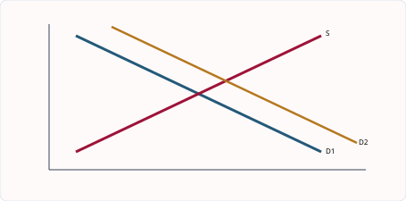
图解：本币需求增加可使其升值；升值使 exports dearer、imports cheaper，数量效果取决于弹性。
汇率题先把“谁相对谁”说清楚
若1 USD = 7.0 CNY变为1 USD = 7.3 CNY，一美元换到更多人民币，美元对人民币升值，人民币对美元贬值。同一变化从两种货币角度描述方向相反，所以答案必须写完整对象。
本币贬值使本国出口的foreign-currency price下降，进口的domestic-currency price上升；出口需求可能增加、进口需求可能减少，但数量反应取决于PED、合同、品牌和生产能力。进口原料变贵还会造成cost-push inflation。
本币升值产生相反价格效应，可降低进口原料和消费品价格，却削弱出口竞争力。旅游、留学和债务支付也会受到影响。企业可能使用长期合同或hedging，所以短期反应小于长期。
Floating exchange rate由货币需求与供给决定。出口、外资流入或较高利率可能增加本币需求；进口和对外投资增加本币供给。Fixed rate需要中央银行干预或使用外汇储备维持目标。
English chain. “A depreciation makes exports cheaper in foreign currency and imports more expensive in domestic currency. Export quantity may rise and import quantity may fall, so the current account may improve. The outcome depends on elasticities, time lags and spare capacity.”
知识点 03/06｜汇率是两种货币的价格｜Meaning of an exchange rate
若£1从$1.40变为$1.20，英镑depreciates，因为每英镑买到更少美元；美元相对英镑appreciates。同一变化必须说明基准货币。
English. An exchange rate is the price of one currency in terms of another. Appreciation and depreciation depend on which currency is being described.
知识点 04/06｜外汇需求与供给｜Demand and supply of currency
外国人买本国出口、投资本国资产或旅游会增加本币需求；本国人进口、海外投资或旅游会增加本币供给。相对利率、预期与投机也会移动曲线。
English. Currency demand and supply arise from trade, investment, tourism and expectations.
知识点 05/06｜升值与贬值的价格效应｜Effects on export and import prices
本币贬值使出口外币价格下降、进口本币价格上升；升值相反。数量反应取决于PED、合同、品牌和国内供给能力，不能从价格直接断言经常账户一定改善。
English. A depreciation changes relative prices, but trade volumes and the current account depend on elasticities and time.
知识点 06/06｜对企业与宏观目标的双面影响｜Wider effects
出口企业可能受益，但依赖进口原料者成本上升；贬值可增加就业和需求，也可能造成cost-push inflation。升值降低进口通胀，却削弱出口竞争力。
English. Exchange-rate changes create winners and losers depending on import content, export exposure and pricing decisions.
6.4｜经常账户及其变动｜The current account of the balance of payments
经常账户记录货物、服务、收入和转移支付。赤字代表流出大于流入，不必然坏：若进口的是资本设备，可能提升未来生产力；但长期靠短期借款融资会有风险。分析时区分“赤字的原因”和“赤字本身”。
知识点 01/07｜国际收支：Current account 的组成与符号｜Current-account components and signs
Current account 包括 trade in goods、trade in services、primary income 和 secondary income。出口记录为 credit，进口为 debit。Surplus 表示流入大于流出，deficit 相反。它是流量，不是政府“欠款总额”，也不等同于财政预算赤字。
知识点 02/07｜国际收支：赤字原因和影响需结合背景｜Contextual causes and effects of a deficit
进口高可能来自高收入、强汇率或本国产品竞争力低；也可能是进口 capital goods，为未来出口能力打基础。赤字可能增加外债或使汇率承压，但居民可获得更多商品和机器。改善方法包括 depreciation、提高 productivity、贸易限制或降低 AD，各自有副作用。
Current account 的主体是本国居民与外国之间的流量，项目包括 goods、services、primary income 和 secondary income。Credit 带来收入，debit 造成支付。
domestic income rises -> consumers buy more imports -> import expenditure rises -> current-account balance may deteriorate；若增长来自 export productivity，结果可能相反。
Goods exports 80、imports100；services exports40、imports25；net primary income-5、transfers+2。Current balance=(80-100)+(40-25)-5+2=-8，为 deficit 8。
A current-account deficit means payments out exceed receipts in the recorded categories. It is not identical to government debt. A surplus may reflect strong exports, weak domestic demand or restricted imports, so its welfare effect is ambiguous.
Trade balance 只含 goods（有些口径含 goods and services 时必须看题目）；current account 范围更广。
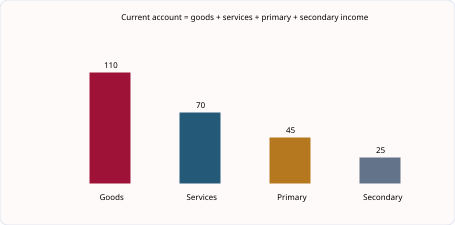
图解：经常账户把 goods、services、primary income 与 secondary income 的 credits 和 debits 相加。
经常账户是一张跨境“收入流量表”
Current account包括trade in goods、trade in services、primary income和secondary income。Exports与从国外收到的收入是credits，imports与付给国外的收入是debits。余额把四部分净额相加；正数为surplus，负数为deficit。
例：goods=-18bn、services=+7bn、primary income=+3bn、secondary
income=-1bn，总余额为-18+7+3-1=-9bn，即9bn
deficit。不要把进出口总额相加，也不要把capital flows混入current
account。
赤字可能来自国内增长强、进口资本品增加或竞争力不足，不能自动判断为坏；盈余可能反映强出口，也可能来自国内需求疲弱。要分析持续时间、融资方式和进口用途。
汇率、国内外收入、生产率、质量、通胀和贸易政策都会影响余额。贬值改善价格竞争力，但进口原料成本上升；紧缩政策减少进口，却可能降低增长与就业；supply-side policy见效较慢但更可持续。
English evaluation. A current-account deficit does not always require import restrictions. If imports finance productive investment, future exports may rise. Protection can reduce imports but raise costs and provoke retaliation. Policies that improve productivity and product quality may address the underlying competitiveness problem.
知识点 03/07｜单元综合案例｜出口增长、发展与可持续性并不是同一件事
某发展中经济体发现大型锂矿并扩大出口。出口收入增加会改善经常账户、创造就业并提供税收，政府可把收入用于教育、医疗和基础设施；但若经济过度依赖一种初级产品，国际价格下跌会迅速影响收入与财政。采矿还可能造成污染、迁移和资源耗竭。因此 GDP 增长并不自动等于生活水平全面提高。
判断发展应结合实际人均 GDP、教育、健康、贫困、收入分配和环境质量。名义 GDP 增加可能只是物价上涨；总 GDP 增加可能被人口增长抵消；平均值还可能掩盖地区与群体差距。HDI 用收入、教育和预期寿命扩展观察范围，但仍不能完整反映自由、安全、分配和生态成本。
贸易保护可以给幼稚产业学习时间、保护战略行业或减少结构性失业，但也会提高消费者价格、削弱竞争压力并引发报复。自由贸易能扩大市场与专业化，却可能让缺乏竞争力的行业承受调整成本。评价一项关税时，应明确目标、时间范围、受益者、成本承担者以及是否存在更精准的替代政策。
Integrated answer. An improvement in the current account may support growth if it results from more competitive exports. However, it may also result from a recession that reduces imports. The same numerical change can therefore have different meanings. A sound judgement uses the cause of the change, not the direction of the balance alone.
本单元最重要的能力，是拒绝把国家表现压缩成一个数字。先说明指标告诉了我们什么，再说明它遗漏了什么，最后根据题目情境选择更合适的证据，这就是发展与全球经济题的评价核心。
知识点 04/07｜经常账户四部分｜Four components
current account包括goods、services、primary income和secondary income。出口和收入流入记credit，进口和收入流出记debit；总和为正是surplus，为负是deficit。
English. The current account records trade in goods and services, primary income and secondary income.
知识点 05/07｜计算时先求净额再相加｜Calculation method
货物净额=exports−imports，服务同理，再加净primary和secondary income。单位必须一致；deficit是一个时期的流量，不等于政府债务存量。
English. Keep signs and units consistent. A current-account balance is a flow over a period.
知识点 06/07｜赤字与盈余的原因｜Causes of balance changes
收入增长、汇率、通胀差、生产率、质量、贸易壁垒与全球需求都会改变出口进口。赤字可能来自竞争力弱，也可能来自投资旺盛和高增长。
English. The same deficit can have different causes, so diagnosis is necessary before policy.
知识点 07/07｜政策选择与评价｜Policies and evaluation
贬值、紧缩需求、贸易限制与供给侧政策可能改善余额，但各有通胀、增长、报复与时滞成本。提高生产率和质量通常更可持续，却见效较慢。
English. A policy should address the underlying cause and consider effects on inflation, growth, consumers and trading partners.
2027–2029 考纲补充与整合｜Syllabus update and synthesis
补充知识点 01/02｜跨国公司的东道国与母国影响｜MNCs in host and home countries
MNC 在多个国家拥有或控制生产。对 host country，它可能带来就业、资本、技术、出口和税收，也可能挤压本地企业、汇回利润、利用税制差异或造成环境成本。对 home country，它可能增加海外利润和全球竞争力，但若生产外迁，也可能减少某些本国岗位。结论取决于 linkages、技能转移、税收规则、监管与利润用途。
English explanation. A multinational company can transfer capital, technology and management skills to a host economy. However, the size of the gain depends on local sourcing, worker training, taxation and environmental regulation. For the home country, overseas production may lower costs and increase profits, but some domestic workers may face structural unemployment.
补充知识点 02/02｜经常账户四部分｜Four components of the current account
current account balance = trade in goods + trade in services + primary income + secondary income。出口与从国外收到的收入记作 credits；进口与付给国外的款项记作 debits。deficit 表示总 debits 大于 credits，不等于国家“没有钱”；surplus 也不自动表示生活水平更高。
English explanation. The current account records trade in goods, trade in services, primary income and secondary income. A depreciation may improve the balance by making exports cheaper and imports dearer, but the outcome depends on elasticities, contracts, imported inputs, productive capacity and time.
3. 核心词汇表｜Core vocabulary（共 41 词）
| English term | 中文准确口径 | Exam-ready meaning |
|---|---|---|
| specialisation | 专业化 | Concentrating production on a narrower range of goods or tasks. |
| division of labour | 劳动分工 | Dividing production into separate specialised tasks. |
| absolute advantage | 绝对优势 | Producing more output with the same resources. |
| comparative advantage | 比较优势 | Producing at a lower opportunity cost. |
| opportunity cost | 机会成本 | The next best alternative forgone. |
| terms of trade | 交换比率 | The rate at which one product exchanges for another. |
| interdependence | 相互依赖 | Reliance of economies or firms on one another. |
| unit opportunity cost | 单位机会成本 | Output forgone to produce one extra unit of another product. |
| mutual gain | 共同收益 | A benefit received by both trading partners. |
| reciprocal | 倒数 | A number obtained by dividing one by another number. |
| free trade | 自由贸易 | International trade without artificial barriers. |
| protectionism | 贸易保护主义 | Government action restricting imports or supporting domestic producers. |
| tariff | 关税 | A tax placed on imports. |
| quota | 配额 | A legal limit on the quantity of imports. |
| embargo | 禁运 | A prohibition on trade with a country or in a product. |
| infant industry | 幼稚产业 | A new industry argued to need temporary protection. |
| retaliation | 报复性措施 | A trading partner’s response to another country’s restrictions. |
| globalisation | 全球化 | Increasing international integration of economies and markets. |
| multinational company (MNC) | 跨国公司 | A firm producing in more than one country. |
| outsourcing | 外包 | Purchasing activities from an outside supplier. |
| offshoring | 离岸外移 | Moving production or services to another country. |
| technology transfer | 技术转移 | The spread of production knowledge or equipment between economies. |
| repatriated profit | 汇回利润 | Profit transferred from a host country to the firm’s home country. |
| labour standards | 劳动标准 | Rules and conditions governing workers’ treatment. |
| exchange rate | 汇率 | The price of one currency in terms of another. |
| appreciation | 升值 | A rise in a currency’s value under a floating system. |
| depreciation | 贬值 | A fall in a currency’s value under a floating system. |
| export price | 出口价格 | The price foreign buyers pay for exported products. |
| import price | 进口价格 | The domestic-currency price of imported products. |
| demand for currency | 货币需求 | Demand created by purchases of a country’s goods, services or assets. |
| supply of currency | 货币供给 | Currency offered to buy foreign goods, services or assets. |
| balance of payments | 国际收支 | A record of a country’s transactions with the rest of the world. |
| current account | 经常账户 | The account recording trade in goods and services plus income and transfers. |
| visible exports | 有形出口 | Goods sold to other countries. |
| invisible exports | 无形出口 | Services sold to other countries. |
| current-account deficit | 经常账户赤字 | Current-account debits exceeding credits. |
| current-account surplus | 经常账户盈余 | Current-account credits exceeding debits. |
| competitiveness | 竞争力 | The ability to sell successfully against rival producers. |
| multinational company | 跨国公司 | A firm that owns or controls production in more than one country. |
| primary income | 初次收入 | Income flows such as profit, interest and wages between countries. |
| secondary income | 二次收入 | Current transfers between countries without a direct exchange of output. |
4. 单元练习｜Unit practice（共 21 题）
练习 01/21
Question. A country is less productive than another in both goods. Can it still have comparative advantage?
练习 02/21
Question. Discuss whether greater specialisation benefits workers and consumers.
练习 03/21
Question. Country A gives up 2 rice for one phone; B gives up 5. Which exchange rate benefits both?
练习 04/21
Question. Using opportunity-cost data, explain why two countries may gain from trade.
练习 05/21
Question. Country A can produce 12 wheat or 6 cars; B can produce 8 wheat or 2 cars. Calculate the opportunity cost of one car in each country and identify comparative advantage. [5]
练习 06/21
Question. Which group is most likely to lose directly from a tariff on imported food?
练习 07/21
Question. Discuss whether an infant industry should receive protection.
练习 08/21
Question. Which is a likely host-country benefit of FDI: guaranteed equal income, technology transfer, no competition, or elimination of imports?
练习 09/21
Question. Discuss whether MNCs improve living standards in developing economies.
练习 10/21
Question. Who is most likely to gain from an appreciation: an exporter paid in foreign currency, a domestic tourist travelling abroad, or a producer competing with cheaper imports?
练习 11/21
Question. Discuss whether depreciation will reduce a current-account deficit.
练习 12/21
Question. The exchange rate changes from £1=$1.40 to £1=$1.20. Identify the change and calculate the new dollar price of a £250 export. [3]
练习 13/21
Question. Which transaction is a credit item: a resident buys an imported car, a foreign tourist buys a hotel service domestically, or government pays foreign interest?
练习 14/21
Question. Discuss whether a current-account deficit is harmful.
练习 15/21
Question. Goods exports are 70, goods imports 95, services exports 40, services imports 25, net primary income -4 and net transfers +1. Calculate the current-account balance. [4]
练习 16/21
Question. Country X gives up 2 units of rice to produce 1 car. Country Y gives up 5 units of rice to produce 1 car. Which statement is correct?
A X has comparative advantage in cars B Y has comparative advantage in cars C X must import cars D no trade can benefit either country
练习 17/21
Question. A country records goods −$18bn, services +$7bn, primary income +$3bn and secondary income −$1bn. Calculate the current-account balance. [3]
练习 18/21
Question. Explain how a tariff may protect domestic firms. [4]
练习 19/21
Question. Analyse how a depreciation may affect a manufacturer that imports components and exports finished products. [6]
练习 20/21
Question. Explain two possible benefits of an MNC to a host country. [6]
练习 21/21
Question. Discuss whether a current-account deficit should always cause a government to introduce import restrictions. [8]
5. 练习答案与解析｜Answers and explanations（共 21 题）
答案 01/21
正确答案｜Correct answer. Yes. It can have a lower opportunity cost in one good even without an absolute advantage.
答案 02/21
参考答案｜Model answer. Productivity and scale may lower prices and raise wages or choice. Workers gain expertise. However, repetitive work can reduce motivation, and demand changes may cause severe unemployment in specialised regions. Consumers become more dependent on supply chains.
答案 03/21
正确答案｜Correct answer. One phone for any amount strictly between 2 and 5 rice, such as 3 rice.
答案 04/21
参考答案｜Model answer. The country with the lower opportunity cost should specialise relatively more in that product. Combined output can rise because resources are used where sacrifice is smaller. At terms of trade between the two costs, the exporter receives more than domestically and the importer gives up less.
答案 05/21
正确答案｜Correct answer. A: one car costs 12/6 = 2 wheat. B: one car costs 8/2 = 4 wheat. A has comparative advantage in cars because its opportunity cost is lower; B has comparative advantage in wheat because one wheat costs 2/8 = 0.25 car, compared with 6/12 = 0.5 car in A.
答案 06/21
正确答案｜Correct answer. Domestic consumers, because they face higher prices and less choice, although local producers may gain.
答案 07/21
参考答案｜Model answer. Temporary protection may allow learning, scale economies and future competitiveness. It can preserve jobs and diversify the economy. But firms may become dependent and inefficient; consumers pay more and governments may be lobbied to extend protection. Conditions and a credible time limit matter.
答案 08/21
正确答案｜Correct answer. Technology transfer, although its extent depends on training and links with domestic firms.
答案 09/21
参考答案｜Model answer. They may create employment, wages, training, exports and tax revenue. Competition and technology can raise productivity. Conversely, profits may leave, local firms may close, jobs may be insecure and pollution may rise. Regulation and job quality determine the net effect.
答案 10/21
正确答案｜Correct answer. The tourist travelling abroad, because each unit of domestic currency buys more foreign currency.
答案 11/21
参考答案｜Model answer. Cheaper exports and dearer imports may raise export receipts and reduce import spending. Yet demand may be inelastic, firms may lack capacity, and imported raw materials raise costs. Short-run contracts can delay adjustment. Success depends on elasticities and time.
答案 12/21
正确答案｜Correct answer. The pound depreciates because each pound buys fewer dollars. The export price changes from $350 to $300. Whether export revenue rises depends on the response of foreign quantity demanded.
答案 13/21
正确答案｜Correct answer. The foreign tourist’s purchase, because it is an export of services and brings foreign currency receipts.
答案 14/21
参考答案｜Model answer. It may weaken the currency, increase borrowing and indicate low competitiveness. Yet it may finance imported capital goods, reflect strong growth and provide consumers with choice. Harm depends on size, persistence, financing and whether imports improve future productivity.
答案 15/21
正确答案｜Correct answer. (70 - 95) + (40 - 25) - 4 + 1 = -13. The economy has a current-account deficit of 13 units; the negative sign is a flow deficit, not government debt.
答案 16/21
正确答案｜Correct answer. A - X has the lower opportunity cost of a car: 2 units of rice compared with 5 in Y. Comparative advantage depends on relative opportunity cost, not total output.
答案 17/21
正确答案｜Correct answer. Current-account balance = −18 + 7 + 3 − 1 = −$9bn. The country has a current-account deficit of $9bn.
答案 18/21
参考答案｜Model answer. A tariff raises the domestic price of imports. Consumers may switch towards domestically produced substitutes, increasing demand and sales for local firms. Domestic output and employment may rise, although consumers pay more and protected firms may face weaker pressure to become efficient.
答案 19/21
参考答案｜Model answer. Depreciation makes exported finished products cheaper in foreign currency, which may raise export demand and revenue. However, imported components become more expensive in domestic currency, raising production cost and possibly price. The net effect on profit depends on export and import shares, elasticities, contracts and the firm’s ability to switch suppliers.
答案 20/21
参考答案｜Model answer. An MNC may create jobs, raising household income and tax revenue; if it trains workers, productivity and future employability also rise. It may bring capital and technology, expand productive capacity and exports, and create orders for local suppliers. Each benefit depends on local linkages and whether profits and skills remain in the host economy.
答案 21/21
参考答案｜Model answer. Restrictions may reduce imports, support domestic employment and improve the balance in the short run. However, tariffs and quotas raise consumer and producer costs, invite retaliation and reduce competition. A deficit may reflect productive investment or strong growth rather than weakness. Supply-side policies that raise productivity and export quality may be more sustainable. Intervention is more justified when a persistent deficit reflects low competitiveness and when measures comply with trade obligations.
6. 自学检查清单｜Self-study checklist（共 11 项）
- □ 能用机会成本而不是总产量判断 comparative advantage
- □ 能从产量表计算每单位产品的机会成本
- □ 能解释专业化和自由贸易的收益与风险
- □ 能区分 tariff、quota、subsidy 与 embargo
- □ 能评价 infant industry、employment、dumping、strategic industry 等保护理由
- □ 能分析全球化对消费者、工人、企业和政府的不同影响
- □ 能分别评价 MNC 对 host country 与 home country 的影响
- □ 能解释 fixed/floating exchange rate、appreciation 与 depreciation
- □ 能写出汇率变化影响出口进口的价格—需求链
- □ 能识别 current account 四部分并计算余额
- □ 能评价改善 current-account deficit 的政策与限制
从0455走向后续经济学学习｜Building a foundation for further study
0455的价值不只是完成一次考试。稀缺与机会成本训练“在约束下比较选择”；供求与弹性训练“用模型解释变量变化”；企业、宏观政策、发展和国际贸易训练“从主体激励推到社会结果”。这些能力将直接支持后续更高阶经济学，但本书始终以0455考纲为边界，不提前堆入超纲模型。
学习时建议保留三本薄笔记：一本记录中英定义，一本重画经济图，一本保存做错的题和错误原因。每次订正都回答三个问题：题干改变了什么变量？哪条因果链断了？英文答案缺少哪个连接词或条件？这样才能把“看懂”转化为可迁移的分析能力。
A useful habit. For every economic conclusion, ask: who makes the decision, what incentive changes, what action follows, and under what condition might the result be different? This habit is more valuable than memorising isolated sentences.
附录｜Appendix
本册共收录 230 个单元词条 与 122 道原创或重写的 Cambridge-style 练习，每题均有同号答案。词条在不同单元承担不同概念功能时允许必要重复。
练习与答案校验说明｜Question-and-answer verification
- 本版对全册 122 道原创或重写的 Cambridge-style 练习完成编号配对检查：每一题均有同号答案，没有缺题或错位。
- 计算题重新核算百分比、差额、成本、收益、宏观指标与国际收支；选择题检查了唯一最佳答案；结构题依据题干分值补足定义、应用、因果链或双边评价。
- 市场失灵与弹性题重点对照 2027 specimen Paper 2 mark scheme 的口径：external cost 与 social cost、最高/最低限价、merit good 与补贴、PED 决定因素等均按官方可得分逻辑校正。
- 本书题目不是官方历年真题，答案是学习用 model answers，不应冒充 Cambridge 官方 mark scheme。真实考试允许其他同样正确且切题的表达。
官方来源与版权说明｜Official source and copyright note
- Cambridge IGCSE Economics (0455), Syllabus for examination in 2027, 2028 and 2029.
- 本书依据公开考纲的内容范围、assessment objectives 与题型结构编写；题目、数字、案例、图表和解析均为重新创作。Cambridge International 未参与或背书本资料。